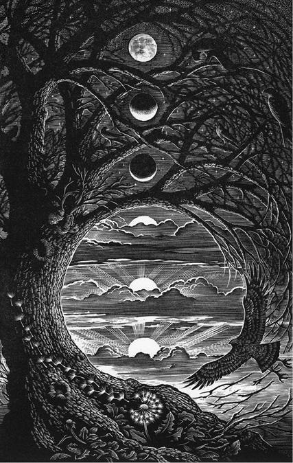

Книга отпечатана в шатре кочевников, в пустыне Лоп – почти идеально ровной местности, известной также некоторым людям под названием Великая Впадина Лоп, которая тянется на восток вдоль подножия Курук-таг до некогда конечной Таримской впадины, что в Синьцзян-Уйгурском автономном районе.
Книга переплетена за огромные деньги в мастерской, расположенной глубоко под землей. Из соображений собственной безопасности вам не стоит пытаться отыскать вход в нее, который находится между Фиш-стрит-хилл и Паддинг-лейн, Лондон. [Оба места связаны с Великим лондонским пожаром. (Здесь и далее примеч. пер., если не указано иное.)]
Корректор – зоркая и бдительная двуглавая и пятиглазая Патрисия Паноптикот.
Caesar non supra grammaticos. [И Цезарь не выше грамматиков (лат.)]
Просьба не копировать, не красть и не загибать страницы этой книги. Просьба не ставить на эту книгу чашки, тарелки, а также не подпирать ею двери. Просьба не читать третий рассказ этого сборника вслух задом наперед.
Издатель не несет ответственности за возможные последствия.
Данная книга – это художественное произведение. Имена, персонажи, места и события являются плодом воображения автора или использованы в вымышленном контексте. Любое сходство с реальными людьми, живыми или усопшими, компаниями, событиями и местами является случайным.
Посвящается Алме Лефэй Сапсан, которая научила меня любить сказки.
МН
Homo sum: humani nil a me alienum puto. [Я человек, и ничто человеческое мне не чуждо (лат.)]
Теренций
Дорогой читатель,
книга, которую ты держишь в руках, предназначена только для глаз странных людей. Если по чистой случайности ты не относишься к числу аномальных личностей – другими словами, если ты не паришь в воздухе по ночам только потому, что забыл привязаться к кровати, если твои ладони не вспыхивают языками пламени в самые неподходящие для этого моменты или если ты не принимаешь пищу ртом, расположенным на затылке, – в таком случае прошу тебя немедленно вернуть книгу туда, где ты ее нашел, и забыть о том, что ты вообще ее видел. Не волнуйся, ты ничего не потеряешь. Я уверен, что содержащиеся в ней истории все равно показались бы тебе странными. Они расстроили бы тебя и в любом случае не понравились бы. Так или иначе, все это совершенно тебя не касается.
Странно ваш,
редактор и составитель.
Предисловие
Если вы твердо стоите на странных позициях и дочитали до этого места, на что я искренне надеюсь, то необходимости представлять вам эту книгу нет. Вы выросли на этих историях. Сначала вам читали их вслух, затем вы зачитывались ими самостоятельно. Они доставляли вам столько радости, и вы брали их в руки так часто, что многие из них запомнили наизусть. Если же вы относитесь к числу тех несчастных, кто совсем недавно постиг собственную странность или вырос без доступа к литературе для странных людей, то именно для вас и предназначено это краткое вступление.
«Сказки о странных» – это сборник любимых нами историй. С незапамятных времен они передавались из поколения в поколение. Каждый рассказ отчасти содержит историческую правду, отчасти является вымыслом, но в любом случае это этический урок, предназначенный для юных странных читателей. Эти сказки были собраны по всему земному шару. Некоторые были записаны со слов сказителей, другие являли собой часть письменной традиции, но с годами претерпели разительные изменения. Такая долгая жизнь этих историй объясняется их художественной ценностью, но не только этим. В них также заключено тайное знание. На этих страницах находится закодированная информация о входах в петли, подлинных личностях некоторых значимых странных людей и многом другом, что способно помочь странным людям выжить в этом враждебном мире. Уж мне это известно как никому другому: благодаря «Сказкам» я до сих пор жив и пишу эти строки. Они спасли не только меня, но также моих друзей и нашу обожаемую имбрину. Я, Миллард Наллингс, являюсь живым свидетельством полезности этих рассказов, несмотря на то что они были написаны много лет назад.
Вот почему я занялся их сохранением и распространением и возложил на себя задачу опубликовать это особенное издание «Сказок» с примечаниями. Оно ни в коей мере не является ни исчерпывающим, ни завершенным. Издание, на котором рос я, представляло собой знаменитый неподъемный трехтомник, весивший больше, чем моя подруга Бронвин. Но зато я отобрал для этого сборника свои любимые сказки и позволил себе написать к ним примечания и пояснения, чтобы моей мудростью смогли воспользоваться странные люди в любой точке мира. Надеюсь, что это издание станет вашим постоянным спутником в странствиях и приключениях и пригодится вам так же, как когда-то пригодилось мне.
А посему наслаждайтесь «Сказками» – у огня, потрескивающего в камине в холодную ночь. В идеале у ваших ног будет дремать гримведь. Но не забывайте о конфиденциальном характере этих историй и, если вы захотите почитать их вслух (что я вам очень рекомендую), вначале убедитесь, что ваши слушатели тоже странные.
Миллард Наллингс,
эсквайр, доктор педагогических наук, бакалавр медицины
Сказки о странных
Под редакцией Милларда Наллингса
Иллюстрации Эндрю Дэвидсона
Великолепные каннибалы
Cтранные люди деревни Свомпмак [Swampmuck (англ.) – болотная жижа, грязь.] жили очень скромно. Они были фермерами и, хотя у них не было дорогих и изысканных вещей, а ночевать им приходилось в шатких камышовых хижинах, обладали крепким здоровьем, ни в чем не нуждались и умели радоваться жизни. В их садах в изобилии росли фрукты и овощи, в ручьях бежала чистая вода. Даже их скромные жилища казались роскошными, потому что в Свомпмаке всегда стояла изумительная погода, а деревенские жители были настолько увлечены своей работой, что, закончив вымакивать грязь (чем они, собственно, и занимались с утра до вечера), многие из них просто ложились и спали в своих болотах.
Больше всего им нравилось убирать урожай. Работая не покладая рук, они срывали лучшую траву, успевшую вырасти на болоте за лето, после чего грузили ее на тележки, в которые были запряжены ослики. Затем свомпмакцы везли это добро на рынок в расположенный в пяти днях пути от их деревни городок Чиппинг Уиппет, где старались во что бы то ни стало продать выращенное.
Их труд был нелегким. Жесткая болотная трава резала руки. Ослы были раздражительными и часто кусались. Изрытая ямами дорога к рынку изобиловала грабителями. На болотах часто происходили несчастные случаи, такие, например, как тот, когда фермер Пуллман, старательно убирая урожай, случайно отрезал косой ногу своему соседу. Сосед, фермер Хейворт, разумеется, очень огорчился, но, как и все жители деревни Свомпмак, он был таким милым человеком, что вскоре простил обиду. Заработок на рынке был мизерным, но его хватало на то, чтобы купить самое необходимое и несколько козьих огузков в придачу. Это редкое угощение было коронным блюдом на шумном многодневном пиру.
В том году сразу после того, как праздник сбора урожая окончился и свомпмакцы уже собирались снова приступить к своим работам на болотах, в деревню прибыли трое всадников. Гости в Свомпмаке появлялись крайне редко, поскольку это селение не относилось к числу мест, привлекающих посетителей. А уж таких гостей тут сроду не бывало. Двое мужчин и одна дама с головы до ног были разряжены в золотой шелк и сидели на великолепных арабских лошадях. Но хотя гости, вне всякого сомнения, были богаты, они выглядели истощенными и от слабости покачивались в изукрашенных драгоценными каменьями седлах.
Жители деревни столпились вокруг, с любопытством глядя на приезжих и дивясь их красивой одежде и лошадям.
– Не подходите к ним слишком близко! – предостерегла соседей фермерша Сэлли. – Судя по их виду, они наверняка чем-то больны.
– Мы едем на побережье Мика, [Историческая местность, куда ссылали преступников. Считается, что она находилась где-то на территории современного Корнуолла. (Примеч. Милларда Наллингса.)] – пояснил один из всадников. Похоже, этот мужчина был единственным из всей троицы, у кого еще оставались силы на то, чтобы говорить. – Несколько недель назад на нас напали бандиты, и хотя нам удалось от них ускакать, мы заблудились. С тех пор мы ездим кругами в поисках старой римской дороги.
– Отсюда очень далеко до римской дороги, – сообщила им фермерша Сэлли.
– Как и до побережья Мика, – добавил фермер Пуллман.
– Насколько далеко? – спросил всадник.
– Шесть дней верхом, – ответила фермерша Сэлли.
– Нам туда уже ни за что не добраться, – мрачно произнес мужчина.
Услышав это, закутанная в шелка дама сползла с седла и упала на землю.
Жители деревни преисполнились сочувствия и, несмотря на опасения заразиться, перенесли упавшую даму в ближайшую хижину, пригласив туда и ее спутников. Приезжим дали воды и уложили на соломенные тюфяки. Дюжина фермеров толпилась вокруг, предлагая гостям свою помощь.
– Оставьте их в покое! – сказал фермер Пуллман. – Они выбились из сил и нуждаются в отдыхе!
– Нет, им нужен врач! – возразила фермерша Сэлли.
– Мы не больны, – произнес мужчина-путешественник. – Мы голодны. Наши припасы закончились примерно неделю назад, и с тех пор у нас во рту не было ни крошки.
Фермерша Сэлли задалась вопросом, почему такие богатые люди не купили еду у других путников, но спрашивать об этом вслух ей было неловко. Она поручила деревенским мальчишкам принести гостям супа из болотной травы, просяного хлеба и козьих огузков, оставшихся после праздника. Но когда все это разложили перед приезжими, они отвергли предложенную им пищу.
– Я не хочу вас обидеть, – сказал один из мужчин-путешественников, – но мы не можем это есть.
– Я знаю, что это очень скромное угощение, – ответила фермерша Сэлли, – а вы, вероятно, привыкли пировать по-королевски, но у нас больше ничего нет.
– Дело не в этом, – возразил мужчина. – Наши тела просто не в состоянии усваивать крупу, овощи и мясо. А если мы будем есть через силу, нас это только еще больше ослабит.
Фермеры растерялись.
– Если вы не можете есть крупу, овощи и мясо, – спросил фермер Пуллман, – то что вы вообще можете есть?
– Людей, – ответил мужчина-путешественник.
Свомпмакцы, собравшиеся в маленьком домике, попятились.
– Вы хотите сказать, что вы… каннибалы? – уточнил фермер Хейворт.
– От рождения, а не по собственному желанию, – сказал мужчина-путешественник. – Да, это так.
Он принялся уверять изумленных фермеров, что он и его спутники – каннибалы цивилизованные и никогда не убивают невинных людей. Они и другие, подобные им, пришли с королем к соглашению, по которому обязались никогда не похищать и не есть людей против их воли. Взамен каннибалам было позволено приобретать за огромные деньги конечности, оторванные в результате несчастных случаев, и тела повешенных преступников. Ничего другого они не ели. И сейчас держали путь на побережье Мика, потому что именно эти места могли похвастать самым высоким в Британии количеством несчастных случаев, а также казней через повешение. Это означало, что еды было в достатке, хотя назвать изобилием это все равно было бы невозможно.
И хотя в те времена каннибалы были богаты, они почти никогда не испытывали чувства сытости. Законопослушные граждане, они были обречены на недоедание, и их всегда терзал голод, утолить который удавалось крайне редко. Все указывало на то, что каннибалы, прибывшие в Свомпмак, настолько истощены (а до Мика еще так далеко), что обречены на смерть.
Выслушав все это, жители любой другой деревни, как странной, так и обычной, пожали бы плечами и предоставили бы людоедам голодать дальше. Но обитатели Свомпмака были почти до неприличия отзывчивы, и поэтому никто не удивился, когда фермер Хейворт сделал шаг вперед, неловко опираясь на костыли, и произнес:
– Так уж вышло, что несколько дней назад в результате несчастного случая я потерял ногу. Я швырнул ее в болото, но, вероятно, смог бы ее найти, если только ее еще не съели угри.
У приезжих загорелись глаза.
– Вы правда сделаете это для нас? – спросила женщина-каннибал, отводя с запавшей щеки прядь волос.
– Мне ваши кулинарные предпочтения, конечно, кажутся странными, – произнес Хейворт, – но не можем же мы позволить вам умереть.
Остальные фермеры поддержали его. Хейворт доковылял до болота и нашел свою ногу. С трудом отогнав облепивших ее угрей, он положил ногу на блюдо и принес ее каннибалам.
Один из них протянул фермеру кошелек с деньгами.
– Что это? – спросил Хейворт.
– Оплата, – пояснил каннибал. – Ровно столько, сколько берет с нас король.
– Я не могу это принять, – ответил Хейворт, но когда он попытался вернуть кошелек, каннибал заложил руки за спину и улыбнулся.
– Это будет справедливо, – заявил он. – Вы спасли нам жизнь!
Каннибалы начали есть, и жители деревни тактично отвернулись. Фермер Хейворт открыл кошелек, заглянул внутрь и слегка побледнел. Еще никогда в жизни он не видел столько денег.
Несколько последующих дней каннибалы ели и восстанавливали силы. Когда они наконец снова готовы были тронуться в путь – подробно расспросив, в каком направлении им необходимо ехать, – жители деревни собрались, чтобы с ними попрощаться. Увидев фермера Хейворта, приезжие обратили внимание на то, что он ходит без помощи костылей.
– Я не понимаю! – в изумлении воскликнул один из мужчин-каннибалов. – Я думал, мы съели твою ногу!
– Так и было, – ответил Хейворт. – Но когда странный человек из Свомпмака теряет конечность, она отрастает снова. [Были времена – давно забытая безмятежная эра, – когда странные люди могли жить вместе, вне петель, открыто, не опасаясь преследований. Странные люди той поры часто делились на группы в зависимости от того, какими способностями они обладали. В наши дни к подобной практике относятся неодобрительно, поскольку она усиливает обособленность и вражду между отдельными группами странных людей. (Примеч. Милларда Наллингса.)]
На лице каннибала появилось странное выражение. Казалось, он хотел что-то сказать, но затем передумал. Сев на лошадь, он уехал вместе со своими спутниками.
Прошло несколько недель. Жизнь в Свомпмаке вернулась в привычное русло – для всех, кроме фермера Хейворта. Он был рассеян и часто опирался на посох, глядя куда-то вдаль, за болота. Он думал о кошельке, который спрятал в тайнике. Что же ему делать с этими деньгами?
Друзья наперебой подбрасывали ему идеи.
– Ты можешь купить много красивой одежды, – произнес фермер Беттельхайм.
– Но что я буду с ней делать? – спросил фермер Хейворт. – Работая целыми днями на болотах, я быстро ее испорчу.
– Ты можешь купить целую библиотеку замечательных книг, – предложил фермер Хегель.
– Но я не умею читать, – ответил Хейворт. – И никто в Свомпмаке не умеет.
Совет фермера Бэчеларда был самым бестолковым.
– Тебе надо купить слона, – заявил он, – и возить на нем болотную траву на рынок.
– Но он съест всю болотную траву, прежде чем я успею ее продать! – раздраженно заметил Хейворт. – Если бы я только мог что-нибудь сделать со своим домом! Камыш почти не защищает от ветра, и зимой по комнате гуляют ужасные сквозняки.
– На эти деньги ты можешь купить обои и оклеить ими стены, – подсказал фермер Андерсон.
– Что за вздор, – встряла в разговор фермерша Сэлли. – Просто построй себе новый дом!
Хейворт именно так и поступил: построил первый в Свомпмаке деревянный дом. Он был маленьким, но прочным и хорошо защищал от ветра. В нем даже имелась дверь, которую можно было открывать и закрывать благодаря тому, что она была навешена на петлях. Фермер Хейворт очень гордился своим домом, служившим предметом зависти для всей деревни.
Несколько дней спустя в Свомпмак прибыла еще одна группа гостей. Их было четверо – трое мужчин и женщина. И поскольку они были одеты в роскошную одежду и ехали на арабских лошадях, фермеры сразу поняли, кто перед ними – законопослушные каннибалы с побережья Мика. [Вас интересует источник богатства каннибалов? Они производили леденцы и детские игрушки. (Примеч. Милларда Наллингса.)] Впрочем, эти каннибалы, похоже, не голодали.
И вновь жители деревни в изумлении собрались вокруг. Женщина-каннибал, которая была одета в сорочку, расшитую золотыми нитями, брюки с перламутровыми пуговицами и сапожки, отороченные лисьим мехом, произнесла:
– Наши друзья несколько недель назад проезжали через вашу деревню, и вы были к ним очень добры. Мы не привыкли к доброжелательному отношению и поэтому приехали, чтобы поблагодарить вас лично.
С этими словами каннибалы спрыгнули с лошадей и низко поклонились фермерам, после чего начали пожимать им руки. Жители деревни изумлялись тому, какая у них мягкая кожа.
– Перед тем как уехать, мы хотели бы кое-что уточнить, – сказала женщина-каннибал. – Мы слышали о вашей уникальной способности. Это правда, что у вас заново отрастают утраченные конечности?
Фермеры подтвердили, что так и есть.
– В таком случае, – заявила женщина, – мы хотели бы сделать вам предложение. Конечности, которые мы едим на побережье Мика, редко бывают свежими, и мы устали от гнилой пищи. Может, вы продадите нам несколько ног или рук? Разумеется, мы бы вам щедро за это заплатили.
Она открыла седельную сумку и показала пачку денег и драгоценные камни.
Фермеры вытаращили глаза на деньги, но затем пришли в смятение и стали перешептываться.
– Мы не можем продавать свои конечности! – заявил фермер Пуллман. – Мои ноги нужны мне для ходьбы!
– Тогда продай руки, – ответил фермер Бэчелард.
– Но руки нужны нам для того, чтобы вымакивать болотную грязь! – напомнил фермер Хейворт.
– Если за наши руки хорошо заплатят, нам больше не придется выращивать болотную траву, – заметил фермер Андерсон. – Да и вообще, фермерством мы почти ничего не зарабатываем.
– Но мне кажется неправильным продавать себя, – сказал фермер Хейворт.
– Тебе хорошо говорить! – воскликнул фермер Беттельхайм. – У тебя есть деревянный дом!
И жители деревни заключили с каннибалами договор: правши продадут им левые руки, а левши – правые, после чего продолжат торговать верхними конечностями по мере их отрастания. Таким образом, у свомпмакцев появился стабильный источник дохода, и им было уже незачем вымакивать болотную грязь или гнуть спину во время уборки урожая. Все остались довольны этим договором, за исключением фермера Хейворта, которому нравилось вымакивать грязь. Несмотря на то что традиционное ремесло было гораздо менее прибыльным, чем продажа конечностей, он сожалел о том, что жители деревни его забросили.
Но фермер Хейворт уже ничего не мог с этим поделать. Все его соседи забросили работу и только то и делали, что отрубали себе руки. (Это было почти не больно, и конечности отваливались довольно легко, как хвосты у ящериц.) На заработанные таким образом деньги фермеры покупали еду на рынке в Чиппинг Уиппете, и козьи огузки, которыми в Свомпмаке прежде лакомились лишь раз в году, превратились в повседневное блюдо.
Жители деревни выстроили себе деревянные дома, как у фермера Хейворта. И конечно же, всем захотелось, чтобы двери в этих домах были навешены на петлях. Фермер Пуллман возвел здание из двух этажей. А фермерша Сэлли – из двух этажей и с двускатной крышей. Вскоре все свомпмакцы загорелись мечтой о двухэтажном доме с двускатной крышей. Всякий раз, когда у фермеров отрастали руки и они отрубали их и снова продавали, они тратили деньги на новые пристройки к своим жилищам. Наконец дома стали такими огромными, что между ними почти не было пространства, а деревенская площадь, некогда большая и просторная, превратилась в узкий переулок.
Фермер Бэчелард был первым, кто придумал, как решить эту проблему. Он купил участок земли на окраине деревни и построил там новый дом, еще больше, чем прежний (в котором, кстати, было три двери на петлях, два этажа, двускатная крыша и веранда). Примерно в это же время свомпмакцы перестали называть друг друга «фермер такой-то» и «фермерша такая-то» и начали использовать обращения «мистер такой-то» и «миссис такая-то» – они уже не были фермерами, за исключением Хейворта, который продолжал вымакивать свое болото и отказался продавать конечности каннибалам. Он утверждал, что маленький домик его вполне устраивает и даже им он пользуется очень редко, потому что после тяжелого рабочего дня ему по-прежнему нравится спать на болоте. Друзья сочли Хейворта глупым и старомодным и перестали поддерживать с ним отношения.
Некогда скромная деревушка Свомпмак стремительно разрасталась по мере того, как ее жители покупали все более обширные участки и строили на них дома, выше и просторнее.
Чтобы все это оплатить, свомпмакцы начали продавать каннибалам как руки, так и ноги (правую ногу вместе с левой рукой и наоборот – чтобы легче было сохранять равновесие), и научились ходить на костылях. Каннибалы, чей голод был неутолим, а богатство неистощимо, были только рады этому. Затем мистер Пуллман снес свой деревянный дом и заменил его новым, кирпичным, после чего среди жителей деревни началось настоящее соревнование – кто построит самый роскошный кирпичный дом. Но мистер Беттельхайм превзошел всех: он возвел изумительный дом из известняка медового оттенка. В таких домах жили только самые богатые торговцы Чиппинг Уиппета. Мистер Беттельхайм смог позволить себе это благодаря тому, что продал свою руку, а также обе ноги.
– Он зашел слишком далеко! – возмущалась миссис Сэлли, сидя в шикарном новом ресторане, появившемся в их деревне, и жуя бутерброды с козьим огузком.
Друзья согласились с ней.
– Как он собирается жить в трехэтажном доме, – воскликнула миссис Уоннамейкер, – если даже не способен подняться по лестнице?!
Именно в этот момент в ресторане появился мистер Беттельхайм, которого нес дюжий мужчина из соседней деревни.
– Я нанял человека, который будет носить меня вверх и вниз по лестнице и вообще всюду, куда мне нужно, – гордо объявил находчивый свомпмакец. – Мне не нужны ноги!
Дамы были поражены.
Но вскоре они последовали примеру мистера Беттельхайма. По всей деревне сносили деревянные дома, а на их месте вырастали гигантские особняки из известняка.
К этому времени каннибалы покинули побережье Мика и поселились в лесу возле Свомпмака. Ограничиваться скудным пайком, состоявшим из повешенных преступников и конечностей, утраченных в результате несчастных случаев, больше не было никакого смысла. Конечности жителей деревни Свомпмак были свежее и вкуснее. Кроме того, их было много, в отличие от того, что удавалось добыть в Мике. Лесные жилища каннибалов были скромными, потому что очень много денег им приходилось отдавать бывшим фермерам, но пришельцы были довольны. Жить с полным животом в хижинах им нравилось куда больше, чем вести полуголодное существование в особняках.
По мере того как жители деревни и каннибалы становились все более зависимыми друг от друга, аппетиты тех и других продолжали расти. Каннибалы растолстели. Испробовав все возможные рецепты приготовления рук и ног, они стали задаваться вопросом: какой вкус у ушей? Однако жители деревни Свомпмак отказывались продавать свои уши (потому что уши заново не отрастали). Но так было до тех пор, пока мистер Бэчелард не наведался тайком в лес к каннибалам (с помощью крепкого слуги, который носил его повсюду) и не спросил, сколько они готовы заплатить. Слышать он сможет и без ушей, рассуждал мистер Бэчелард, и хотя он будет выглядеть менее привлекательно, дом из белого мрамора, который он сможет возвести на вырученные средства, будет достаточно красив, чтобы компенсировать эту утрату. (Наиболее проницательные читатели, возможно, спросят: почему мистер Бэчелард не начал копить деньги на то, чтобы построить мраморный дом? Дело в том, что он не мог этого сделать. Мистер Бэчелард получил крупный займ на покупку земли, на которой был построен его известняковый дом, и теперь каждый месяц должен был отдавать банку руку и ногу только для того, чтобы выплатить проценты. Так что продажа ушей была неизбежна.)
Каннибалы предложили мистеру Бэчеларду баснословную сумму. И он с радостью отсек себе уши и заменил известняковый дом мраморным дворцом своей мечты. Это было самое красивое здание в деревне, а возможно, и во всем Страннфордшире. Хотя жители Свомпмака и перешептывались за спиной у Бэчеларда о том, что он себя изуродовал и что было глупо продавать уши, которые у него уже никогда не вырастут, они все побывали у него в гостях. Слуги носили их по мраморным комнатам, а также вверх и вниз по мраморным лестницам, и домой все вернулись зеленые от зависти.
К этому моменту ни у кого из жителей деревни, кроме фермера Хейворта, не было ног, и лишь у немногих были руки. Какое-то время свомпмакцы считали, что хотя бы одна рука необходима им для того, чтобы показывать на предметы и есть, но затем поняли, что с таким же успехом ложку или бокал к их губам может подносить и слуга и что сказать «принеси мне то и это» не сложнее, чем ткнуть пальцем в нужный предмет. Таким образом, руки стали рассматриваться как чрезмерная роскошь, и бывших фермеров, превратившихся в безногие и безрукие тела, переносили с места на место их слуги, забросив через плечо шелковый мешок с хозяином или хозяйкой.
Пример мистера Бэчеларда оказался заразительным. Жители деревни дружно делали вид, будто никогда не называли его уродом.
– Он выглядит не так уж плохо, – заявил мистер Беттельхайм.
– Мы могли бы носить теплые наушники, – предложил мистер Андерсон.
Вскоре уши были отрезаны и проданы, а в деревне выросли мраморные дома. Свомпмак прославился своими архитектурными красотами, и место, которое некогда было захолустьем и куда забредали лишь по чистой случайности, превратилось в достопримечательность, популярную у туристов. В деревне появились отель и несколько ресторанов. Бутербродов с козьими огузками в меню не было. Жители Свомпмака делали вид, будто никогда даже не слышали о бутербродах с козьими огузками.
Туристы изредка останавливались возле скромного деревянного дома с плоской крышей – жилища фермера Хейворта, удивленные контрастом между этой простотой и окружающими его дворцами. Хозяин дома объяснял, что предпочитает простую жизнь фермера, выращивающего болотную траву и обладающего всеми четырьмя конечностями, после чего показывал свой клочок болота. Других болот в Свомпмаке не сохранилось – их засы́пали землей, когда готовили площадки под дома.
Все графство пристально наблюдало за Свомпмаком и его прекрасными мраморными дворцами. Их владельцы купались в лучах славы, но каждому хотелось хоть чем-то выделиться – ведь все здания были очень похожи друг на друга. Каждому свомпмакцу хотелось быть владельцем самого красивого здания в деревне. Но их руки и ноги каждый месяц шли на погашение процентов по огромным займам, а уши были уже проданы.
Жители деревни начали предлагать каннибалам новые идеи.
– Вы не могли бы занять мне денег? – спросила однажды у них миссис Сэлли. – Залогом послужил бы мой нос.
– Нет, – ответили каннибалы, – однако мы с удовольствием купили бы у вас нос.
– Но если я отрежу нос, то стану похожа на чудовище! – ответила миссис Сэлли.
– Вы могли бы закутать лицо шарфом, – предложили ей каннибалы.
Миссис Сэлли отказалась и, сидя в мешке, приказала слуге отнести ее домой.
Следующим, кто нанес визит каннибалам, был мистер Беттельхайм.
– Может, вы купите моего племянника? – прошептал он, и слуга подтолкнул к ним восьмилетнего мальчика.
– Ни в коем случае! – ответили каннибалы и, угостив насмерть перепуганного мальчишку леденцом, отправили его домой.
Миссис Сэлли вернулась спустя несколько дней.
– Ну хорошо, – со вздохом произнесла она, – я продам вам свой нос.
Она заменила нос протезом, изготовленным из золота, а на заработанные деньги возвела над своим мраморным дворцом гигантский золотой купол.
Вы, наверное, уже догадались, как развивались события дальше. Все жители деревни Свомпмак продали носы и построили золотые купола, башни и башенки. Затем они продали глаза – по одному глазу каждый – и потратили деньги на то, чтобы обнести дворцы рвами, наполненными вином и экзотическими пьяными рыбками. Свомпмакцы заявили, что бинокулярное зрение – это роскошь, необходимая в основном для того, чтобы бросать и ловить предметы, чего, ввиду отсутствия рук, они все равно уже не делали. А для того, чтобы любоваться красотой своего жилища, достаточно и одного глаза.
Надо сказать, что, несмотря на цивилизованность и законопослушность, каннибалы отнюдь не были аскетами. Им приходилось ютиться в лесных хижинах и готовить пищу на кострах, в то время как свомпмакцы жили во дворцах и содержали слуг. И в конце концов каннибалы переехали во дворцы бывших фермеров. Там было столько комнат, что присутствие посторонних обнаружили не сразу. Когда же жители деревни осознали, что произошло, они не на шутку рассердились.
– Мы вас к себе не приглашали! – заявили они. – Вы грязные каннибалы, которые питаются человечиной! Убирайтесь обратно в свой лес!
– Если вы не позволите нам жить в ваших домах, – ответили каннибалы, – мы перестанем покупать у вас конечности и вернемся в Мик. Тогда вы не сможете выплачивать займы и все потеряете.
Жители деревни не знали, как быть. Они не хотели, чтобы каннибалы жили в их домах, но не могли даже подумать о том, чтобы вернуться к прежнему образу жизни. К тому же сейчас все было бы гораздо хуже, чем когда-то. Мало того что они стали искалеченными и полуслепыми, теперь у них не было даже болот, которые можно было бы обрабатывать, – все они были засыпаны землей. Нет, пути назад не осталось.
Свомпмакцы неохотно позволили каннибалам остаться, и те расселились по их домам (за исключением домика фермера Хейворта – никто не хотел жить в этой грубо сколоченной деревянной хижине). Каннибалы заняли самые большие спальни, и жители деревни вынуждены были ночевать в комнатах для гостей, и в некоторых из них не было даже смежной ванной! Мистера Бэчеларда вынудили поселиться в собственном курятнике. Мистер Андерсон переехал в подвал. (Это было очень милое для подвала помещение, но все же…)
Жители деревни теперь только и делали, что жаловались на новое положение дел. (В конце концов, у них все еще были языки.)
– Меня тошнит от запаха вашей стряпни! – заявила миссис Сэлли своим «постояльцам».
– Туристы все время спрашивают, кто вы такие! – закричал мистер Пуллман на мирно читающих в кабинете каннибалов, заставив их вздрогнуть.
– Если вы не уберетесь, я сообщу властям, что вы похищаете детей и готовите из них пироги! – пригрозил мистер Беттельхайм.
– Пироги не готовят, их пекут, – ответил ему каннибал, образованный испанец по имени Гектор.
– Да мне плевать! – заорал мистер Беттельхайм, покраснев, как помидор.
Прожив в таких условиях несколько недель, Гектор решил, что дальше так продолжаться не может. Он предложил мистеру Беттельхайму все свои деньги до последнего пенни, если тот согласится продать свой язык.
Мистер Беттельхайм не отверг это предложение. Он его тщательно и всесторонне обдумал. Оставшись без языка, он больше не сможет жаловаться или угрожать Гектору. Но за те деньги, которые посулил ему каннибал, можно было бы построить на своей территории еще один дом и жить там. Если рядом не будет Гектора, жаловаться ему будет уже не на что. И вообще – во всей деревне только он станет владельцем не одного, а двух мраморных домов под золотым куполом.
Конечно, если бы мистер Беттельхайм спросил совета у фермера Хейворта, старый друг сказал бы ему, что заключать подобную сделку нельзя ни в коем случае. «Если тебе не нравится запах стряпни Гектора, приходи и живи со мной, – предложил бы Хейворт. – Места в моем доме более чем достаточно». Но мистер Беттельхайм, так же как и остальные соседи, сторонился фермера Хейворта, поэтому не стал ни о чем с ним советоваться. В любом случае Беттельхайм был слишком горд и скорее согласился бы жить без языка, чем в убогом домишке Хейворта.
Мистер Беттельхайм явился к Гектору и сказал:
– Хорошо.
Каннибал вытащил разделочный нож, который всегда носил в ножнах на боку.
– Вы уверены?
– Уверен, – подтвердил Беттельхайм и высунул язык.
Гектор совершил нужное действие. Затем набил рот Беттельхайма ватой, чтобы остановить кровотечение. Направился с языком на кухню, поджарил его в трюфельном масле со щепоткой соли и съел. А после взял деньги, которые пообещал Беттельхайму, отдал их слугам Беттельхайма и всех их уволил. Хозяин дома лежал на полу без рук, без ног и злился, мыча и извиваясь. Гектор взял его на руки, вышел в сад и привязал к столбу в тени деревьев.
Дважды в день он поил и кормил Беттельхайма, а тот, подобно плодоносящей виноградной лозе, отращивал для Гектора конечности. Каннибалу было неловко, но не очень. Со временем он женился на милой девушке-каннибале и они нарожали детишек-каннибалов, и всех их кормил странный человек в саду за домом.
Такова была судьба всех жителей деревни Свомпмак – всех, за исключением фермера Хейворта, который сохранил все свои конечности, жил в маленьком домике и, как и прежде, продолжал обрабатывать болото. Он не мешал новым соседям, а они не мешали ему. У него было все необходимое для жизни, и у них тоже.
И жили они долго и счастливо.
Принцесса с раздвоенным языком
В древнем королевстве Франкенбург в незапамятные времена жила принцесса, у которой была одна тайна: у нее во рту скрывался длинный раздвоенный язык, а спину покрывали мерцающие ромбовидные чешуйки. Поскольку эти змеиные особенности появились у нее в отроческие годы, принцесса редко открывала рот, опасаясь разоблачения. Ей удалось скрыть их ото всех, кроме своей служанки. Даже отец девушки, король, ни о чем не подозревал.
Принцесса очень боялась, что люди заметят ее раздвоенный язык, и ни с кем не разговаривала, из-за чего была очень одинокой. Но настоящая проблема заключалась в следующем: ей предстояло выйти замуж за принца Галатии. [Названия стран вымышленные, хотя в некоторых вариантах этой истории упоминаются и настоящие. В одном пересказе Франкенбург называют Испанией, в другом Галатию именуют Персией. В любом случае основной смысл истории от этого не меняется. (Примеч. Милларда Наллингса.)] Они никогда не видели друг друга, но принц был наслышан о ее красоте и согласился на этот брак и без личной встречи. Увидеться впервые им предстояло в день свадьбы, который стремительно приближался. Этот союз должен был скрепить отношения между Франкенбургом и Галатией, обеспечив процветание обеим странам, которым также предстояло заключить договор о защите от ненавистного общего врага – воинственного княжества Фризии.
Принцесса знала, что этот брак продиктован политической необходимостью, но приходила в ужас при мысли о том, что будет отвергнута принцем, когда тот узнает ее тайну.
– Не волнуйтесь, – увещевала ее служанка. – Он увидит ваше прекрасное лицо, поймет, какое у вас доброе сердце, и махнет рукой на остальное.
– А если нет? – вопрошала принцесса. – Единственная надежда на мир рухнет, а я до конца дней буду ходить в старых девах!
Ее отец собирался устроить поистине королевскую свадьбу. Стены дворца были увешаны золотыми шелками, и со всего королевства съехались повара, чтобы закатить роскошный пир.
Наконец прибыл принц в сопровождении свиты. Он вышел из кареты и тепло поприветствовал короля Франкенбурга.
– А где же моя невеста? – спросил принц.
Его проводили в зал, где гостя ожидала принцесса.
– Вы еще прелестнее, чем о вас говорят! – воскликнул принц.
Его невеста улыбнулась и поклонилась, но не открыла рта и не заговорила.
– Что случилось? – удивился принц. – Неужели вас так потрясла моя красота, что вы онемели?
Принцесса покраснела и покачала головой.
– Ага, – произнес он. – Значит, вы не считаете меня красивым? Я угадал?
Встревоженная девушка снова покачала головой – она совсем не то имела в виду! – но было совершенно очевидно, что это лишь осложнило ситуацию.
– Скажи что-нибудь! Сейчас не время лишаться дара речи! – зашипел король.
– Простите, сир, – произнесла служанка, – но, возможно, ее высочество почувствует себя увереннее, если побеседует с принцем наедине.
Принцесса кивнула.
– Это неприлично, – проворчал король, – но, полагаю, учитывая обстоятельства…
Стражники проводили жениха и невесту в комнату, где те могли побыть наедине.
– Итак? – заговорил принц, как только стража удалилась. – Что ты обо мне думаешь?
Прикрывая рот ладонью, принцесса ответила:
– Я думаю, что вы очень красивы.
– Почему ты прикрываешь рот, когда говоришь? – поинтересовался принц.
– Такая у меня привычка, – ответила принцесса. – Мне очень жаль, если она кажется вам странной.
– Ты действительно странная. Но принимая во внимание твою красоту, думаю, я смогу привыкнуть к твоим странностям.
Принцесса воспрянула духом, но тут же снова поникла. Принцу не понадобится много времени, чтобы раскрыть ее тайну. Она могла бы рассказать обо всем только после свадьбы, но не хотела его обманывать.
– Я должна кое в чем вам признаться, – произнесла девушка, продолжая прикрывать рот рукой, – и, боюсь, когда вы узнаете мою тайну, вы не захотите на мне жениться.
– Вздор! – воскликнул принц. – Что случилось? О нет, только не говори мне, что мы двоюродные брат и сестра!
– Дело не в этом, – покачала головой принцесса.
– В таком случае, – самоуверенно произнес принц, – нет ничего такого, из-за чего мне расхотелось бы жениться на тебе.
– Я надеюсь, что вы человек слова, – сказала принцесса.
Она опустила руку и показала ему свой раздвоенный язык.
– О небо! – отшатнувшись, воскликнул принц.
– Это не все, – сказала принцесса.
Высвободив руку из платья, она показала ему чешую, которая покрывала ее спину.
Принц был ошеломлен, а затем пришел в ярость.
– Я ни за что не женюсь на таком чудовище, как ты! – крикнул он. – Не могу поверить в то, что ты и твой отец так меня провели!
– Отец вообще ничего об этом не знает!.. – начала защищать короля принцесса.
– Что ж, сейчас узнает! – пообещал ей взбешенный принц. – Это возмутительно!
Он распахнул дверь и направился к королю, намереваясь обо всем ему рассказать, а принцесса бежала следом, умоляя не делать этого.
Именно в этот момент пятеро фризийских наемных убийц, пробравшихся во дворец под видом поваров, выхватили из тортов кинжалы и бросились в покои короля. Принц едва открыл рот, чтобы поведать королю секрет принцессы, как фризийцы взломали дверь.
Пока убийцы дрались со стражниками, трусливый король нырнул в платяной шкаф и спрятался под кипой одежды.
Наемники повернулись к принцу и принцессе.
– Не убивайте меня! – закричал принц. – Я всего лишь посланец другой страны!
– Придумай что-нибудь получше! – фыркнул главарь. – Ты принц Галатии и приехал сюда, чтобы жениться на принцессе и заключить союз против нас. Приготовься к смерти!
Принц подбежал к окну и попытался его открыть, оставив принцессу на произвол судьбы. Глядя на то, как к ней приближаются убийцы с окровавленными кинжалами, принцесса ощутила в корне языка странное давление.
Убийцы друг за другом бросились на нее. И каждому из них принцесса выпустила в лицо струю смертельного яда. Все, кроме одного, упали на пол и, корчась, умерли. Пятый убийца в ужасе выбежал из комнаты и поспешил покинуть дворец.
Принцесса была удивлена не меньше остальных. Она даже не догадывалась, что способна на что-либо подобное. С другой стороны, ей никогда еще не угрожали смертью. Принц, который тем временем успел наполовину выбраться в окно, залез обратно в комнату и изумленно смотрел на мертвых убийц и принцессу.
– Теперь вы на мне женитесь? – спросила принцесса.
– Ни за что, – ответил он. – Но в знак благодарности я не расскажу твоему отцу, почему отказался сочетаться с тобой браком.
Принц схватил лежавший на полу кинжал и, перебегая от убийцы к убийце, начал наносить им удары в грудь, поражая уже мертвые тела.
– Что вы делаете? – растерянно спросила принцесса.
Тут из шкафа выбрался король.
– Они мертвы? – дрожащим голосом поинтересовался он.
– Да, ваше величество, – ответил принц, показывая ему кинжал. – Я их убил!
Принцесса была неприятно поражена его ложью, но промолчала.
– Великолепно! – воскликнул король. – Ты герой Франкенбурга, мой мальчик. Подумать только, ты совершил подвиг в день своей свадьбы!..
– Ах да, – перебил его принц. – К сожалению, свадьбы не будет.
– Что?! – вскричал король. – Почему?
– Я только что узнал, что мы с принцессой двоюродные брат и сестра. Какая жалость!
Принц, не оглядываясь, выскользнул из комнаты, созвал свою свиту, сел в карету и поспешно уехал.
– Неслыханно! – разгневался король. – Этот мальчишка такой же кузен моей дочери, как я дядя его стулу. Я не допущу, чтобы с моей семьей обращались подобным образом!
Он был в такой ярости, что собрался идти на Галатию войной. Принцесса знала, что этого никак нельзя допустить, и однажды вечером попросила у отца аудиенции, во время которой открыла так тщательно скрываемую ею тайну. Войну король отменил, но очень разгневался на дочь. Ее особенность показалась ему настолько унизительной, что он запер ее в самой промозглой камере дворцового подземелья.
– Ты не только лгунья и неведомый зверь, – брызгая слюной сквозь прутья камеры, шипел король. – Тебя невозможно выдать замуж!
Он произнес это так, как будто речь шла о самом ужасном прегрешении из всех возможных.
– Но ведь я по-прежнему ваша дочь! – воскликнула принцесса.
– Уже нет, – сказал как отрезал король и отвернулся от нее.
Принцесса знала, что с помощью жгучего яда способна прожечь замо`к камеры и бежать, но вместо этого ждала, надеясь, что отец одумается и простит ее. [Некогда на черном рынке странных людей продавалась некая чрезвычайно едкая кислота. Бутылки с ней были обернуты змеиной кожей. Это вещество могло прожечь металл. Называлось оно «Плевок принцессы» – вне всякого сомнения, в честь этой истории. После нескольких несчастных случаев, связанных с неправильным употреблением этого вещества, странные власти запретили его производство. В настоящее время бутылки с «Плевком принцессы» можно встретить лишь в частных коллекциях, и то довольно редко. (Примеч. Милларда Наллингса.)] Она несколько месяцев ела лишь жидкую кашу и дрожала по ночам, лежа на каменной плите, но отец так и не появился. Кроме служанки, принцессу никто не навещал.
Однажды служанка сказала, что принесла новости.
– Отец меня простил? – с надеждой в голосе спросила принцесса.
– Боюсь, что нет, – ответила служанка. – Он сообщил всему королевству, что вы умерли. Завтра ваши похороны.
Это известие разбило принцессе сердце. В ту же ночь она вышла из темницы, сбежала из дворца и вместе со служанкой покинула королевство, оставив старую жизнь позади.
Долгие месяцы они путешествовали инкогнито по разным странам, берясь за любую работу, которую им удавалось найти.
Принцесса измазала лицо грязью, чтобы ее никто не узнал, и никогда не раскрывала рта. Она беседовала только со своей служанкой, а та говорила всем, что эта замарашка, с которой она путешествует, немая.
Однажды до них дошел слух о принце из далекого королевства Трейс. Тело юноши иногда принимало такую причудливую форму, что у него на родине разразился скандал.
– Неужели это правда? – спросила принцесса. – Что, если он такой же, как я?
– Думаю, это стоит выяснить, – ответила служанка.
И они пустились в долгий путь.
Две недели ушло у них на то, чтобы верхом на лошадях пересечь Безжалостную пустошь, и еще две недели они на корабле плыли через Великую быстрину. Когда они наконец прибыли в королевство Трейс, их кожа обветрилась и обгорела на солнце, а почти все заработанные деньги были истрачены.
– Я не могу явиться на встречу с принцем в таком виде! – заявила принцесса, и последние деньги пошли на то, чтобы оплатить посещение бани.
Там девушку и ее служанку вымыли и натерли их тела душистыми маслами. Принцесса стала такой прекрасной, что вслед ей оглядывались прохожие – как мужчины, так и женщины.
– Я докажу отцу, что могу выйти замуж! – воскликнула она. – Пойдем встретимся с этим странным принцем.
Итак, они явились во дворец и попросили провести их к его высочеству, но услышали неожиданный, разочаровавший их ответ.
– Мне очень жаль, – сказал им стражник у входа во дворец, – но принц умер.
– Как это произошло? – спросила служанка.
– Он захворал какой-то загадочной болезнью и скончался этой ночью, – ответил стражник. – Все случилось внезапно.
– Именно это, по словам короля, случилось и с вами, – прошептала принцессе служанка.
Этой же ночью они тайком пробрались в дворцовое подземелье и в самой промозглой и темной камере обнаружили гигантского садового слизняка с головой довольно привлекательного юноши.
– Вы принц? – спросила у него служанка.
– Да, – ответило омерзительное существо. – Когда я печалюсь, мое тело становится похоже на дрожащую желеобразную массу. Известие об этом дошло до моей матери, и она заперла меня здесь. Теперь, как видите, я почти полностью превратился в слизняка. – Принц, извиваясь, пополз к решетке, оставляя на полу темный влажный след. – Но я уверен, что она вот-вот одумается и выпустит меня отсюда.
Принцесса и служанка смущенно переглянулись.
– У меня для вас две новости, хорошая и плохая, – сказала принцу служанка. – Плохая новость заключается в том, что ваша мать сообщила всем, будто вы умерли.
Принц начал жаловаться и стенать, и у него на лбу тут же стала расти пара полупрозрачных рожек. Теперь даже его голова становилась похожей на голову слизняка.
– Погодите! – крикнула служанка. – Есть еще и хорошая новость!
– Ах да, я совсем забыл об этом. – Принц шмыгнул носом, и рожки перестали расти. – Что еще?
– Перед вами принцесса Франкенбурга, – произнесла служанка.
Принцесса шагнула вперед, к свету, и принц вдруг увидел ее невероятную красоту.
– Ты принцесса? – заикаясь и широко раскрыв глаза, промямлил он.
– Вот именно, – подтвердила служанка. – И она пришла сюда, чтобы вас спасти.
Это сообщение взволновало принца до глубины души.
– Я не могу в это поверить! – прошептал он. – Как?
Рожки исчезли, и верхняя часть его туловища, прежде похожая на цилиндр, постепенно разделилась на руки и торс. Прямо на глазах принц снова превращался в человека.
– А вот так! – произнесла принцесса и плюнула струей ядовитой кислоты в замо`к на двери камеры.
Жгучая жидкость шипела и дымилась, плавя металл.
Принц в панике отшатнулся.
– Что ты за существо? – удивился он.
– Я странная, как и ты! – ответила принцесса. – Когда отец узнал о моей тайне, он отрекся от меня и тоже запер в подземелье. Поэтому я знаю, что ты сейчас чувствуешь!
Пока она говорила, между ее губами на мгновение показался раздвоенный кончик языка.
– А твой язык, – спросил принц, – это часть того, что… того, что с тобой не так?
– И еще вот это, – добавила принцесса.
Высвободив руку из платья, она показала ему чешую на спине.
– Понятно, – упавшим голосом произнес принц. – Мне следовало сразу догадаться, что тут какой-то подвох.
По его щеке скатилась слеза, и руки снова начали исчезать, сливаясь с дрожащей массой склизкой плоти.
– Что тебя огорчило? – спросила принцесса. – Мы с тобой идеальная пара! Вместе мы могли бы доказать своим родителям, что способны создать семью, что мы не хуже других. Мы объединили бы наши королевства и когда-нибудь, возможно, заняли бы по праву принадлежащее нам место на троне!
– Ты, наверное, сошла с ума! – закричал принц. – Как я смогу тебя полюбить? Ты отвратительное, уродливое существо!
Принцесса потеряла дар речи. Она не верила своим ушам.
– О, как же это унизительно! – заголосил принц, и тут же у него на лбу появились рожки, лицо исчезло, и он стал слизняком с головы до ног.
Принц дрожал и стонал, рыдая без рта.
Принцесса и ее служанка отвернулись, с трудом сдерживая приступ тошноты, и оставили неблагодарного принца гнить в сыром подземелье.
– Мне кажется, с меня довольно принцев, – произнесла принцесса, – как странных, так и обычных.
Они снова пересекли Великую быстрину и Безжалостную пустошь и вернулись во Франкенбург. Там принцесса и ее служанка обнаружили, что в их отсутствие Галатия и Фризия заключили между собой союз и напали на их страну. Фризийцы свергли короля Франкенбурга и заточили его в подземелье, а править страной назначили какого-то герцога. Герцог был холост и, едва упрочив свою власть и убедившись в том, что в королевстве воцарился мир, начал искать себе невесту. Приближенный герцога заметил принцессу, работавшую в одной из гостиниц, в тот момент, когда она вытирала столик.
– Эй, ты! – крикнул он, привлекая к себе внимание девушки. – Герцог ищет невесту.
– Удачи ему, – ответила принцесса. – Меня это не интересует.
– Твое мнение не имеет значения, – сказал ей приближенный герцога. – Немедленно идем со мной.
– Но я не королевских кровей! – солгала принцесса.
– Это тоже не имеет значения. Герцог хочет найти самую красивую девушку королевства, и ты вполне можешь ею оказаться.
Принцесса подумала, что ее красота – это что-то вроде проклятия. Ей дали нарядное платье и, когда она его надела, отвели к герцогу.
Увидев его лицо, принцесса почувствовала, как у нее по спине ползет холодок. Фризийский герцог был одним из убийц, которые пытались лишить ее жизни в день ее несостоявшейся свадьбы. Перед ней был единственный из наемников, кому удалось спастись.
– Мы знакомы? – спросил герцог. – Мне кажется, я тебя уже где-то видел.
Принцессе надоело скрываться и лгать, и поэтому она сказала правду:
– Однажды вы попытались убить меня и моего отца. Когда-то я была принцессой Франкенбурга.
– Я думал, ты умерла! – удивился герцог.
– Нет, – ответила она. – Эту ложь распространил мой отец.
– В таком случае не один я хотел тебя убить, – с улыбкой произнес герцог.
– Полагаю, что так.
– Мне нравятся твои честность и стойкость, – сказал герцог. – Ты не робкого десятка, а у нас, фризийцев, такие люди вызывают восхищение. Я не женюсь на тебе, потому что ты можешь прикончить меня во сне, но если ты согласишься, назначу тебя своим советником. Мне пригодился бы твой опыт.
Принцесса с радостью приняла это предложение. Она вместе со служанкой снова поселилась во дворце, заняв важное положение в правительстве герцога, и уже не прикрывала ладонью рот, когда что-то говорила: ей больше незачем было скрывать, кто она такая.
Через некоторое время принцесса спустилась в подземелье, чтобы навестить отца. Он был одет в грязную мешковину и совершенно не походил на короля.
– Убирайся отсюда! – прорычал он при виде дочери. – Ты предательница, и мне нечего тебе сказать!
– Что ж, тогда у меня есть что сказать вам, – ответила принцесса. – Хотя я все еще гневаюсь на вас, мне хочется, чтобы вы знали: вы прощены. Теперь я понимаю: то, что вы со мной сделали, было не жестоким, а самым обычным поступком.
– Отлично. Благодарю за чудесную речь, – сказал король. – А теперь убирайся!
– Как пожелаете, – произнесла принцесса. Она хотела было уйти, но остановилась в дверях. – Кстати, утром вас собираются повесить.
Услышав это, король свернулся калачиком и заплакал. У него был такой жалкий вид, что принцесса преисполнилась сострадания. Несмотря на все, что сделал ее отец, она почувствовала, как горечь покидает ее душу. С помощью яда она расплавила замо`к камеры, тайком вывела короля из темницы и указала ему направление, в котором когда-то сама покинула страну. Отец не поблагодарил ее. Он даже не оглянулся.
Когда король скрылся из виду, принцесса ощутила, как ее охватывает внезапная безудержная радость. Она поняла, что, совершив добрый поступок, освободила их обоих.
Первая имбрина

Примечание редактора
Хотя мы можем быть абсолютно уверены в том, что многие из героев «Сказок» существовали на самом деле, доказать это было бы довольно сложно. Много веков эти истории распространялись в устной форме, а значит, были подвержены разнообразным изменениям. Каждый рассказчик приукрашивал повествование по собственному усмотрению. В результате сейчас «Сказки» скорее вымысел, чем исторически достоверные рассказы. Разумеется, это невероятно увлекательные сказки, но их основная ценность заключается прежде всего в том, что каждая история представляет собой некий этический урок.
Однако сказка о первой британской имбрине является исключением. Это одно из немногих повествований, правдивость которого не вызывает ни малейших сомнений, поскольку описанные в нем события подтверждаются не только многочисленными современными источниками, но и самой имбриной (в ее знаменитой книге «Собрание хвостовых перьев»). И я считаю эту историю наиболее значимой из всех, поскольку она является одновременно мудрой притчей, увлекательным повествованием и важным документом странной истории.
МН
Первая имбрина была не женщиной, способной превращаться в птицу, а птицей, способной превращаться в женщину. Она родилась в семье ястребов-тетеревятников, свирепых охотников, которым было не по вкусу обыкновение их сестры в самые неожиданные моменты превращаться в крупное, прикованное к земле создание. Внезапно увеличиваясь в размерах, она переворачивала гнездо, а ее странная, невнятная речь зачастую безнадежно портила им охоту. Отец назвал ее Имиини, что на пронзительном языке ястребов означает «странная», и она несла бремя одиночества с тех пор, как вылупилась из яйца.
Ястребы – гордые птицы, отчаянно защищающие свою территорию. Больше всего на свете они любят ввязываться в кровавые драки. В этом смысле Имиини ничем не отличалась от остальных, и когда между ее семьей и стаей луней вспыхнула война за территорию, сражалась отважно, стремясь доказать, что она такой же ястреб, как и ее братья. Луни превосходили их численностью, но даже когда его дети начали гибнуть в стычках, отец Имиини отказался признать поражение.
В конце концов ястребы отразили нападение, но Имиини была ранена, а из всех ее братьев в живых остался только один. Она не понимала, ради чего все это было нужно, и спросила отца, почему они просто не улетели и не поселились в другом месте.
– Мы должны были защитить честь семьи, – ответил он.
– Но теперь нашей семьи нет, – произнесла Имиини. – Какой в этом смысл?
– Я не думаю, что такое создание, как ты, способно это понять, – ответил отец.
Он расправил крылья и улетел на охоту.
Имиини не стала его догонять. У нее исчезла жажда охоты, а также желание участвовать в кровавых схватках, что для ястреба было еще более странным, чем периодические превращения в человека. «Возможно, я вообще не должна была родиться ястребом?» – спросила себя Имиини, слетев со скалы и приземлившись в лесу уже на человеческие ноги. Что, если она родилась не в том теле?
Имиини очень долго скиталась по свету. Она задерживалась у человеческих жилищ и наблюдала за ними с верхушек деревьев, где ей ничто не угрожало. Поскольку она перестала охотиться, именно голод придал ей смелости наконец войти в деревню и попробовать пищу людей – поджаренную кукурузу, рассыпанную во дворе для кур, пироги, стынущие на подоконнике, суп, оставленный без присмотра в горшке, – и все это пришлось ей по вкусу. Имиини немного освоила язык людей, чтобы разговаривать с ними, и обнаружила, что их общество нравится ей еще больше, чем их еда. Ей нравилось, как они смеются, поют и проявляют любовь друг к другу. Поэтому она наугад выбрала деревню и поселилась в ней.
Один добрый старик позволил Имиини жить в своем амбаре, а его жена научила ее шить, чтобы она могла себя прокормить. Все шло гладко, пока через несколько дней после появления Имиини деревенский пекарь не увидел, как она превращается в птицу. Она еще не привыкла засыпать в человеческом теле и поэтому каждую ночь принимала обличье ястреба, взлетала на дерево и спала там, спрятав голову под крыло. Потрясенные жители обвинили ее в колдовстве и прогнали, размахивая факелами.
Это огорчило Имиини, но она была исполнена решимости оставаться среди людей и, немного поскитавшись, нашла другую деревню, в которой смогла поселиться. На этот раз она была очень осторожна и никто не видел, как она превращается в птицу, но жители деревни все равно относились к ней с подозрением. Большинству людей Имиини казалась странной – в конце концов, ее вырастили ястребы, – и прошло совсем немного времени, прежде чем ее прогнали и оттуда. Имиини очень опечалилась и начала сомневаться, что в мире есть такое место, где ее примут как свою.
Однажды утром, находясь на грани отчаяния, она лежала в лесу, наблюдая за восходом солнца. Это было так необыкновенно красиво, что на несколько минут Имиини забыла о своих несчастьях. Ее охватило страстное желание, чтобы это зрелище повторилось еще раз. В одно мгновение небо потемнело, и снова занялся рассвет. Внезапно Имиини поняла, что, кроме способности перевоплощаться, у нее есть еще один дар: она могла сделать так, чтобы определенный момент времени повторялся.
Несколько дней она развлекалась в лесу, повторяя грациозный прыжок оленя или мимолетное скольжение луча клонящегося к закату солнца, чтобы сполна насладиться их красотой. Кроме того, это подбадривало ее, не позволяло упасть духом. Имиини любовалась кружением первых снежинок, как вдруг ее окликнул чей-то голос.
– Извините, – произнес он. – Это вы делаете?
Резко обернувшись, она увидела молодого человека в короткой зеленой тунике и туфлях из рыбьей кожи. Это одеяние показалось Имиини странным, но еще более удивительным было то, что он нес под мышкой свою голову, полностью отделенную от шеи.
– Это вы меня извините, – ответила Имиини. – Что случилось с вашей головой?
– Прошу прощения! – воскликнул молодой человек. Он так смутился, словно только что обнаружил, что забыл застегнуть штаны, и поспешно водрузил голову обратно на плечи. – Это непростительная оплошность!
Он сообщил, что его зовут Инглберт, а поскольку идти Имиини все равно было некуда, он пригласил ее в свой лагерь.
Это было убогое скопление палаток и открытых очагов для приготовления пищи, и несколько дюжин живших там людей были такими же странными, как и Инглберт. Более того – они были настолько странными, что большинство из них выгнали из разных деревень – так же, как и Имиини. Обитатели лагеря были рады ей даже после того, как она продемонстрировала им превращение в ястреба. В свою очередь они показали ей некоторые из своих необычных талантов. Похоже, она была не одинока. «Возможно, в этом мире все же найдется место и для меня», – думала Имиини.
Это были, конечно же, ранние странные люди Британии. Имиини не осознавала лишь одного: она присоединилась к ним во время одного из самых мрачных периодов их истории. Когда-то давным-давно обычные люди не только принимали странных, но даже чтили их, и две ветви человечества спокойно жили бок о бок. Но затем началась эпоха невежества и обычные люди стали относиться к странным с подозрением. Всякий раз, когда происходило нечто трагическое и необъяснимое с точки зрения несовершенной науки тех времен, козлами отпущения неизменно становились странные люди. Когда жители деревни Маленькое Разочарование проснулись однажды утром и обнаружили, что все их овцы сгорели, превратившись в обуглившиеся головешки, поняли ли они, что их скот убила гроза? Нет, они обвинили в случившемся своих странных сородичей и прогнали их прочь. Когда белошвейки Стежка смеялись без остановки целую неделю, догадались ли они, что виной всему шерстяная ткань, завезенная из-за границы и зараженная клещами-переносчиками «смеющегося» гриппа? Конечно, нет. Вначале они «повесили» происшествие на двух странных сестер, а затем повесили и самих девушек.
Травля странных людей происходила повсеместно, их изгоняли из общества, заставляя собираться в группы наподобие той, к которой присоединилась Имиини. Это общество было далеко не идеальным. Его члены жили вместе, потому что больше никому не могли доверять. Предводителем был странный мужчина по имени Тумбс, рыжебородый гигант, проклятьем которого был писклявый голос воробья. Из-за этого окружающим трудно было воспринимать его всерьез, но сам Тумбс воспринимал себя очень даже серьезно и никому не позволял забывать о том, что он входит в Совет Важных Странных людей. [Совет Важных Странных людей состоял исключительно из мужчин и был создан за много лет до Совета имбрин. Двенадцать советников встречались дважды в год, чтобы записать и исправить законы, которым должны были следовать странные люди. В основном речь шла о том, как именно улаживать те или иные конфликты (были разрешены дуэли), об обстоятельствах, в которых странным людям позволялось использовать свои способности в присутствии обычных (в случае необходимости), и о многочисленных способах наказания за нарушение правил (от выговора до изгнания). (Примеч. Милларда Наллингса.)]
Имиини избегала Тумбса: у нее появилось нечто вроде аллергии на горделивых мужчин. Целые дни она проводила в обществе своего забавного и иногда безголового друга Инглберта. Имиини помогала ему ухаживать за овощными грядками и заготавливать дрова, а он познакомил ее с остальными странными жителями поселения. Они сразу же прониклись симпатией к Имиини, а она начала считать лагерь своим вторым домом, а его странных обитателей – второй семьей. Имиини рассказала им о своей жизни в теле ястреба и развлекала трюком с повторением событий. Однажды она поймала в петлю момент, когда Тумбс упал, споткнувшись о спящую собаку, и повторяла его, пока у жителей деревни не разболелись от смеха животы. Они же развлекали ее рассказами из пестрой истории Странного мира. Какое-то время в лагере царил покой. Это был самый счастливый период в жизни Имиини.
Но раз в несколько дней покой деревни нарушался горестными новостями из внешнего мира. Доведенные до отчаяния странные люди стекались отовсюду в их лагерь, ища убежища от террора и преследований. Их истории были очень похожи одна на другую. Странные всю жизнь мирно сосуществовали с обычными людьми, пока однажды их вдруг не обвиняли в каком-нибудь абсурдном преступлении. В лучшем случае их изгоняли, в худшем – убивали. (Некоторые разделили печальную участь сестер из Стежка.) Странные люди принимали новичков так же тепло, как и Имиини, и через месяц деревня разрослась от пятнадцати до пятидесяти обитателей. Дальше так продолжаться не могло: не хватало ни места, ни пищи, и над лагерем нависло тревожное предчувствие.
Однажды туда прибыл еще один представитель Совета Важных Странных людей. Он был мрачен и на несколько часов уединился с Тумбсом в одной из палаток. Когда совещание наконец закончилось, Тумбс и незнакомец собрали жителей деревни, чтобы сообщить им печальные новости. Обычные люди уже изгнали странных из городов и деревень, а теперь решили прогнать их с территории Страннфордшира. Собран вооруженный отряд, который вскоре должен явиться в их лагерь. Вопрос заключался лишь в том, следует странным сражаться или бежать.
Не стоит упоминать о том, что это сообщение не на шутку встревожило странных людей и заставило их погрузиться в глубокие размышления.
Одна молодая женщина обвела собравшихся взглядом и произнесла:
– Этот холм и эти утлые палатки не стоят того, чтобы из-за них умирали. Почему бы нам не собрать вещи и не укрыться дальше в лесу?
– Я не знаю, кто что об этом думает, – заговорил Тумбс, – но лично мне надоело постоянно убегать и прятаться. Я считаю, что нам следует остаться и принять бой. Мы должны вернуть себе утраченное достоинство!
– Это совпадает с официальной рекомендацией Совета, – кивнул мрачный советник.
– Но мы не солдаты, – возразил Инглберт, – и совершенно не умеем сражаться.
– Отряд обычных людей малочислен и плохо вооружен, – ответил ему Тумбс. – Они считают нас трусами, которые сбегут от малейшего намека на применение силы. Однако они нас недооценивают.
– Но разве нам не понадобится оружие? – спросил еще кто-то. – Сабли и дубинки…
– Ты меня удивляешь, Юстас, – ответил Тумбс. – Неужели ты не умеешь выворачивать человеческое лицо наизнанку, всего лишь потянув его за нос?
– Да, пожалуй, – смущенно согласился мужчина.
– А ты, Миллисент Ниари? Я видел, как ты разжигаешь огонь с помощью дыхания. Представь себе, как перепугаются обычные люди, когда на них вспыхнет одежда!
– Вот это будет зрелище! – кивнула Миллисент. – Да, тогда придется бежать уже им.
Собравшаяся толпа согласно загудела.
– Да, это будет здорово!
– Эти обычные давно уже напрашиваются.
– Вы слышали, что они сделали с Титусом Смитом? Порезали на кусочки и скормили его же свиньям!
– Если мы не постоим за себя, обычные люди никогда не успокоятся.
– Отомстим им за Титуса! Отомстим за всех нас!
Советнику не пришлось прилагать много усилий, чтобы взбаламутить странных людей, пробудив в них не свойственную им воинственность. Даже спокойный, миролюбивый Инглберт теперь рвался в бой. Имиини, которую затошнило при первом же упоминании о сражении, больше не могла все это слушать. Покинув деревню, она отправилась прогуляться по лесу.
Вернулась Имиини уже в сумерках. Инглберт сидел у очага. Он немного успокоился, но по-прежнему был намерен драться до последней капли крови.
– Давай вместе уйдем отсюда, – предложила ему Имиини. – Начнем новую жизнь где-нибудь в другом месте.
– Куда мы пойдем? Нас хотят изгнать из Страннфордшира!
– В Небудушир. В Тамфордшир. В Покойвикшир. Ты предпочитаешь смерть в Страннфордшире жизни в другом месте?
– Но наших противников всего несколько десятков человек, – возразил Инглберт. – Как это будет выглядеть, если мы убежим, испугавшись такой ничтожной угрозы?
Даже если бы победа была им гарантирована, Имиини не хотела бы иметь к этому никакого отношения.
– Наша репутация не стоит того, чтобы пожертвовать даже одним волоском с твоей или моей головы, не говоря уже о чьей-то жизни.
– Значит, ты не будешь сражаться?
– Я уже потеряла на войне одну семью. И не собираюсь смотреть на то, как моя вторая семья отправится следом за первой.
– Если ты уйдешь, тебя сочтут предательницей, – произнес Инглберт. – Ты уже никогда не сможешь вернуться.
Имиини подняла на него глаза.
– А как будешь относиться ко мне ты?
Инглберт уставился на огонь, силясь подыскать нужные слова. Затянувшаяся пауза стала ответом на вопрос. Имиини молча поднялась и ушла к себе.
Она легла спать, но ее сердце переполняла невыразимая грусть. Имиини была уверена в том, что это ее последняя ночь в человеческом теле.
Едва забрезжил рассвет, она покинула лагерь, не дожидаясь, пока проснутся остальные его обитатели. Мысль о прощании казалась ей невыносимой. Дойдя до границы поселения, Имиини превратилась в ястреба и взмыла в воздух. Она сомневалась, что ей удастся найти другую группу, которая примет ее к себе, будь то люди или птицы.
Имиини летела всего несколько минут, когда внизу показались боевые порядки обычных людей. Это не был обещанный немногочисленный отряд. Армия, насчитывающая сотни облаченных в блестящие доспехи бойцов, сплошным ковром покрывала прилегающие к лесу холмы.
«Они перебьют всех странных людей!» – осознала Имиини и, развернувшись, полетела обратно, чтобы предупредить друзей.
Она нашла Тумбса в его палатке и рассказала ему о том, что только что увидела.
Он выслушал ее без малейшего удивления.
Тумбс все знал!
– Почему ты не сказал, что солдат будет так много? – спросила Имиини. – Ты солгал!
– Странные испугались бы, – ответил Тумбс, – и не смогли бы сохранить достоинство.
– И правильно бы сделали, что испугались! – закричала Имиини. – Им давно уже следовало убежать!
– Это не спасло бы их, – возразил он. – Король обычных людей приказал очистить Британию от странных – от гор до самого моря. Они все равно нас найдут.
– Не найдут, если мы покинем Британию, – ответила Имиини.
– Ты предлагаешь покинуть Британию?! – воскликнул потрясенный Тумбс. – Но мы жили здесь сотни лет!
– И будем мертвы гораздо дольше, – сказала Имиини.
– Это дело чести, – заявил Тумбс. – Полагаю, птице этого не понять.
– Я слишком хорошо все понимаю, – произнесла Имиини и пошла, чтобы предупредить остальных.
Но было поздно: армия обычных людей уже подходила к лагерю. Вдалеке виднелась толпа хорошо вооруженных солдат. Хуже всего было то, что странные не могли убежать: обычные взяли их в кольцо и наступали со всех сторон.
Странные люди в ужасе сгрудились посреди лагеря. Смерть казалась неотвратимой. Имиини могла бы превратиться в птицу и улететь – странные люди уговаривали ее именно так и поступить, – но она не хотела оставлять своих друзей. Им солгали. Жертва, которую им предстояло принести, уже не была добровольной. Если она покинет их сейчас, это уже нельзя будет назвать следованием собственным принципам. Нет, это будет трусостью и предательством. Имиини ходила по лагерю и заключала друзей в объятия. Инглберт обнял ее крепче остальных и, даже выпустив из объятий, еще долго всматривался в ее лицо.
– Что ты делаешь? – спросила она.
– Запоминаю лицо своего друга, – ответил Инглберт. – Чтобы не забыть его даже после смерти.
Над лагерем повисла тишина. Какое-то время ее нарушали лишь топот наступающей армии и бряцание оружия. И тут из-за темной тучи внезапно выглянуло солнце, озарив землю ослепительным сиянием. Было так красиво, что Имиини захотелось увидеть это еще раз, прежде чем всех их убьют.
Она повторила понравившийся ей момент, и странные люди были так зачарованы, что она сделала это снова. Только тут странные заметили, что за то время, пока они наблюдали за солнцем, армия обычных не приблизилась к ним ни на шаг. С каждым повтором враги исчезали и появлялись заново – все дальше. Вскоре их разделяли многие сотни ярдов.
Лишь теперь Имиини поняла, где можно использовать ее талант к созданию временных петель. Этому открытию предстояло навсегда изменить странное общество. Имиини создала безопасное место – пузырь, наполненный остановившимся временем, и странные люди, находясь в недосягаемости трехминутной петли, словно зачарованные наблюдали за тем, как армия обычных приближается, а затем отдаляется, опять и опять.
– Как долго это может продолжаться? – спросил Инглберт.
– Не знаю, – призналась Имиини. – Раньше я повторяла события всего по нескольку раз. Но думаю, что довольно долго.
Из палатки выскочил растерянный и разгневанный Тумбс.
– Что ты делаешь? – закричал он, обращаясь к Имиини. – Прекрати немедленно!
– С какой стати? – поинтересовалась она. – Я спасаю всех нас!
– Ты лишь оттягиваешь неизбежное, – возразил Тумбс. – Властью Совета я приказываю тебе сейчас же остановиться!
– Чума на твой Совет! – закричала Миллисент Ниари. – Вы всего лишь жалкая кучка лжецов!
Тумбс принялся перечислять наказания, которые ожидают любого, кто посмеет ослушаться приказов Совета. Но тут к нему подошел Юстас Корнкрейк. Он потянул Тумбса за нос, отчего его лицо вывернулось наизнанку. Голова советника стала розовой и мягкой, и он убежал, визжа и выкрикивая угрозы.
Имиини продолжала воссоздавать петлю. Странные люди собрались вокруг и как могли подбадривали ее. Тем не менее всех тревожила мысль о том, что Имиини не сможет продолжать это бесконечно. Она разделяла их беспокойство. Ей приходилось создавать петлю каждые три минуты, поэтому Имиини не могла спать. Она понимала, что в конце концов все равно уснет и маячившая вдалеке армия подойдет и уничтожит их всех до одного.
Имиини провела так два дня и ночь. Ей стоило огромных усилий не уснуть. Инглберт сидел возле нее и всякий раз, когда глаза Имиини начинали закрываться, тормошил ее. Через три дня и две ночи начал засыпать и Инглберт. Тогда Юстас Корнкрейк вызвался сидеть рядом с ним и тормошить уже его. Затем, когда Юстас также начал проигрывать сражение со сном, Миллисент Ниари устроилась возле него и плескала ему в лицо водой, как только его глаза начинали закрываться. Вскоре странные люди сидели, вытянувшись в длинную цепочку, и помогали друг другу не уснуть.
Прошло четыре дня и три ночи, а Имиини еще ни разу не пропустила момента переустановки петли. Однако она была так обессилена, что у нее начались галлюцинации. Имиини думала, что погибшие братья прилетели навестить ее. Пять ястребов кружили над лагерем, чертя в воздухе собственные петли. Они пронзительно выкрикивали слова, которые казались Имиини полной бессмыслицей:
Снова!
Снова!
Снова! Снова!
Петляй петлю!
Двойная оболочка!
Она зажмурилась и тряхнула головой, а затем выпила немного воды. Когда Имиини снова подняла глаза, призраки ее братьев исчезли, но у нее в ушах продолжали звучать их слова. «Что, если братья – или какая-то часть моего подсознания – пытаются сообщить мне нечто полезное?» – спрашивала она себя.
Снова, снова…
Ответ пришел к ней на пятый день. Точнее, Имиини предполагала, что это ответ, полной уверенности у нее не было. Зато она не сомневалась, что еще один день ей не протянуть. Имиини знала, что очень скоро уснет и растормошить ее уже никто не сможет.
Итак, она переустановила петлю. (Имиини уже давно потеряла счет тому, сколько раз солнце выглянуло из-за тучи, вероятно, это произошло много-много раз.) А затем, всего через несколько секунд после воссоздания петли, она создала еще одну петлю – внутри первой петли.
Результат был мгновенным и очень странным. Все, что окружало Имиини – солнце, туча, армия вдалеке, – вдруг раздвоилось самым причудливым образом. Понадобилось некоторое время, чтобы очертания предметов снова стали отчетливыми. Когда же зрение странных обрело прежнюю резкость, все вокруг как будто сдвинулось во времени назад. Солнце было дальше, за тучей. Армия обычных тоже отдалилась от них. И на этот раз прошло шесть минут (а не три), прежде чем солнце снова показалось из-за тучи.
Имиини создала петлю два раза подряд, и это длилось уже двенадцать минут, поэтому она повторила ее в третий раз и получила петлю временной протяженностью двадцать четыре минуты. Доведя ее продолжительность почти до часа, Имиини получила возможность ненадолго задремать. А затем принялась воспроизводить петлю снова и снова. Имиини казалось, что у нее есть сосуд, который она наполняет не то воздухом, не то водой. Она ощущала, как его оболочка растягивается, вмещая все больше времени, пока не натянулась, как барабан, и Имиини поняла, что больше ей не удержать.
У Имиини получилась петля продолжительностью двадцать четыре часа. Она начиналась утром вчерашнего дня, задолго до того, как на горизонте появилась армия обычных людей. На странных друзей Имиини это произвело грандиозное впечатление. Они хотели обращаться к ней «королева Имиини» и «ваше величество», но она им этого не позволила. Она была необыкновенно счастлива, что ей удалось создать для своих друзей безопасное место – гнездо.
Нападение со стороны обычных людей им больше не угрожало, но на этом проблемы не закончились. Армия, едва не уничтожившая их лагерь и его обитателей, принялась терроризировать странных людей в округе. Прослышав о возникшей в Страннфордшире временной петле, к ним начали прибывать беженцы. Их становилось все больше. [Хотя в данном повествовании об этом не упоминается, в то время было сделано много выдающихся открытий о поведении петель и действующих в них законах. Среди этих открытий была концепция остановки старения, невозможность проникнуть в петлю обычному человеку, двойные выходы из петли в прошлое и настоящее и, возможно, даже зачатки теории потока времени и проблем параллельных потоков. Все это делает Имиини не только первой имбриной Британии, но также настоящим пионером петлелогии. Нельзя недооценивать и вклад, сделанный ее другом Инглбертом, съемная голова которого вмещала острый ум ученого. Если бы не его подробные записи, многие озарения и достижения Имиини были бы попросту утеряны. (Примеч. Милларда Наллингса.)]
Всего через несколько недель их численность удвоилась, достигнув почти ста человек. Среди них было и несколько членов Совета Важных Странных людей (включая Тумбса, лицо которого снова приняло нормальное положение). И хотя советники, похоже, больше не были заинтересованы в том, чтобы запретить петлю, они попытались утвердить свой авторитет, настаивая на том, что необходимо прекратить прием беженцев. Но все руководствовались мнением Имиини – в конце концов, это была ее петля, – а она и слышать не хотела о том, чтобы хоть кого-то не впустить в созданное ею убежище, несмотря на то, что их лагерь и без того трещал по швам.
Советники разгневались и начали угрожать наказаниями. Люди тоже разгневались и обвинили Совет во лжи и попытке втянуть их в войну. Советники начали сваливать вину на Тумбса, утверждая, что он действовал в одиночку – это была очевидная ложь – и что его приказы не были санкционированы остальными советниками. Затем они переключили внимание на Имиини и обвинили ее в узурпации законной власти, то есть в совершении преступления, за которое грозила ссылка в Безжалостную пустошь. Но на защиту Имиини встали люди. Они начали бросать в советников комья грязи (и, возможно, даже экскременты), после чего выгнали их из петли. [Это небольшое народное восстание положило начало матриархату в Странном мире, которым с тех пор руководят имбрины. Впрочем, это произошло далеко не сразу. Совет и его приспешники отказались отдавать власть без боя. В последовавшие за первым народным восстанием годы они организовали целый ряд переворотов, ни один из которых не достиг цели. Но эту историю я расскажу вам в следующий раз. (Примеч. Милларда Наллингса.)]
Странные люди смотрели на Имиини как на лидера. Кроме того чтобы заботиться о постоянном возобновлении петли, ей пришлось улаживать конфликты, высказываться относительно того, какие из многочисленных правил Совета следует сохранить, а от каких лучше отказаться, кого из нарушителей правил нужно наказать и так далее. Имиини быстро вжилась в новую роль, хотя и не переставала удивляться. Среди обитавших в петле людей она была самой неопытной. Имиини и человеком-то окончательно стала всего полгода назад! Но товарищи расценивали ее неопытность как преимущество. Разум Имиини был свеж и не замутнен предубеждениями, нейтрален и справедлив. Кроме того, в ней чувствовались спокойствие, достоинство и мудрость, свойственные скорее миру птиц, чем людей.
Но, несмотря на всю свою мудрость, Имиини все же не могла разрешить главную проблему: как сделать так, чтобы на площади длиной всего в триста футов могли обитать более ста человек. Однажды возникшая петля могла вместить в себя больше времени, но не пространства, а Имиини окружила петлей только их маленький лагерь из нескольких дюжин палаток. У них было мало еды, и хотя запасы обновлялись каждый день в соответствии с цикличностью петли, этого было недостаточно, чтобы прокормить всех. (За пределами петли воцарилась суровая зима, и обнаружить что-либо съестное там было сложно. С большой степенью вероятности можно было наткнуться на рыщущую по округе шайку обычных людей, одержимых стремлением найти странных, которые растаяли в воздухе прямо у них на глазах.)
Однажды ночью, когда странные люди сидели вокруг костра, Имиини обсуждала эту проблему с Инглбертом.
– Что же нам делать? – спросила она. – Если мы останемся здесь, то умрем от голода, а если уйдем, на нас откроют охоту.
Инглберт снял голову с плеч и положил ее себе на колени – так ему было удобнее почесывать макушку обеими руками, что он обычно делал, погружаясь в размышления.
– А ты не могла бы создать петлю побольше и в таком месте, где еды будет в изобилии? – спросил он наконец. – Если мы проявим осторожность, то сможем перебраться в нее незамеченными.
– Возможно, когда потеплеет. В любой петле, которую я создам сейчас, мы, скорее всего, околеем от холода.
– В таком случае будем ждать, – ответил Инглберт. – Придется немного поголодать, пока зима не закончится.
– А что потом? – поинтересовалась Имиини. – Придут другие странные люди, нуждающиеся в помощи, и вскоре нас станет слишком много и для новой петли. Предел все равно будет достигнут. Я не смогу взвалить на себя больше, чем в силах унести.
Инглберт вздохнул и почесал голову.
– Жаль, что ты не можешь скопировать сама себя.
На лице Имиини появилось странное выражение.
– Что ты сказал? Повтори, пожалуйста.
– Я говорю, что было бы здорово, если бы ты скопировала саму себя. Тогда ты смогла бы создать много петель и нам удалось бы расселиться. Меня беспокоит теснота, в которой мы живем сейчас. Начнутся распри, и все перессорятся. А если, Небо упаси, с этой петлей случится какое-нибудь несчастье, численность странных людей в Британии тут же снизится вдвое.
Имиини сидела лицом к Инглберту, но ее взгляд был устремлен куда-то вдаль.
– О чем ты думаешь? – спросил он. – Неужели ты действительно придумала, как скопировать саму себя?
– Возможно, – ответила Имиини. – Возможно.
На следующее утро она собрала странных людей и сообщила им, что ненадолго их покидает. В толпе поднялась паника, хотя Имиини и уверяла друзей, что к тому времени, когда надо будет переустанавливать петлю, обязательно вернется. Они умоляли ее остаться с ними, но она настояла на своем, объяснив, что это вопрос жизни и смерти.
Имиини назначила Инглберта старшим в ее отсутствие, затем превратилась в птицу и вылетела из петли, впервые с момента ее образования.
Паря над заснеженными лесами Страннфордшира, Имиини задавала один и тот же вопрос всем пернатым, которые встречались ей на пути:
– Вы не знаете птиц, способных превращаться в людей?
Имиини искала день и ночь, но куда бы она ни залетала, ответ был один: нет. Поздно вечером она вернулась в петлю, утомленная и обескураженная. Впрочем, сдаваться Имиини не собиралась. Она переустановила петлю и, уклонившись от расспросов Инглберта и не дав себе времени на отдых, снова полетела на поиски.
Они продолжались до тех пор, пока у Имиини не заболели крылья и глаза. Ее подгоняла мысль: «Не может же быть, чтобы в мире было лишь одно такое существо, как я!»
Миновал еще один день бесплодных поисков, и Имиини почти поверила в то, что является уникальным созданием. От этой мысли ей было тоскливо и невыносимо одиноко.
Затем, уже на закате, когда Имиини собиралась поворачивать обратно, в сторону своей петли, она пролетела над лесной поляной и заметила внизу стайку пустельг, среди которых была молодая женщина. Все произошло в одно мгновение. Пустельги увидели Имиини и взмыли в воздух. Они разлетелись кто куда, прячась в лесу. В этой суете молодая женщина словно исчезла. Но куда она могла подеваться так быстро?
Что, если она превратилась в пустельгу и улетела вместе с остальными? Имиини спикировала вниз и пустилась в погоню.
Целый час она пыталась выследить пустельг. Но дело в том, что ястребы – естественные враги этих маленьких птичек, и вид Имиини пугал их. Она решила изменить тактику.
Уже сгустились сумерки. Имиини вернулась в свою петлю, переустановила ее, проглотила пять кочанов поджаренной кукурузы и две миски лукового супа – летая целый день, она не на шутку проголодалась – и на следующее утро вернулась в рощицу, где видела пустельг. На этот раз она приблизилась к поляне не по воздуху, в облике ястреба, а по земле, как человек.
Когда пустельги увидели Имиини, они взлетели и расселись на деревьях, наблюдая за ней. Птицы осторожничали, но не боялись. Имиини остановилась в центре поляны и заговорила не на человеческом языке и не с помощью пронзительного клекота ястребов. Она обратилась к птицам на немного знакомом ей ломаном языке пустельг (насколько человеческое горло могло воспроизвести эти звуки).
– Одна из вас отличается от остальных, – произнесла Имиини, – и именно к этой молодой женщине я и обращаюсь. Ты одновременно птица и человек. Я имею счастье и беду обладать такой же способностью и очень хотела бы с тобой поговорить.
При виде человека, говорящего на их языке, стая пустельг на деревьях взволнованно защебетала, а затем Имиини услышала хлопанье крыльев. Спустя несколько секунд из-за ствола толстого дерева показалась молодая стройная женщина. У нее была темная гладкая кожа и коротко остриженные волосы. От холода женщину защищала одежда из меха и шкур.
– Вы меня понимаете? – спросила Имиини по- английски.
Молодая женщина нерешительно кивнула. «Немного», – казалось, произнесла она.
– Вы можете говорить на языке людей? – продолжала спрашивать Имиини.
– Si, un poco, [Да, немного (исп.).] – ответила молодая женщина.
Имиини узнала один из человеческих языков, но слова были ей непонятны. Возможно, эта молодая женщина принадлежала к перелетной стае и выучила язык где-то в другом месте.
– Меня зовут Имиини. А вас?
Молодая женщина откашлялась и издала громкий крик на языке пустельг.
– Возможно, пока что мы будем называть вас просто мисс Пустельга, – произнесла Имиини. – Мисс Пустельга, я хочу задать вам важный вопрос. Вы когда-нибудь делали так, чтобы событие происходило… больше одного раза?
Она начертила пальцем в воздухе большую окружность в надежде на то, что молодая женщина ее поймет. Мисс Пустельга широко раскрыла глаза и сделала несколько шагов вперед. В это мгновение с ветки упал ком снега. Взмахом рук мисс Пустельга заставила его исчезнуть с земли и упасть с дерева во второй раз.
– Да! – воскликнула Имиини. – Вы тоже это умеете!
Затем она взмахнула руками и повторила падение снега. От изумления мисс Пустельга даже рот открыла.
Женщины, смеясь, подбежали друг к другу, схватились за руки, закричали, а затем обнялись и принялись без умолку болтать на языке, который никто, кроме них, не понимал. Пустельги на деревьях тоже ликовали. Увидев в Имиини друга, они слетели с веток и принялись, взволнованно щебеча, порхать вокруг женщин.
Невозможно передать словами облегчение, которое испытала Имиини. Она была особенной даже среди странных людей, но теперь знала, что не одинока. В мире существовали и другие подобные ей создания, и, возможно, странное общество могло стать независимым от капризов близоруких горделивых мужчин, а следовательно, более безопасным и благополучным. Имиини имела лишь общее представление о том, каким именно может быть это общество, но не сомневалась, что, найдя мисс Пустельгу, сделала большой шаг вперед. Они почти час беседовали на ломаном языке, и в конце концов мисс Пустельга согласилась отправиться в петлю вместе с Имиини.
Остальное, как говорится, уже история. Мисс Пустельга поселилась среди странных людей. Имиини научила ее всему, что знала о петлях, и вскоре мисс Пустельга могла переустанавливать петлю самостоятельно. Это позволило Имиини летать все дальше в поисках других петлепроизводящих птицеженщин, таких как она сама и мисс Пустельга. Вскоре их стало пятеро. Когда новенькие были обучены, а суровая голодная зима закончилась, уступив место весенним оттепелям, птицеженщины разделили странных людей между собой и отправились искать места для пяти новых постоянных петель.
В этих петлях царили порядок и здравый смысл, и молва о них быстро разлетелась по странному миру. Те, кто уцелел, стекались сюда со всей Британии, стремясь укрыться от преследований. Впрочем, прежде чем попасть внутрь, они должны были согласиться с тем, что ими будут править птицеженщины. Этих женщин стали называть имиини – в честь самой первой из них (а с течением времени и в результате языковых изменений это слово превратилось в имбрини).
Дважды в год имбрины собирались на совет, чтобы обменяться опытом. Долгое время Имиини лично руководила всем этим, с гордостью наблюдая за тем, как растет количество имбрин и петель. Теперь они способны были защитить многие сотни странных людей.
Имиини дожила до зрелого и счастливого возраста – ста пятидесяти семи лет. Все эти годы они с Инглбертом жили в одном доме (но не в одной комнате), любили друг друга и оставались настоящими друзьями. Имиини унесла черная чума, в очередной раз прошедшая по Европе безжалостной метлой. Когда Имиини не стало, странные люди, которых она спасла и которые до сих пор были живы, а также их дети и внуки, рискуя жизнью, пересекли враждебную для них территорию, для того чтобы попрощаться. Величественная процессия пронесла Имиини через лес к тому самому дереву, на котором, по имеющейся у Инглберта информации, она когда-то родилась, и похоронили ее среди корней. [Дерево Имиини много лет было местом паломничества странных людей, но информация о его местонахождении уже давно утеряна. Впрочем, сохранилось одно из черно-бурых перьев из ее хвоста. Эта реликвия по сей день хранится в Пантеоне Выдающихся Деятелей, надежно защищенная стеклом стенда. (Примеч. Милларда Наллингса.)]
Женщина, дружившая с привидениями

В давние времена жила на свете странная женщина по имени Хильди. У нее был высокий звонкий голос и темно-коричневая кожа. Хильди могла видеть привидения и нисколько их не боялась. Ее сестра-близнец умерла, когда они были детьми, и пока Хильди росла, сестра-призрак была ее лучшей подругой. Они все делали вместе: бегали по окрестным лугам, среди пламенеющих маков, играли в елки-палки на деревенском пастбище и подолгу не спали, рассказывая друг другу страшные истории о живых людях. Сестра Хильди даже ходила вместе с ней в школу. Пользуясь тем, что ее никто не видит, она развлекала Хильди, корча рожицы учительнице, а также помогала сестре на экзаменах, заглядывая в работы других учеников и шепча ответы Хильди на ухо. (Она могла бы их и прокричать, никто, кроме Хильди, все равно ее не услышал бы, но сестре-призраку казалось, что на всякий случай лучше все-таки шептать.)
На восемнадцатый день рождения Хильди ее сестре пришлось исчезнуть по каким-то призрачным делам.
– Тебя долго не будет? – спросила опечаленная Хильди.
Они не разлучались с того самого дня, как ее сестра умерла.
– Много лет, – ответила сестра-призрак. – Я буду ужасно по тебе скучать.
– Не больше, чем я по тебе, – произнесла убитая горем Хильди.
Сестра крепко обняла ее; в призрачных глазах стояли слезы.
– Попытайся с кем-нибудь подружиться, – сказала она и исчезла.
Хильди попробовала последовать совету сестры, но у нее никогда не было живых подруг. Она приняла приглашение на вечеринку, но не могла заставить себя с кем-нибудь заговорить. Стараясь ее развлечь, отец пригласил к чаю дочь своего коллеги, но Хильди держалась очень скованно. Единственным вопросом, который пришел ей на ум, было:
– Ты когда-нибудь играла в елки-палки?
– Это детская игра, – ответила гостья, после чего ушла, сославшись на неотложные дела.
Хильди обнаружила, что предпочитает общество привидений компании живых людей, и решила завести призрачных друзей. Проблема заключалась в том, что общаться с ними было не так уж просто. Видите ли, дело в том, что привидения чем-то напоминают кошек – отсутствуют, когда нужны вам, и редко приходят, когда их зовешь. [То же самое можно сказать и о гримведях, если только между вами нет особой привязанности. (Примеч. Милларда Наллингса.)]
Хильди пошла на кладбище. Она провела там несколько часов, но ни одно привидение так с ней и не заговорило. Призраки недоверчиво наблюдали за Хильди издалека и даже не собирались к ней приближаться. Хильди подумала, что, возможно, они умерли очень давно и привыкли не доверять живым людям. В надежде на то, что подружиться с недавно усопшими будет легче, Хильди начала ходить на похороны.
Поскольку ее знакомые умирали нечасто, ей приходилось посещать похороны незнакомцев. Когда у Хильди спрашивали, что она там делает, она лгала, называясь дальней родственницей усопшего, и интересовалась, был ли он хорошим человеком и любил ли бегать по лугам и играть в елки-палки. Скорбящие родственники находили Хильди странной (а если честно, то так оно и было), а призраки, видя неодобрительное отношение родни, игнорировали ее.
Приблизительно в это время умерли родители Хильди. «Возможно, они станут моими призрачными друзьями», – подумала она, но нет – они отправились на поиски своей умершей дочери, оставив Хильди в полном одиночестве.
У нее появилась новая идея – продать родительский дом и купить вместо него дом с привидениями, с уже готовыми призраками! Хильди начала подыскивать новое жилище.
Она доводила до отчаяния агента по недвижимости, которому казалась странной (а если честно, то так оно и было). Всякий раз, когда агент показывала Хильди просто замечательный дом, та тут же спрашивала, не случилось ли здесь чего-нибудь ужасного, вроде убийства или самоубийства, а еще лучше – убийства и самоубийства. Не обращая ни малейшего внимания на просторную кухню и полную света гостиную, Хильди отправлялась осматривать чердак и подвал.
Наконец она нашла настоящий дом с привидениями и купила его. Но, уже поселившись в этом доме, обнаружила, что прилагающееся к нему привидение бывает тут лишь изредка, заглядывая пару раз в неделю, чтобы позвенеть цепями и похлопать дверями.
– Не уходи! – окликнула Хильди призрака, догнав его у двери, когда он уже собирался исчезнуть.
– Простите, но у меня несколько таких домов, – ответил призрак и поспешил раствориться в воздухе.
Хильди почувствовала себя обманутой. Ей нужно было больше, чем привидение, обслуживающее несколько домов сразу. Она столько сил потратила на то, чтобы найти дом с привидениями, но в том здании, которое она купила, их было совершенно недостаточно.
Хильди решила, что ей нужен самый густонаселенный привидениями дом в мире.
Она спросила у своего приходящего призрака, что ему об этом известно, точнее выкрикнула вопрос ему вслед – привидение перебегало из комнаты в комнату, спеша тут позвенеть, там похлопать дверью. (Призрак всегда выглядел так, будто опаздывал в какое-то другое, гораздо более важное для него место, и Хильди стоило больших усилий не принимать это на свой счет.) Привидение произнесло какое-то слово, похожее на «куимбра», и, как всегда, поспешно удалилось. Хильди выяснила, что на самом деле это город в Португалии и его правильное название Коимбра.
Как только она узнала это, было очень просто найти самый населенный привидениями дом в этом городе. Хильди вступила в переписку с живущим в Коимбре человеком, и он рассказал ей о том, что ему ни днем ни ночью нет покоя от странных воплей и падающих со стола бутылок.
Хильди ответила, что очень рада об этом узнать. Мужчине это показалось странным, но стиль ее изложения ему понравился. Поэтому когда Хильди предложила продать дом ей, он постарался отказать как можно деликатнее. Мужчина объяснил Хильди, что дом принадлежит его семье уже много поколений, и так должно быть и впредь. Это его крест.
Хильди почти потеряла надежду. В моменты отчаяния она даже подумывала о том, чтобы кого-нибудь убить, ведь тогда ее начал бы преследовать призрак жертвы. Но все же такой способ подружиться показался ей не очень удачным, и она отказалась от этой идеи.
Наконец Хильди решила, что, поскольку ей не удалось купить самый населенный привидениями дом в мире, она построит его сама.
Вначале женщина выбрала самое подходящее место – с ее точки зрения, разумеется. Это была вершина холма и одновременно кладбище, где были похоронены люди, умершие во время чумы. Затем Хильди закупила самые привлекательные для привидений материалы, какие только смогла найти: доски, выловленные из моря после кораблекрушения (во время которого никто не выжил), кирпичи крематория, каменные колонны работного дома (который сгорел, похоронив внутри сотни людей) и окна дворца безумного принца, отравившего свою семью. Хильди застелила полы коврами и обставила дом мебелью и предметами искусства (которые прежде находились в других домах с привидениями). Был среди них и письменный стол, присланный ее знакомым из Португалии. Каждую ночь ровно в три часа из этого стола доносился плач младенца. На всякий случай Хильди решила нанести последний штрих: целый месяц позволяла семьям, потерявшим близких, прощаться с усопшими в ее маленькой гостиной. Наконец она поселилась в новом доме, сделав это ровно в полночь, под зловещее завывание бури.
Надежды Хильди оправдались. Во всяком случае, поначалу. Привидения были повсюду! А если точнее, они с огромным трудом помещались в ее доме. Призраки заняли подвал и чердак, сражались за место под кроватями и в шкафах. Даже в ванную комнату постоянно стояла очередь. (Разумеется, привидения не пользовались туалетом, но им нравилось поправлять волосы перед зеркалом, чтобы они всегда были устрашающе всклокоченными.) Призраки все время танцевали на лужайке – не потому, что они любили танцевать, а потому, что люди, похороненные под домом, умерли от пляски святого Вита. [Пляска святого Вита убила множество людей, но ее жертвы придумали фокстрот, чарльстон и ча-ча-ча. Так что она принесла и некоторую пользу. (Примеч. Милларда Наллингса.)]
Привидения стучали по трубам и сотрясали оконные рамы, заставляя стекла дребезжать, а также сбрасывали книги с полок.
Хильди ходила из комнаты в комнату и представлялась своим призракам.
– Ты нас видишь? – спросило привидение молодого человека. – И тебе не страшно?
– Вовсе нет, – ответила Хильди. – Мне нравятся привидения. Вы когда-нибудь играли в елки-палки?
– Простите, нет, – пробормотал, отворачиваясь, призрак.
Он, похоже, был разочарован, как будто все, что ему было нужно, – это кого-нибудь напугать, а Хильди лишила его этой возможности.
Встретив следующее привидение – старушку, заставлявшую парить в воздухе кухонные ножи, – Хильди сделала вид, будто насмерть перепугана.
– А-а-а-а-а! – закричала она. – Что происходит с моими ножами?! Я, наверное, схожу с ума!
Старушке-привидению это, кажется, понравилось, поэтому она сделала шаг назад и подняла руки, чтобы заставить ножи взлететь еще выше, и тут же споткнулась о другое привидение, которое ползало по полу позади нее. Старушка-привидение упала, и ножи посыпались на кухонную стойку.
– Что ты тут делаешь? – закричала старушка-привидение, обращаясь к ползающему привидению. – Разве ты не видишь, что я работаю?
– Смотри, куда идешь! – заорало в ответ ползающее привидение.
– Смотреть, куда я иду?
Хильди расхохоталась. Это было так смешно, что она просто не выдержала. Оба привидения тут же прекратили перепалку и уставились на нее.
– Мне кажется, она нас видит, – пробормотало ползающее привидение.
– Ну конечно, – отозвалась старушка-привидение. – И нисколько нас не боится.
– Нет, мне было страшно! – запротестовала, давясь от смеха, Хильди. – Честное слово!
Старушка-привидение поднялась с пола и отряхнула платье.
– Совершенно очевидно, что ты мне подыгрываешь, – произнесла она. – С момента моей смерти меня еще никто так не унижал!
Хильди не знала, что ей делать. Она попыталась быть сама собой, и это не сработало. Она попыталась вести себя так, чтобы понравиться привидениям, но и здесь у нее ничего не получилось. Борясь с разочарованием, Хильди вышла в коридор, где стояла очередь из привидений, желающих посетить ванную комнату, и обратилась к ним:
– Может быть, кто-нибудь хочет со мной дружить? Я очень добрая и знаю множество леденящих кровь историй о живых людях. Возможно, они вам понравятся.
Но привидения переминались с ноги на ногу и молча смотрели в пол. Они видели ее отчаяние и поэтому испытывали неловкость.
Молчание было таким долгим, что Хильди отвернулась и, понурившись, ушла. Ее щеки горели от смущения. Она села на крыльце и стала наблюдать за призраками, пляшущими во дворе. Похоже, ее затея провалилась. Невозможно заставить людей дружить с тобой – даже если они уже умерли.
Ощущение того, что ее игнорируют, было еще хуже одиночества, поэтому Хильди решила продать и этот дом. Первые пять человек, которые пришли на него посмотреть, испугались и убежали, даже не переступив порога.
Хильди попыталась немного снизить концентрацию привидений, продав часть зараженной призраками обстановки предыдущим владельцам. Она написала письмо мужчине из Португалии, интересуясь, не хочет ли он забрать обратно свой плачущий письменный стол. Ответ пришел очень быстро. Стол был ему не нужен, но мужчина надеялся, что у нее все хорошо. Под письмом стояла подпись: «Ваш друг Жоао».
Хильди несколько минут смотрела на эти слова. Неужели она может называть этого мужчину своим другом? Или он просто пытается быть… вежливым? Она написала ответ, постаравшись сделать его как можно более непринужденным.
Хильди солгала, сообщив, что у нее все хорошо, и спросила, как дела у него. Она подписала письмо так: «Ваш друг Хильди».
Жоао и Хильди стали переписываться. Это были простые и короткие письма, содержащие лишь общие фразы и замечания относительно погоды. Хильди по- прежнему не была уверена, считает ли Жоао ее своим другом на самом деле или именует ее так из вежливости. Но в конце одного из писем он приписал: «Если вы когда-нибудь окажетесь в Коимбре, сочту за честь видеть вас у себя в гостях».
В тот же день Хильди купила билет на поезд до Португалии, набила сундук одеждой, а рано утром к дому подъехал экипаж, чтобы доставить ее на железнодорожную станцию.
– До свидания, привидения! – жизнерадостно крикнула Хильди, выходя за дверь. – Я вернусь через несколько недель!
Привидения не ответили. Хильди услышала, как на кухне что-то разбилось. Она пожала плечами и направилась к экипажу.
На то, чтобы добраться до дома Жоао, у нее ушла целая неделя. Было жарко и пыльно. Все это время Хильди пыталась подготовиться к неизбежному разочарованию. В письмах они с Жоао нашли общий язык, но она знала, что при личной встрече, скорее всего, ему не понравится: она никому не нравилась. Ей следовало этого ожидать, чтобы устоять после очередного удара.
Хильди подъехала к дому Жоао – таинственному особняку на холме; казалось, он наблюдал за ней своими подслеповатыми окнами. Когда женщина приблизилась к крыльцу, с мертвого дуба, каркая, взлетела стая черных ворон. Хильди заметила привидение – оно раскачивалось в петле, свисавшей с перил балкона, – и помахала ему. Привидение растерянно помахало ей в ответ.
Жоао открыл дверь и пригласил Хильди войти. Он был очень любезен: взял у Хильди пыльное дорожное пальто и стал угощать ее чаем с ароматом корицы и молоком, а также пирожными. При этом Жоао вежливо задавал гостье вопросы о путешествии, а также о том, какая погода сопровождала ее в пути и как пьют чай у нее на родине.
Но Хильди постоянно запиналась и была уверена, что выглядит в его глазах полной дурой. Чем больше она думала о том, как глупо звучат ее слова, тем труднее ей было произнести хоть что-нибудь. Наконец после особенно неловкой паузы Жоао спросил:
– Я вас чем-то обидел?
Хильди поняла, что потеряла единственный шанс хоть с кем-то подружиться. Чтобы скрыть от Жоао наворачивающиеся на глаза слезы, женщина встала из-за стола и выбежала в соседнюю комнату. Жоао не последовал за ней, дав Хильди возможность побыть одной.
Она стояла в углу его кабинета и беззвучно плакала, закрыв лицо руками. Хильди злилась на себя, ей было очень стыдно. Спустя несколько минут она услышала за спиной глухой стук и обернулась. У письменного стола стояло привидение девочки, сбрасывавшее на пол ручки и пресс-папье.
– Прекрати немедленно, – произнесла Хильди, вытирая слезы. – Ты устраиваешь в доме Жоао беспорядок.
– Ты меня видишь! – удивилась девочка.
– Да, и я также вижу, что ты уже слишком взрослая для таких проделок.
– Да, мэм, – ответила девочка и исчезла, пройдя сквозь стену.
– Вы разговаривали с привидением, – сказал Жоао, и Хильди, вздрогнув, увидела, что он стоит в дверях и внимательно за ней наблюдает.
– Да. Я их вижу и могу с ними беседовать. Она вас больше не побеспокоит. Во всяком случае, сегодня.
Жоао был изумлен. Он сел и принялся рассказывать Хильди о том, как привидения портят ему жизнь. Они не давали Жоао спать по ночам, пугали его гостей и ломали вещи. Он пытался поговорить с ними, но призраки его не слушали. Однажды Жоао даже позвал священника, чтобы тот помог ему избавиться от привидений, но их это только разозлило, и следующей ночью они сломали еще больше вещей.
– С ними нужно разговаривать твердо, но с сочувствием, – сказала Хильди. – Привидением быть нелегко, и, как и все, они хотят, чтобы их уважали.
– Может, вы могли бы побеседовать с ними от моего имени? – робко спросил Жоао.
– Конечно, я попробую, – ответила Хильди.
Только теперь она заметила, что они болтают уже несколько минут, без запинок и неловких пауз.
В тот же день Хильди приступила к делу. Привидения пытались прятаться от нее, но она знала их любимые уголки и выманивала их оттуда.
Она по очереди беседовала с каждым из призраков. Некоторые переговоры длились по нескольку часов. Хильди настаивала на своем, приводя неопровержимые аргументы, а Жоао наблюдал за ней в немом восхищении.
На это ушло три дня и три ночи, но в конце концов Хильди убедила большинство привидений покинуть дом, а тех немногих, кто остался, попросила вести себя потише, пока Жоао спит, и если уж им так необходимо сбрасывать предметы со столов, то пусть пожалеют хотя бы фамильные ценности.
Дом Жоао преобразился, да и сам Жоао тоже. Три дня и три ночи он наблюдал за Хильди, и три дня и три ночи его чувства к ней становились все более глубокими. Хильди тоже привязалась к Жоао. Она обнаружила, что может болтать с ним о чем угодно, и была уверена, что они стали настоящими друзьями. Тем не менее она не хотела показаться Жоао назойливой и злоупотреблять его гостеприимством.
На четвертый день Хильди собрала свои вещи и попрощалась с хозяином дома. Она решила вернуться к себе, переехать в здание, свободное от привидений, и еще раз попытаться найти себе друзей среди живых.
– Надеюсь, мы еще увидимся, – произнесла Хильди. – Я буду скучать по тебе, Жоао. Может быть, когда-нибудь ты сможешь приехать в гости ко мне.
– С удовольствием, – ответил он.
У крыльца стоял экипаж – он должен был отвезти Хильди на станцию. Она направилась к нему, помахав Жоао рукой.
– Подожди! – крикнул он. – Не уезжай!
Хильди остановилась и обернулась.
– Почему?
– Потому что я в тебя влюбился, – ответил Жоао.
Едва он это произнес, как женщина поняла, что тоже его любит. Она снова взбежала по ступенькам, и они бросились друг другу в объятия.
При виде этой сцены улыбнулось даже привидение, болтающееся на перилах балкона.
Хильди вышла замуж за Жоао и переехала в его дом. Немногие оставшиеся там привидения держались с ней приветливо. Впрочем, теперь у нее был Жоао и в друзьях-призраках она больше не нуждалась.
Прошло совсем немного времени, и у них родилась дочь, а затем и сын.
Хильди даже не мечтала о такой насыщенной жизни, которую вела теперь. Мало того, однажды в полночь раздался стук в дверь, и кто бы вы думали, это был? Отворив дверь, Хильди увидела, что над крыльцом парят призраки ее сестры и родителей.
– Вы вернулись! – вне себя от радости воскликнула Хильди.
– Мы уже давно вернулись, – ответила ей сестра, – но ты уехала! Мы так долго тебя искали.
– Это уже не имеет значения, – вмешалась мама Хильди. – Теперь мы вместе!
Тут на крыльцо, протирая заспанные глаза, выбежали дети Хильди, а следом за ними вышел Жоао.
– Па, – обратилась маленькая дочка Хильди к Жоао, – почему ма разговаривает с пустым местом?
– Это не пустое место, – ответил Жоао и улыбнулся жене. – Милая, это те, о ком я думаю?
Хильди обняла мужа одной рукой, а сестру другой. Ее сердце переполняло счастье, и она боялась, что оно вот-вот разорвется. Хильди представила свою умершую семью семье живой.
И жили они долго и счастливо.
Кокоболо
В детстве Чжэн боготворил своего отца. Это было, когда в Китае правил Хубилай-хан, задолго до того, как Британия стала владычицей морей. Отец, Лю Чжи, был знаменитым мореходом. О нем говорили, что его кровь разбавлена водой океана. К тому времени, когда Лю Чжи исполнилось сорок лет, он достиг гораздо большего, чем какой-либо другой моряк до него. Он составил карту восточноафриканского побережья, установил контакт с неизвестными племенами Новой Гвинеи и Борнео и предъявил права на обширные новые территории для империи. Попутно Лю Чжи сражался с пиратами, подавил мятеж и дважды выжил во время кораблекрушения. В бухте Тиянжина стояла, тоскливо глядя на море, его огромная железная статуя. Это было все, что осталось у Чжэна от отца; сам Лю Чжи исчез, когда мальчику было всего десять лет.
Отправляясь в последнюю экспедицию, известный мореход поставил себе цель открыть остров Кокоболо, считавшийся мифическим. Об этом острове слагали легенды: на деревьях там растут рубины, а в огромных озерах плещется жидкое золото. Прежде чем уйти в море, отец сказал Чжэну:
– Если я не вернусь, пообещай мне, что когда-нибудь ты отправишься меня разыскивать. Не позволяй траве вырасти у себя под ногами!
Разумеется, Чжэн дал ему это обещание, хотя и был уверен, что даже неистовый океан не сможет одолеть такого человека, как его отец. Но Лю Чжи домой не вернулся. Прошел год, и поскольку никаких вестей о нем по- прежнему не было, император приказал устроить пышную похоронную церемонию. Чжэн был безутешен: много дней он проплакал у ног статуи отца. Однако, взрослея, Чжэн узнал о Лю Чжи кое-что такое, что по малолетству не мог понять, и постепенно его отношение к отцу изменилось. Лю Чжи был очень странным человеком, и к концу его жизни эта странность усугубилась. Поговаривали, что он сошел с ума.
– Лю Чжи даже зимой каждый день по многу часов плавал в море, – сказал Чжэну старший брат. – Он не мог долго находиться на суше.
– Твой отец считал, что умеет разговаривать с китами, – смеясь, сказал Аи, дядя Чжэна. – Однажды я даже слышал, как он пытается это делать!
– Он хотел, чтобы мы отправились жить на какой-то остров, расположенный неизвестно где, – сказала мама Чжэна. – Я ответила ему: «Мы пируем во дворце! Развлекаем вельмож! С какой стати нам отказываться от всего этого и вести жизнь дикарей?» После этого мой муж со мной почти не разговаривал.
Лю Чжи достиг очень многого и за довольно короткий период – так говорили о нем люди. Но затем оказался во власти фантазий и иллюзий. Он возглавил экспедицию, которая должна была найти «землю говорящих собак». Лю Чжи рассказывал о северной окраине Римской империи, где жили женщины-оборотни, способные останавливать время. [Похоже, слава о британских имбринах разлетелась по всему миру, превратившись в сказку, известную даже обычным людям. (Примеч. Милларда Наллингса.)] Представители высшего общества сторонились морехода, и в конце концов вельможи прекратили финансировать его странствия и он начал делать это самостоятельно. Исчерпав личные средства и доведя жену и детей почти до полного разорения, Лю Чжи поставил перед собой задачу найти Кокоболо, для того чтобы завладеть его богатствами.
Чжэн понял, что отец погубил себя сам, и, мужая, старался не повторять его ошибок. В крови Чжэна также была вода океана, и, как и отец, он стал моряком, но совершенно иного толка. Он не возглавлял экспедиций и не делал открытий. И новые земли к империи тоже не присоединял. Чжэн был практичным человеком, купцом, и управлял флотилией торговых судов. Он не рисковал. Избегал излюбленных пиратами маршрутов и никогда не покидал знакомых вод. И в конце концов стал преуспевающим человеком.
На суше Чжэн тоже вел вполне обычную жизнь: пировал во дворце и водил знакомства с нужными людьми. Он никогда не делал резких высказываний и никому не противоречил. Чжэн был вознагражден за это высоким общественным положением и выгодным браком с изнеженной внучатой племянницей императора, благодаря чему и сам сделался вельможей.
Чтобы сохранить нажитое, Чжэн старательно отгораживался от отца. Он никогда не упоминал о Лю Чжи. Сменил фамилию и делал вид, будто они даже не родственники. Но чем старше становился Чжэн, тем настойчивее были напоминания об отце. Старшие родственники часто говорили, что жестами и манерами Чжэн очень похож на Лю Чжи.
– Твоя речь, твоя осанка, – сказала тетя Ши Пен, – даже то, как ты подбираешь слова… Мне часто кажется, что я вижу перед собой его, а не тебя!
Чжэн попытался измениться. Он копировал размашистую походку старшего брата, Денга, которого никто никогда не сравнивал с отцом. Прежде чем заговорить, Чжэн делал паузу, выбирая слова. Однако своего лица он изменить не мог, и всякий раз, когда ему случалось проходить мимо бухты, гигантская статуя отца напоминала Чжэну о том, как сильно они похожи друг на друга. Однажды ночью он тайком пришел в бухту с веревкой и домкратом и, приложив немало усилий, свалил проклятое изваяние.
На свой тридцатый день рождения Чжэн начал видеть сны: высохший, изголодавшийся старик с белой бородой до колен, уже ничуть не похожий на него, отчаянно махал руками, стоя на безлюдном берегу какого-то испепеляемого солнцем острова. Чжэн в ужасе просыпался посреди ночи, терзаемый чувством вины и вытирая выступивший на лбу пот. Он дал отцу обещание и ни разу даже не попытался его исполнить.
Приди и найди меня.
Травница приготовила Чжэну сильнодействующее средство, которое он принимал каждый вечер перед сном и которое позволяло ему крепко спать до самого утра.
Но отец Чжэна, изгнанный из снов, нашел другие способы терзать сына.
Однажды, стоя возле доков, Чжэн поймал себя на том, что его одолевает загадочное желание прыгнуть в воду и поплыть. Посреди зимы! Он подавил этот импульс и много недель запрещал себе даже смотреть в сторону моря.
Вскоре Чжэну довелось вести судно в Шанхай. Находясь в трюме, он услышал песню кита. Чжэн приложил ухо к дну и прислушался. На мгновение ему почудилось, будто он понимает, что хочет сказать ему кит с помощью этих протяжных звуков:
Ко… ко… бо… ло!
Чжэн заткнул уши ватой, взбежал наверх и сказал себе, что больше никогда не спустится в трюм. Его пугала мысль о том, что он, подобно отцу, теряет рассудок.
Чжэн вернулся домой, и, несмотря на ежевечерне принимаемое снадобье, ему приснился новый сон. Чжэн находился на каком-то острове. Он прорубал себе путь через густой тропический лес, а с деревьев тихо осыпа`лись рубины. Влажный воздух, казалось, дышал его именем – Чжэн, Чжэн, – и хотя повсюду ощущалось присутствие отца, никого не было видно. Выбившись из сил, Чжэн прилег на поросшую травой землю. Внезапно эта трава начала расти, а дерн отделился от земли и стал окутывать его удушающими объятиями.
Вздрогнув, Чжэн проснулся и почувствовал, что у него чешутся стопы. Откинув одеяло, он в ужасе обнаружил, что они покрыты травой. Чжэн попытался смахнуть ее, но каждая травинка была соединена с его кожей. Они росли из его подошв!
Испугавшись, что это заметит жена, Чжэн вскочил с постели, бросился в ванную комнату и все сбрил.
«Что, бога ради, со мной происходит?» – спрашивал он себя. Ответ был очевиден: он теряет рассудок, так же, как и его отец.
Проснувшись на следующее утро, Чжэн обнаружил, что его ступни снова поросли травой, а кроме этого у него под мышками выросли длинные стебли водорослей. Он снова бросился в ванную, вырвал водоросли (это было очень больно) и побрил ступни во второй раз.
На следующий день к уже привычной растительности из стоп и подмышек добавилась новая деталь: в постели Чжэна было полно песка, который ночью сыпался из его пор.
Чжэн опять пошел в ванную, вырвал водоросли и побрил стопы, все еще убежденный в том, что это чистое безумие. Но когда он вернулся, песок по-прежнему был у него в постели. Жена Чжэна тоже была засыпана песком, который забился даже ей в волосы. Она уже проснулась и, очень огорченная, тщетно пыталась отряхнуться.
«Если она тоже видит песок, – подумал Чжэн, – значит, все это по-настоящему. Песок, трава… все!» И это означает, что он не сумасшедший. С ним действительно что-то происходит!
Чжэн отправился к травнице, которая дала ему зловонную жидкость, приказав натереть ею все тело. Средство не подействовало, и он обратился к хирургу. Тот заявил, что помочь ничем нельзя, разве что ампутировать стопы и закупорить клеем по`ры. Отвергнув столь неприемлемые методы лечения, Чжэн пошел к монаху, и они начали вместе молиться. Чжэн заснул во время молитвы, а проснувшись, увидел, что вся келья засыпана песком. Разгневанный монах вышвырнул его за дверь, и Чжэн совсем упал духом.
Казалось, что от одолевшей его напасти нет лекарства, а симптомы между тем усиливались. Теперь трава на стопах росла постоянно, а из-за водорослей от Чжэна пахло, как на пляже после отлива. Его жена теперь спала в отдельной кровати в другой комнате.
Чжэн опасался, что о его состоянии узнают деловые партнеры. Он не сомневался, что после этого они тут же откажутся с ним сотрудничать и он разорится. В отчаянии Чжэн уже начал подумывать о том, чтобы ампутировать стопы и заткнуть по`ры клеем, но тут в его мозгу молнией сверкнуло воспоминание и в ушах зазвенели последние слова отца:
Не позволяй траве вырасти у себя под ногами.
Вдруг это загадочное высказывание, которое много лет не давало Чжэну покоя, обрело совершенно отчетливый смысл. Это было закодированное послание. Отец знал, что произойдет с Чжэном. Знал, потому что все это случилось с ним самим! Они были похожи не только лицом, походкой и манерой говорить. Их объединяло это странное заболевание.
«Приди и найди меня, – сказал Лю Чжи сыну. – Не позволяй траве вырасти у себя под ногами».
Лю Чжи уплыл не на поиски мифического богатства. Он отправился искать лекарство!Чжэн понял, что, если он хочет когда-нибудь вернуться к нормальной жизни, ему придется выполнить данное отцу обещание.
Вечером, когда вся семья собралась за обеденным столом, Чжэн сообщил о своих планах:
– Я намерен снарядить экспедицию и отправиться на поиски отца.
Домашние не верили своим ушам. Они напомнили Чжэну, что такие экспедиции уже были (и финансировал их сам император), но все они потерпели неудачу: Лю Чжи и его спутники бесследно исчезли. Неужели Чжэн, купец, который всегда ходил лишь безопасными торговыми путями, действительно рассчитывает на то, что ему повезет больше?
– Я смогу это сделать, вот увидите, – ответил он. – Мне необходимо найти остров, который искал мой отец.
– Тебе никогда не найти его, будь ты даже лучшим мореплавателем в мире, – сказала тетя Ши. – Разве можно отыскать место, которого не существует?
Но Чжэн был настроен решительно. Он был уверен: ему удастся доказать родным, что они ошибаются и остров Кокоболо существует. Чжэн знал, как найти этот остров. Он решил, что перестанет принимать снадобье и позволит снам указать ему нужное направление. Если это не поможет, он начнет слушать китов.
Первый помощник капитана также попытался отговорить Чжэна.
– Даже если остров Кокоболо существует, моряки, утверждавшие, будто видели его, добавляли, что достичь его невозможно – ночью остров перемещается. Разве можно высадиться на остров, который от тебя убегает? – спросил у Чжэна первый помощник.
– Можно, построив самое быстроходное судно в мире, – ответил тот.
Чжэн потратил бо`льшую часть своего состояния на строительство корабля (он назвал его «Невероятный»), и, чтобы нанять экипаж, ему пришлось написать долговую расписку.
Жена Чжэна была вне себя от гнева.
– Из-за тебя мы окажемся под забором! – кричала она. – Мне придется брать стирку на дом, только для того, чтобы не умереть с голоду!
– Отыскав Кокоболо, я наполню свои карманы рубинами, – ответил ей Чжэн. – Я стану богаче, чем прежде. Вот увидишь!
«Невероятный» вышел в море. Поговаривали, что Кокоболо находится в Индийском океане, к юго-западу от Цейлона. Проблема заключалась в том, что этот остров ни разу не видели на одном и том же месте. Чжэн перестал принимать снотворное и рассчитывал увидеть пророческие сны. А пока что «Невероятный» шел к Цейлону.
По пути они приближались к другим судам, расспрашивая о Кокоболо.
– Три недели назад я видел этот остров на востоке, – ответил один рыбак, указывая куда-то в синюю даль. – Там, в направлении Арабского моря.
Поскольку каждую ночь Чжэн спал без сновидений, «Невероятный» направился на восток.
В Арабском море они встретили капитана судна, который сообщил им, что заметил Кокоболо двумя неделями ранее.
– На западе, возле Суматры, – сказал он.
К этому времени Чжэн начал видеть сны, но они были лишены смысла, и поэтому «Невероятный» пошел на запад. На Суматре какой-то человек крикнул им с вершины утеса, что Кокоболо видели на юго-востоке, возле Тинаду.
– Вы просто не заметили его, – сказал он.
Так продолжалось несколько месяцев. Члены экипажа начали возмущаться, поползли слухи о зреющем мятеже. Первый помощник капитана уговаривал Чжэна отказаться от этой затеи:
– Если бы этот остров был реален, мы бы уже его нашли.
Но Чжэн умолял дать ему еще немного времени. Ночью он молился о том, чтобы увидеть пророческий сон, а следующий день провел в трюме, прижавшись ухом к борту и пытаясь услышать песню китов. Но ни снов, ни песен по-прежнему не было, и Чжэна охватило отчаяние. Он знал, что не может вернуться домой без лекарства, ведь тогда жена наверняка его бросит, родня отвернется от него, а кредиторы откажутся финансировать его торговые предприятия и он разорится.
Чжэн угрюмо стоял на носу судна и смотрел вниз, в бурлящую зеленую воду. Вдруг он ощутил непреодолимое желание поплавать и на этот раз не стал его подавлять.
С необычайной силой Чжэн вошел в воду. Течение было бурным и неожиданно очень холодным и увлекало его вниз.
Чжэн не противился. Он чувствовал, что тонет.
Внезапно из темноты возник гигантский глаз, погруженный в стену серой плоти. Это был кит, и он быстро плыл к Чжэну. Но за мгновение до столкновения кит нырнул и скрылся из виду. Затем, все так же неожиданно, ноги Чжэна уперлись во что-то твердое. Это кит толкал его снизу.
Они вынырнули одновременно. Чжэн закашлялся, и из его легких полилась вода. Кто-то с корабля бросил ему веревку. Чжэн обвязался ею, и, пока его поднимали на борт, он услышал, что кит внизу поет:
Идите за мной!
Когда Чжэна втащили на палубу, он увидел, что кит уплывает. Дрожа от холода и задыхаясь, Чжэн закричал из последних сил:
– Плывите за китом!
«Невероятный» убрал паруса и пустился в погоню. Весь день и всю ночь они гнались за китом, отслеживая его положение по струйке пара. Когда встало солнце, на горизонте показался остров, которого не было на картах.
Это мог быть только Кокоболо.
Они поплыли к нему так быстро, как только позволял ветер. Постепенно то, что вначале было смутной точкой на горизонте, становилось все больше и больше. Но прежде чем «Невероятный» успел подплыть к нему, наступила ночь, а когда солнце снова взошло, остров опять был всего лишь точкой вдали.
– Все именно так, как о нем рассказывают, – изумился Чжэн. – Он движется.
Три дня «Невероятный» гнался за островом. Каждый день корабль подходил к Кокоболо совсем близко, но за ночь он снова ускользал. Затем подул сильный ветер, толкая корабль к острову с невиданной прежде скоростью, и наконец, когда солнце уже начало клониться к горизонту, «Невероятному» удалось достичь острова и бросить якорь в песчаной бухте.
Чжэн долгие месяцы мечтал о Кокоболо и порой давал волю своей буйной фантазии. Реальность нисколько не соответствовала его грезам. Тут не было ни стекающих в море золотых водопадов, ни горных склонов, поросших деревьями, на которых висели рубины. Остров представлял собой скопление ничем не примечательных холмов, покрытых густой растительностью, и не отличался от островов, на которых Чжэн побывал за время своих странствий. Но больше всего его разочаровало то, что тут не обнаружилось следов экспедиции его отца. Чжэн представлял себе его полузатонувший у скал корабль и самого старика, двадцать лет назад выброшенного волнами на этот безлюдный берег. В своих мечтах он видел, как Лю Чжи ожидает его на берегу с лекарством в руке. Но взгляду Чжэна предстал лишь белый полумесяц песчаного пляжа и стена покачивающих верхушками пальм.
«Невероятный» бросил якорь, и Чжэн выбрался на берег в сопровождении первого помощника капитана и группы вооруженных матросов. Он говорил себе, что не стоит разочаровываться раньше времени, однако прошло несколько часов, а они не нашли ни Лю Чжи, ни каких-либо человеческих следов. Еще никогда Чжэн не испытывал столь сильного разочарования.
Начинало смеркаться. Экипаж «Невероятного» собирался разбить лагерь для ночлега, как вдруг среди деревьев раздался шорох. Из подлеска с ужасающим ревом выскочили два ягуара.
Люди бросились врассыпную. Они стреляли в ягуаров из луков, но это, казалось, еще сильнее разозлило огромных кошек. Одна из них прыгнула на Чжэна, и он кинулся бежать. Он мчался сквозь джунгли, пока его легкие не запылали огнем, а подлесок не изорвал его одежду в клочья. Только тогда Чжэн остановился, чтобы отдышаться. Уже стемнело, и сколько он ни прислушивался, человеческих голосов не было слышно. Он заблудился и оказался в полном одиночестве.
Чжэн начал искать укрытие на ночь и вскоре набрел на пещеры, в которые с равными промежутками времени входил и выходил горячий влажный воздух. Решив, что это место вполне подходит для ночлега, Чжэн нырнул внутрь.
Вырыв в песке небольшое углубление, он развел костер. Но едва в воздухе задрожали языки пламени, как земля под ногами Чжэна содрогнулась и из недр пещеры донесся оглушительный крик.
– Потуши! Потуши огонь! – гремел чей-то голос.
Чжэн в ужасе начал засыпа`ть пламя землей. Когда огонь потух, почва под ним перестала дрожать.
– Зачем ты причиняешь мне боль? – спросил низкий голос. – Что я тебе сделал?
Чжэн не знал, с кем он разговаривает, но понимал, что лучше ответить.
– Я никому не хотел причинять боль! – произнес он. – Я всего лишь собирался приготовить еду.
– А тебе бы понравилось, если бы я выковырял дырку в твоей коже и развел там костер?
Взгляд Чжэна упал на яму с потухшим огнем, которая прямо у него на глазах заполнялась жидким золотом.
– Кто ты? – прогудел голос.
– Меня зовут Чжэн. Я из портового города Тиянжина.
Воцарилась тишина, а затем из пещеры до него докатился шквал добродушного хохота.
– Наконец-то ты здесь! – пророкотал голос. – Ты и представить себе не можешь, мой дорогой мальчик, как я счастлив тебя видеть!
– Не понимаю, – пробормотал Чжэн. – Кто вы?
– Как, ты не узнаёшь голос своего отца?
– Моего отца! – воскликнул Чжэн, оглядываясь по сторонам. – Где он?
Из пещеры донесся еще один взрыв смеха.
– Вокруг тебя! – произнес голос, а затем рядом с Чжэном вырос холмик, который заключил его в свои песчаные объятия. – Как же я по тебе скучал, Чжэн!
Чжэн с изумлением осознал, что разговаривает не с великаном, спрятавшимся в глубине пещеры, а с самой пещерой.
– Вы не мой отец! – закричал он, пытаясь вырваться из объятий. – Мой отец – человек!
– Я был человеком, – ответил голос. – Как видишь, я довольно сильно изменился, но всегда буду твоим отцом.
– Вы пытаетесь меня обмануть. Вас зовут Кокоболо. Вы перемещаетесь по ночам, а в ваших лужах плещется жидкое золото. Так утверждают сказки.
– То же самое можно сказать о любом человеке, который становится островом.
– Есть и другие такие же, как вы?
– Да. Они повсюду. [В настоящее время в Странном мире нет информации о живых островах. Если они до сих пор существуют, то очень хорошо прячутся. Их осторожность вполне объяснима. Такие острова всегда перекапывали, чтобы добыть их кровь. Это звучит ужасно, но процесс и в самом деле безобразен и в высшей степени мучителен. (Примеч. Милларда Наллингса.)] Видишь ли, Кокоболо – это не один остров. Мы все Кокоболо. Но я – твой отец.
– Я поверю вам, если вы сможете мне это доказать, – произнес Чжэн. – Вы помните слова, с которыми обратились ко мне на прощанье?
– Приди и найди меня, – ответил голос. – Не позволяй траве вырасти у себя под ногами.
Чжэн упал на колени и разрыдался. Это оказалось правдой: его отец был островом, а остров был его отцом. Пещеры – это его нос и рот, земля – кожа, трава – волосы. Золото, заполнившее вырытую Чжэном ямку, было кровью Лю Чжи. Если отец приплыл сюда в поисках лекарства, то он его не нашел. Чжэна охватило отчаяние. Он понял, что надежды больше нет. Неужели его ожидает такая же судьба?
– Это же ужасно! Ужасно!
– Вовсе нет, – слегка обиженным тоном ответил ему отец. – Мне нравится быть островом.
– В самом деле?
– Разумеется, какое-то время я к этому привыкал, но это несоизмеримо лучше, чем быть человеком.
– А что плохого в том, чтобы быть человеком? – в свою очередь обиделся Чжэн.
– Совершенно ничего, – отозвался отец, – если это твое предназначение. Я не был рожден для того, чтобы всегда оставаться человеком, хотя много лет отказывался с этим смириться. Я отчаянно сражался с происходящими со мной переменами. Такие же изменения происходят сейчас и с тобой. Я обращался за помощью к врачам, а когда понял, что это бесполезно, стал советоваться с шаманами и колдунами. Но никто не мог остановить происходящий во мне процесс. Моему горю не было предела. Не в силах больше выносить все это, я наконец покинул дом, нашел отдаленный участок океана и позволил своему песку распространяться, а траве расти. О Небо, какое же я испытал облегчение!
– И ты действительно счастлив быть островом? – спросил Чжэн. – Клочком земли посреди океана, заросшим джунглями и населенным ягуарами?
– Да, я счастлив, – ответил отец. – Хотя, должен признать, иногда я страдаю от одиночества. Единственный Кокоболо в этой части мира, кроме меня – надоедливый старый чудак, а люди, что меня навещают, пытаются выкачать мою кровь. Но если бы мой сын находился здесь, рядом со мной – о большем я бы и не мечтал!
– Прости, – произнес Чжэн, – но я тут не для этого. Я не хочу быть островом. Я хочу быть как все!
– Но мы с тобой не такие, как все! – возразил отец.
– Ты слишком рано сдался, вот и все. Должно быть какое-то средство!
– Нет, сын, – сказал остров, испустив вздох такой силы, что ветер сдул со лба Чжэна волосы. – Никакого средства нет. Это наше естественное состояние.
Для Чжэна эти слова были равносильны смертному приговору. Охваченный горем и отчаянием, он долго заливался слезами. Отец пытался его утешить. Он сделал холмик с мягкой травой, чтобы Чжэн мог на нее прилечь. А когда пошел дождь, отец нагнул пальмы, которые укрыли сына от непогоды. Наконец измученный Чжэн уснул, и отец не позволял лесным кошкам приближаться к нему, отпугивая их ужасающим ворчанием.
Но затем наступило утро и Чжэн проснулся. Его отчаяние сменилось железной решимостью: он отказывался терять человеческий облик. Существует лекарство или нет, Чжэн знал, что будет бороться и скорее погибнет, чем сдастся. Что касается отца, то от одной мысли о нем Чжэна охватывала невыносимая грусть. Поэтому он решил больше никогда о нем не думать.
Чжэн поднялся с травы и зашагал прочь.
– Подожди! – окликнул его отец. – Пожалуйста, останься со мной. Мы будем островами – маленьким архипелагом – и никогда не расстанемся. Это судьба, сын!
– Это не судьба, – с горечью в голосе ответил Чжэн. – Ты сделал свой выбор.
И он углубился в джунгли.
Отец не стал его останавливать, хотя легко мог бы это сделать. Из его рта-пещеры вырвался горестный стон, и по острову прокатились горячие волны его дыхания. Кокоболо плакал, и ветви деревьев гнулись и дрожали, а с них легким дождем осыпались рубины. Чжэн время от времени останавливался, чтобы подобрать их и набить ими карманы. Он насобирал столько слез своего отца, чтобы можно было расплатиться с экипажем и снова наполнить пустые сундуки у себя дома.
При виде капитана матросы обрадовались: они думали, что его разорвали ягуары. По приказу Чжэна подняли якорь и взяли курс на Тиянжин.
– Что же с твоим отцом? – спросил у него первый помощник капитана, отведя Чжэна в сторону, чтобы никто не слышал их разговора.
– Я убедился в том, что он погиб, – коротко ответил Чжэн.
Помощник кивнул и больше не задавал вопросов.
Кокоболо скрылся позади, но до Чжэна продолжал доноситься его плач. Стоя на носу корабля и твердо решив не оглядываться, он боролся с охватившим его сожалением.
Целый день, а затем и ночь за ними плыло стадо малых полосатиков.
Не уходи.
Не уходи.
Ты сын Кокоболо, – пели киты.
Чжэн заткнул уши и сделал вид, будто ничего не слышит.
На обратном пути Чжэн как одержимый боролся с происходящими в нем переменами: брил ступни и подрезал растущие из подмышек водоросли. Его кожа была почти постоянно присыпана мелким, как пыль, песком, который выделяли его поры, и Чжэн все время носил сорочки с высоким воротом и длинными рукавами и каждое утро купался в морской воде.
Едва вернувшись домой и даже не повидав жену, Чжэн отправился к хирургу и приказал сделать все необходимое, чтобы остановить перемены в его теле. Хирург дал пациенту большую дозу сильного снотворного, а когда тот проснулся, его подмышки были заполнены липкой смолой, а кожу покрывал тонкий слой клея, закупорившего поры. Ступни были ампутированы – вместо них теперь торчали деревянные протезы. Чжэн посмотрел на себя в зеркало и содрогнулся от отвращения. Он выглядел очень странно. Все же он испытывал мрачное удовлетворение, надеясь, что принесенная им жертва спасла его человеческую природу. Заплатив врачу, он заковылял домой на своих новых деревянных ногах.
Когда жена увидела его, она чуть не упала в обморок.
– Что ты с собой сделал?! – воскликнула она.
Чжэн солгал, сказав, что был ранен, спасая жизнь одного из членов команды, а клей на коже – это что-то вроде реакции на тропическое солнце. Ту же ложь он повторил родственникам и деловым партнерам, присовокупив к ней еще одну – якобы на Кокоболо он нашел тело отца. [Строго говоря, это не было ложью, поскольку остров Кокоболо и был телом его отца. (Примеч. Милларда Наллингса.)] Впрочем, всех больше интересовали привезенные им рубины.
Какое-то время Чжэн жил хорошо. Его тело больше не покрывалось странной растительностью. Ампутировав ноги, он заменил странное уродство на более обыденное, и это его устраивало. Благодаря рубинам Чжэн обрел славу не только богатого человека, но и великого исследователя: он открыл Кокоболо и вернулся оттуда живым. В его честь устраивали пиры.
Чжэн пытался убедить себя в том, что он счастлив. Он старался заглушить тихий голос сожаления, время от времени просыпавшийся в глубине его души, и твердил себе, что его отец и в самом деле умер. «Во всем виновато мое воображение, – говорил себе Чжэн. – Тот остров не мог быть моим отцом».
Но иногда, когда Чжэн бывал по делам на берегу бухты, ему казалось, что он слышит, как киты зовут его вернуться на Кокоболо. Иногда, глядя на океан в подзорную трубу, он готов был поклясться, что видит на горизонте знакомое пятно, не похожее на корабль, а никаких островов в этом месте на карте не было.
Шло время, и Чжэн ощущал странное давление, нарастающее где-то внутри его тела. Это чувство становилось сильнее, когда он оказывался у воды, как будто океан напоминал его телу о том, чем оно хочет стать. Едва Чжэн, стоя на краю пристани, устремил взгляд на водную гладь, как запертые внутри него трава, песок и водоросли начинали рваться наружу.
Он перестал подходить к воде. Поклялся, что больше ноги его не будет на палубе корабля. Купил дом вдали от побережья, чтобы даже случайно не бросить взгляд на океан. Но даже этого оказалось недостаточно: Чжэн ощущал странное давление всякий раз, когда купался или попадал под дождь. Поэтому он перестал купаться и никогда не выходил из дому, если в небе было хотя бы одно темное облачко. Чжэн даже не пил воду, опасаясь, что это спровоцирует в нем желания, которых он не сумеет подавить. Когда жажда становилась невыносимой, он сосал мокрую салфетку.
– В этом доме не должно быть ни капли воды, – говорил он жене.
Так он и жил. Прошли годы, а Чжэн по-прежнему не прикасался к воде. Старый и сухой, как пыль, он стал напоминать огромную сушеную виноградину, но зато его больше не беспокоили ни странная растительность, ни странные желания. У них с женой не было детей – может быть, потому, что Чжэн с головы до ног был покрыт клеем, а может быть, потому, что он боялся передать свою болезнь следующему поколению.
Однажды, собираясь написать завещание, Чжэн перебирал личные вещи. На дне одного из ящиков он обнаружил маленький шелковый мешочек. Когда Чжэн перевернул его, ему на ладонь выпал рубин. Остальные камни он уже давно продал и считал, что этот последний рубин просто потерялся. Но вот прохладный и тяжелый камень лежал на его ладони. Чжэн вдруг понял, что уже полжизни не вспоминал об отце.
У него задрожали руки. Он спрятал рубин и занялся другими делами, но, похоже, не в его силах было остановить то, что нарастало внутри его тела.
Чжэн не мог понять, откуда берется вся эта влага. У него перед глазами все поплыло. В них стояли слезы, как будто в потайном уголке его тела находился скрытый источник.
– Нет! – закричал Чжэн и с силой ударил кулаками по столу. – Нет, нет, нет!
Он в отчаянии обвел взглядом комнату, ища что-нибудь, что могло бы его отвлечь. Чжэн сосчитал от двадцати до одного. Спел бессмысленную песенку. Но ничто не помогало.
Когда это наконец свершилось, все произошло настолько обыденно, что Чжэн даже спросил себя, из-за чего он так переживал. По его щеке скатилась слеза. Повисев на подбородке, она упала на пол. Чжэн замер, глядя на темное пятно на половице.
Очень долго он пребывал в тишине и неподвижности. Затем произошло то, чего Чжэн так боялся. Все началось с хорошо знакомого давления внутри, которое в считанные мгновения стало невыносимым. Казалось, в его теле зарождается землетрясение.
Покрывающий его кожу клей потрескался и осы`пался. Из пор заструился песок. Смола, закупорившая подмышки, тоже исчезла, и из них с невероятной скоростью начали расти плети водорослей. Менее чем за минуту они заполнили всю комнату, в которой находился Чжэн, и он понял, что если немедленно не выбежит на улицу, то дом рухнет. Чжэн ринулся за дверь, но снаружи бушевала гроза.
Он упал посреди улицы, продолжая извергать песок и водоросли. Те, кто видел его, с криками разбегались. Его деревянные ступни отвалились, и из культей начала расти трава. Тело Чжэна увеличивалось в размерах, дождь и трава смешивались с песком, образуя почву. Она нарастала, слой за слоем, окутывая его плоть. Вскоре Чжэн был шириной с улицу и высотой с дом.
Собравшаяся вокруг толпа зевак в конце концов напала на него. Чжэн попытался встать на свои поросшие травой культи и убежать, но упал, раздавив собственный дом. Затем снова встал и побрел вперед, мучительно тяжело взбираясь на холм. Его шаги сотрясали землю, оставляя в ней глубокие ямы.
Толпа гналась за ним. К ней присоединились солдаты, стрелявшие из луков Чжэну в спину. Из его ран текло жидкое золото, и это побуждало гнаться за ним все новых людей. Чжэн продолжал увеличиваться в размерах и вскоре стал вдвое шире улицы и втрое выше своего дома. Он быстро терял человеческий облик. Руки и ноги исчезали внутри гигантского земляного шара, в который превратилось его туловище.
Переваливаясь на своих обрубках, Чжэн добрел до конца улицы. Мгновение спустя исчезли и они. Теперь, когда его уже ничто не поддерживало, шар, в который превратилось его тело, покатился вниз по дороге, ведущей к бухте, – сначала медленно, затем все быстрее и быстрее. Теперь уже ничто не могло его остановить. Становясь все больше, Чжэн подминал под себя дома, экипажи и людей. Он влетел в бухту, прокатился по рассыпающемуся под ним причалу и упал в море, подняв огромную волну, накрывшую суденышки.
Чжэн погрузился в воду и поплыл. Теперь он увеличивался еще быстрее, чем прежде – трава и водоросли стремительно разрастались. Эти перемены так захватили Чжэна, что он не заметил приближения нескольких боевых кораблей императора. Впрочем, вскоре он обратил на них внимание, потому что они начали стрелять в него из пушек.
Боль была просто невероятной. От крови Чжэна море в солнечных лучах засверкало золотом. Он думал, что настал его конец… но вдруг услышал знакомый голос.
Это отец звал его по имени.
Кокоболо с ревом врезался во флотилию. Поднятая им волна перевернула корабли императора, словно это были детские игрушки. Чжэн ощутил, как что-то соединилось с ним под водой, а затем отец начал увлекать его прочь, в открытое море. Когда опасность и шум остались позади, отец с помощью кокосовых пальм засыпал землей дыры, пробитые в теле сына.
– Спасибо, – произнес Чжэн. Его голос напоминал глухой рокот, и он сам не понимал, откуда доносится звук. – Я не заслуживаю твоей доброты.
– Конечно, заслуживаешь, – ответил отец.
– Ты за мной присматривал, – сказал Чжэн.
– Да, – признался отец.
– Все эти годы?
– Да. Я чувствовал, что однажды тебе понадобится моя помощь.
– Но я был так жесток к тебе…
Несколько мгновений отец молчал.
– Ты мой сын, – наконец произнес он.
Кровотечение прекратилось, но теперь Чжэна терзала другая, еще более мучительная боль – нестерпимый стыд. Он стыдился проявленной к нему доброты. Стыдился того, как обошелся со своим бедным отцом. Но больше всего стыдился – о, каким же тягостным было это ощущение! – самого себя.
– Прости, отец! – плакал Чжэн. – Мне так жаль!
Но даже плача, он чувствовал, что продолжает расти. Песок, трава и земля расползались во все стороны, а водоросли становились все гуще и превратились в подводный лес. Коралловый риф, окружавший его отца, соединился с тем, который начинал формироваться вокруг Чжэна, и старший Кокоболо осторожно увлекал младшего все дальше в открытое море.
– Возле Мадагаскара есть прекрасное место, где нам ничто не будет угрожать и мы сможем отлично отдохнуть, – говорил старший. – Мне кажется, тебе необходимо хорошенько выспаться.
Чжэн не противился. Шел день за днем, и он начинал чувствовать нечто чудесное и совершенно новое.
Он становился самим собой.
Голуби и собор Святого Павла
Примечание редактора
Сказка о голубях и об их соборе – одна из самых древних в странном фольклоре; с течением веков она приобретала новые формы, разительно отличающиеся друг от друга. В то время как самые распространенные варианты представляли голубей строителями, в этом издании они изображены разрушителями, что кажется мне гораздо более интересным.
МН
Однажды в незапамятные странные времена, задолго до того, как в Лондонском Сити появились башни, шпили, да и просто разнообразные высокие здания, голуби жили высоко на деревьях, подальше от суеты и гвалта человеческого общества. Птиц не беспокоил исходящий от людей запах, странные звуки, которые они издавали, и устраиваемый ими повсюду хаос. Зато голуби ценили превосходные объедки, которые люди роняли на улицах или бросали в мусорные кучи. Таким образом, голубям нравилось жить возле людей, но не слишком близко к ним. Футах в двадцати, а то и в сорока над человеческими головами – вот это было в самый раз.
Но затем Лондон начал разрастаться, причем не только вширь, но и ввысь. Люди стали возводить дозорные башни и церкви со шпилями и прочими штуками, вторгающимися в то, что голуби считали своими частными владениями.
Голуби решили собраться, чтобы обсудить все это. Несколько тысяч птиц прилетели на безлюдный остров посреди Темзы, [Этот остров, известный в настоящее время под названием Ил-Пай, издревле является местом встречи странных существ. Тут любил охотиться Генрих VIII, а в XX веке туда стекались хиппи, анархисты и рок-музыканты. (Примеч. Милларда Наллингса.)] чтобы решить, как быть с людьми и их все более высокими зданиями. Голуби придерживались демократических взглядов, поэтому после прений вопрос был поставлен на голосование. Небольшая группа выступала за то, чтобы примириться с присутствием людей и разделить с ними воздушные владения. Крохотная стайка птиц предлагала вообще покинуть Лондон и подыскать для жизни другое, менее перенаселенное место. Но большинство проголосовало за то, чтобы объявить людям войну.
Разумеется, голуби знали, что в этой войне им не победить, да им это было и не нужно. (Кто стал бы ронять объедки, которыми они питались, если бы люди исчезли?) Но голуби в совершенстве владели искусством саботажа. С помощью разумного сочетания подрывной деятельности и вандализма они затеяли растянувшуюся на века борьбу, нацеленную на то, чтобы заставить людей жить на земле, где им и место. Сначала это было легко, потому что люди строили свои жилища из дерева и соломы. Достаточно было уронить на соломенную крышу несколько тлеющих угольков, чтобы превратить чересчур высокое здание в пепел. Но люди оказались на удивление стойкими существами: они упорно отстраивали дома. Голуби в свою очередь продолжали поджигать сооружения выше двух этажей, так что их едва успевали восстанавливать.
В конце концов люди сообразили, что нужно строить башни и шпили из камня, и поджигать их стало гораздо труднее. Голуби начали предпринимать попытки сорвать строительство. Они клевали рабочих в голову, опрокидывали леса и испражнялись на чертежи архитекторов. Это несколько замедляло человеческий прогресс, но отнюдь не останавливало его. Господство голубей в воздухе оказалось под сомнением, и у птиц окончательно испортился характер.
К счастью, вскоре на Сити напали викинги, разрушив его до основания – вместе с большей частью Лондона. Голуби обожали викингов, ведь те не собирались строить высокие здания, зато повсюду оставляли вкусный мусор. Но спустя несколько лет викинги ушли, и строители шпилей снова взялись за дело. Они облюбовали высокий холм над рекой и возвели на нем массивный собор, затмивший все, что было построено когда-либо прежде. Люди назвали его собором Святого Павла. Голуби снова и снова пытались поджечь его, но лондонцы выделили для охраны здания небольшую армию пожарных, и усилия голубей так и не увенчались успехом.
Разочарованные и разгневанные голуби начали поджигать соседние кварталы, выбирая для этого ветреные ночи и дома, расположенные недалеко от собора, в надежде на то, что пламя распространится и на него. Рано утром 2 сентября 1666 года их усилия увенчались успехом, последствия которого были катастрофическими. Голубь по имени Несмит поджег пекарню в полумиле от собора. Когда здание было в огне, поднялся ураганный ветер. Пламя поползло вверх по холму и добралось до собора, и тот сгорел дотла. Были уничтожены неф, звонницы, да и все остальное. Пожар продолжался четыре дня. Во время него сгорели восемьдесят семь других церквей и более десяти тысяч домов. Весь город превратился в дымящиеся руины. [Некоторые очевидцы утверждали, что голуби взмахами крыльев раздували пламя. В высшей степени позорный эпизод в истории Странного мира. (Примеч. Милларда Наллингса.)]
Такого опустошения голуби никак не ожидали, и им стало по-настоящему стыдно. В эмоциональном плане это коренным образом отличалось от налета викингов. И хотя нанесенный вред был вполне сопоставим, на этот раз вина полностью лежала на голубях. Некоторые птицы даже считали, что они больше не имеют права тут жить. Голоса разделились, и голуби договорились собраться снова на следующий день и еще раз обсудить этот вопрос.
В эту ночь им начали мстить. Похоже, некоторые люди понимали, что в пожаре виноваты голуби, и решили вытеснить их из города. Лондонцы пропитывали хлебные крошки мышьяком, пытаясь отравить голубей. Спиливали деревья, на которых любили селиться птицы, и разоряли их гнезда. Гонялись за голубями с метлами и битами и стреляли в них из мушкетов. После этого ни один голубь уже не желал покидать город. Птицы были слишком горды. Они проголосовали за то, чтобы продолжать борьбу.
Голуби нападали на людей, загаживали все, что могли, распространяли болезни и вообще делали все возможное, чтобы усложнить людям жизнь. В ответ люди начали преследовать голубей еще более ожесточенно. Честно говоря, голуби могли лишь злить их, не более того. Но когда люди начали отстраивать собор – символ своего высокомерия, – птицы объявили им настоящую, полномасштабную войну. Тысячи голубей опустились на строительную площадку и попытались разогнать рабочих, рискуя крыльями и даже жизнью.
День за днем шли сражения между голубями и людьми, но сколько бы птиц ни погибало, прибывало их еще больше. Ситуация была патовой. Строительство замерло. Казалось, что на месте сгоревшего собора уже никогда не появится новый и люди всегда будут преследовать и убивать лондонских голубей.
Прошел год. Голуби продолжали сражаться; их численность снизилась. И хотя люди постепенно отстраивали город, казалось, на собор они махнули рукой. Все же боевые действия не прекращались, потому что ненависть между людьми и голубями как будто уже вошла в привычку.
Однажды, когда голуби слетелись на очередную встречу, к острову причалила лодка, в которой сидел один-единственный человек. Птиц охватила паника. Они уже собирались всей стаей наброситься на чужака, как вдруг он поднял руки и закричал:
– Я явился с миром!
Вскоре они узнали, что этот человек отличается от большинства людей. Он умел разговаривать, пусть и на ломаном, языке голубей – ворковании. Он рассказал им, что очень много знает о птицах, и в частности о странных птицах, потому что одной из них была его мать. Более того, этот человек был на стороне голубей и хотел стать посредником между птицами и людьми.
Услышанное потрясло голубей. Они посовещались и путем голосования решили не выклевывать этому смельчаку глаза. Во всяком случае, не делать этого сразу. Они начали его подробно обо всем расспрашивать. Человека звали Рен, [Кристофер Рен (англ. Christopher Wren) – английский архитектор и математик, перестроивший центр Лондона после Великого пожара 1666 года. Главное произведение Рена, увековечившее его имя, – собор Святого Павла. С английского его фамилия переводится как «королек».] и он был архитектором. Его соплеменники – люди – поставили перед ним задачу попытаться в очередной раз восстановить собор на холме.
– Ты понапрасну тратишь время, – заявил Несмит, поджигатель и вожак голубей. – Слишком многие из нас погибли ради того, чтобы предотвратить строительство собора.
– Разумеется, пока между нами нет мира, построить что-либо невозможно, – ответил Рен. – Я приплыл сюда, чтобы достичь взаимопонимания между нашими племенами. Для начала мы признаем воздух вашей сферой влияния и не будем строить высоких зданий, не получив на то вашего согласия.
– А зачем нам давать согласие?
– Дело в том, что этот собор будет отличаться от остальных. Он будет предназначаться не только для людей. Этот собор будет также и вашим.
– Зачем нам собор? – расхохотался Несмит.
– Ну как же, Несмит, – вмешался другой голубь. – Если бы у нас был собор, мы могли бы в плохую погоду прятаться там от холода и дождя. Мы могли бы устраиваться в нем на ночлег и откладывать яйца в тепле.
– Только если нас не будут беспокоить люди! – ответил Несмит. – Нам необходимо личное пространство.
– А что, если я вам это пообещаю? – поинтересовался Рен. – Я построю такой высокий собор, что его верхняя часть вообще будет людям ни к чему.
Рен не ограничился обещаниями. День за днем он приплывал на остров, чтобы обсудить план строительства и чертежи и даже вносил в них изменения, чтобы удовлетворить прихоти голубей. Птицы потребовали, чтобы у собора были всевозможные укромные уголки, башенки и арки, совершенно бесполезные для людей, но удобные для голубей, и Рен согласился и на это. Он даже пообещал сделать для голубей отдельный вход – расположенный высоко над землей и недоступный бескрылым существам. Взамен голуби пообещали не препятствовать строительству, а когда собор будет готов, стараться вести себя потише во время служб и не гадить на головы прихожан.
Итак, историческое соглашение было достигнуто. Голуби и люди прекратили войну. Отныне они просто досаждали друг другу по мелочам. Рен возвел собор – их собор – огромное, величественное строение, – и голуби больше никогда не пытались его уничтожить. Более того, они так гордились собором Святого Павла, что поклялись защищать его, что делают и по сей день.
Если начинается пожар, голуби летят на пламя и все вместе забивают языки огня своими крыльями. Они прогоняют вандалов и воров. Во время великой войны эскадры голубей перехватывали падающие на собор бомбы, направляя их в сторону, и бомбы взрывались в стороне, не повреждая здание. Можно с уверенностью утверждать, что, если бы не пернатые смотрители, собора Святого Павла сегодня просто не было бы.
Рен и голуби стали верными друзьями. До конца жизни одного из самых уважаемых архитекторов Англии повсюду сопровождал голубь. Даже после смерти Рена птицы периодически навещают его в подземной стране. Собор, который они построили, и по сей день высится в центре Лондона, и конечно же, за ним присматривают странные голуби.
Девочка, которая укрощала кошмарные сны
Когда-то очень давно жила девочка по имени Лавиния, которая больше всего на свете хотела быть врачом, как и ее отец. Она обладала добрым сердцем и острым умом и любила помогать людям. Из нее получился бы отличный врач, но отец настаивал на том, что это невозможно. У него тоже было доброе сердце, и он хотел уберечь свою дочь от разочарования. Дело в том, что в то время в Америке просто не существовало врачей-женщин. Отец и представить себе не мог, что Лавинию примут на медицинский факультет, поэтому пытался убедить ее подумать о более подходящих профессиях.
– Существует много способов помогать людям, – говорил он. – Ты могла бы стать учителем.
Но Лавиния ненавидела своих учителей. В школе, пока мальчики изучали физику, девочек учили вязать и готовить. Но Лавиния не отчаивалась. Она украла у одного из мальчиков учебник по физике и не только прочла его, но и запомнила все, что было в нем написано. Сквозь замочную скважину в двери отцовского кабинета она подглядывала за тем, как проходит осмотр пациентов, а затем изводила отца вопросами о его работе. Лавиния ловила во дворе лягушек и разреза`ла их, чтобы изучить их внутренности. Однажды она торжественно дала обет найти когда-нибудь какое-нибудь средство от чего-нибудь. Лавиния знала, что станет знаменитой.
Она и представить себе не могла, каким образом это произойдет и как быстро наступит этот день. Младший брат Лавинии Дуглас страдал от дурных сновидений, и с каждым днем они становились все страшнее. Он часто просыпался с криком, уверенный, что за ним пришли чудовища, желающие его съесть.
– Чудовищ не бывает, – однажды ночью сказала Лавиния, успокаивая братишку. – Попытайся, когда будешь засыпать, думать о детенышах животных или бегающем по лугу Чики.
С этими словами девочка погладила старого бладхаунда, свернувшегося клубочком в изножье кровати.
Итак, следующей ночью Дуглас лег в постель и начал думать о Чики и цыплятах, но когда мальчик уснул, собака превратилась в чудовище, которое откусило цыплятам головы, и Дуглас закричал от ужаса и проснулся.
Отец забеспокоился, предположив, что это могут быть симптомы какой-то болезни. Он осмотрел глаза, уши и горло Дугласа, а затем и все его тело в поисках какой-нибудь сыпи, но физически мальчик был в полном порядке. Однако ночные кошмары по-прежнему не давали ему покоя, и Лавиния решила сама осмотреть Дугласа, чтобы убедиться в том, что отец ничего не упустил из виду.
– Но ведь ты не врач! – запротестовал мальчик. – Ты всего лишь моя сестра.
– Помолчи и сиди спокойно, – ответила Лавиния. – А теперь скажи а-а-а-а-а.
Девочка заглянула ему в горло, нос и уши. Причем уши она осмотрела особенно тщательно – с помощью фонарика – и заметила там какую-то странную черную массу. Лавиния сунула в ухо палец и покрутила им. Когда она вытащила палец, на его кончик было намотано нечто, похожее на измазанную сажей нить. Лавиния потянула за нее, и из уха Дугласа выскользнул шнур длиной около трех футов.
– Эй, мне щекотно! – засмеялся он.
Она смотала шнурок и сжала его в ладони. Он едва ощутимо извивался, совсем как живой.
Лавиния показала шнурок отцу.
– Как странно, – произнес доктор, поднося его к свету, чтобы получше рассмотреть.
– Что это? – удивилась девочка.
– Не знаю, – нахмурился отец. Шнурок медленно извивался у него в руке и, казалось, тянулся к Лавинии. – Но мне кажется, ты ему нравишься.
– Возможно, это новое открытие? – взволнованно спросила девочка.
– Я в этом сомневаюсь, – ответил отец. – Как бы то ни было, тебе незачем беспокоиться.
Он погладил дочь по голове, положил шнурок в ящик и запер его на ключ.
– Я тоже хотела бы его осмотреть, – произнесла Лавиния.
– Пора обедать, – ответил отец, подталкивая ее к двери.
Разгневанная Лавиния выбежала из отцовского кабинета и скрылась в своей комнате. На этом история, возможно, и закончилась бы, если бы не одна деталь: ни этой ночью, ни следующей кошмары Дугласа не мучили, и свое выздоровление он считал заслугой Лавинии.
Отец не разделял его уверенности. Однако спустя некоторое время один из его пациентов пожаловался на бессонницу, причиной которой были ночные кошмары. Что бы ни прописывал ему врач, ничто не помогало, и тогда отец неохотно попросил Лавинию заглянуть пациенту в ухо. Ей было всего одиннадцать лет, и для своего возраста она была довольно маленького роста, поэтому Лавинии пришлось встать на стул. И конечно же, ухо пациента было забито тягучей черной массой, увидеть которую ее отцу не удавалось. Лавиния сунула в ухо мужчине мизинец, немного покрутила им и извлекла наружу кончик черного шнура. Он был такой длинный и так прочно крепился к чему-то внутри головы, что для того, чтобы его извлечь, девочке пришлось спрыгнуть со стула и изо всех сил дернуть обеими руками. Когда Лавиния наконец выдернула шнур из головы пациента, тот свалился со стола, на котором проводился осмотр, а девочка упала на спину.
Отец поспешно схватил черный шнур и сунул его в тот же ящик, где уже лежал шнурок, извлеченный из уха Дугласа.
– Но это принадлежит мне! – запротестовала Лавиния.
– Вообще-то это принадлежит ему, – ответил отец, помогая мужчине подняться с пола. – А теперь иди поиграй с братом.
Пациент вернулся через три дня. С тех пор как Лавиния вытащила у него из уха черный шнур, его больше не мучили кошмары.
Молва о загадочном даре Лавинии разнеслась по городу, и в их дом чередой потянулись люди, страдающие от страшных сновидений. Все они хотели, чтобы девочка вытащила кошмары у них из головы. Лавиния была в восторге. Возможно, именно так она сможет помогать людям! [В странной истории содержится много упоминаний о людях, способных управлять снами, но известен лишь один человек, который был наделен таким же талантом, как и Лавиния – превращать нематериальное содержание снов в нечто осязаемое. Его свали Сайрус, и он похищал приятные сновидения – это было необходимо ему, чтобы выжить. В конце концов он обрел печальную репутацию человека, лишавшего счастья целые города, которые он методично – дом за домом – прочесывал по ночам. (Примеч. Милларда Наллингса.)]
Однако отец всех прогонял, а когда Лавиния пожелала узнать причину этого, ответил:
– Леди не пристало совать пальцы в уши незнакомцам.
Впрочем, девочка подозревала, что есть и другая причина: к ней приходило больше людей, чем к нему. Отец ей завидовал.
Охваченная горьким разочарованием, Лавиния стала ждать, когда придет ее время.
По счастливой случайности несколько недель спустя ее отцу пришлось уехать из города по какому-то срочному делу. Эта поездка была настолько неожиданной, что у него не было времени на то, чтобы найти человека, который смог бы присмотреть за детьми в его отсутствие.
– Пообещай мне, что ты не станешь… – произнес отец, обращаясь к Лавинии, и показал на свое ухо.
(Он не знал, как назвать то, что она делала, и в любом случае не любил об этом говорить.)
– Обещаю, – ответила Лавиния, скрестив за спиной пальцы.
Врач поцеловал детей, взял сумки и ушел. Всего через несколько часов после его ухода раздался стук в дверь. Лавиния отворила и увидела бледную как смерть молодую женщину, с затравленным видом стоявшую на крыльце. Под глазами у нее залегли глубокие темные круги.
– Ты та самая девочка, которая избавляет от кошмаров? – нерешительно спросила женщина.
Лавиния провела ее в дом. Кабинет отца был заперт, и девочка пригласила незнакомку в гостиную. Уложив ее на диван, Лавиния начала вытягивать у нее из уха черный шнурок, настолько длинный, что он казался бесконечным. Когда процедура завершилась, молодая женщина расплакалась от благодарности. Лавиния подала ей платок, отказалась от оплаты и проводила незнакомку до двери.
После того как женщина ушла, Лавиния обернулась и увидела, что из глубины коридора за ней наблюдает Дуглас.
– Папа запретил тебе этим заниматься, – строго произнес он.
– Это тебя не касается, – ответила Лавиния. – Ты ведь ему не скажешь, правда?
– Не знаю, – поморщившись, ответил мальчик. – Я еще не решил.
– Если ты меня выдашь, я засуну этот шнурок туда, где нашла! – Лавиния показала Дугласу клубок кошмаров и сделала вид, будто засовывает его ему в ухо.
Мальчик испугался и убежал.
Девочка осталась стоять в прихожей. Ей было не по себе от того, что она напугала брата. Но тут шнур в ее ладони зашевелился и начал подниматься, подобно змее заклинателя, указывая в конец коридора.
– Что ты хочешь сказать? – спросила Лавиния. – Ты меня куда-то зовешь?
И девочка пошла туда, куда указывал шнурок.
Когда она оказалась в конце коридора, он повернулся и указал налево, в сторону отцовского кабинета. Наконец Лавиния остановилась перед запертой дверью, и тонкий шнур потянулся к замку. Лавиния подняла руку и позволила ему вползти в замочную скважину. Несколько мгновений спустя раздался тихий щелчок и дверь отворилась.
– О боже! – пробормотала девочка. – Ты хоть и кошмар, но очень умный, верно?
Она шагнула внутрь и притворила дверь. Шнур выскользнул из замка и, упав Лавинии в ладонь, указал в тот конец комнаты, где находился ящик, в который ее отец сложил другие шнурки. Он хотел быть вместе со своими друзьями!
Лавиния поспешила отогнать чувство вины. В конце концов, эти шнурки по праву принадлежали ей. Девочка подошла к ящику, и шнур повторил свой трюк, отперев висячий замок. Ящик открылся. Увидев друг друга, новый шнурок и старые напряглись и отпрянули. Затем они начали кружить по крышке стола, напоминая собак, которые осторожно принюхиваются. Наконец шнурки, похоже, убедились во взаимной симпатии и в одно мгновение смешались в шар размером с кулак.
Лавиния засмеялась и захлопала в ладоши. Как здорово! Она была в восторге.
Люди целый день шли к их дому, надеясь, что Лавиния им поможет: мать, терзаемая снами об утраченном ребенке, малыши в сопровождении встревоженных родителей, старик, каждую ночь проживающий эпизоды кровавой войны, на которой он сражался полвека тому назад. Лавиния извлекла из ушей пациентов десятки новых шнурков и добавила их к клубку.
Через три дня он стал большим, как арбуз. Через шесть дней почти сравнялся размерами с их псом Чики, который всякий раз при виде клубка скалил зубы и рычал. (Когда клубок зарычал в ответ, Чики выпрыгнул в открытое окно и больше не вернулся.)
По вечерам Лавиния долго не ложилась спать, изучая клубок. Она тыкала в него пальцами и исследовала его структуру под микроскопом. Девочка сосредоточенно листала медицинские книги отца, надеясь обнаружить упоминание о шнурке, обитающем в ушном канале, но так ничего и не нашла. Это означало, что она совершила прорыв в медицинской науке, что, возможно, она сама по себе открытие!
Вне себя от волнения, Лавиния мечтала о том, что когда-нибудь откроет клинику, где сможет применять свой талант и помогать людям. К ней сможет прийти любой, от бедняка до президента, и когда-нибудь, вероятно, ночные кошмары останутся в прошлом. Эта мысль ее окрыляла, и девочка была счастлива.
Между тем Дуглас бо`льшую часть времени избегал ее. Ему было не по себе от вида клубка – от того, что он постоянно извивался и подрагивал, даже когда лежал на одном месте, от испускаемого им едва уловимого, но вездесущего запаха тухлых яиц. А еще клубок беспрестанно гудел, и по ночам, когда в доме становилось тихо, не обращать внимания на этот звук было просто невозможно. Клубок повсюду следовал за Лавинией, подобно преданной собачонке: вверх и вниз по лестнице, в кровать, к обеденному столу, где он терпеливо ожидал объедков, и даже сидел у двери в ванную, пока девочка оттуда не выходила. [Это описание вызвало много споров. Некоторые усмотрели в нем доказательство того, что клубок кошмаров, принадлежавший Лавинии, имел демоническое происхождение и что сама Лавиния является своего рода экзорцистом дурных сновидений. Лично я считаю все это нелепостью. Похоже, некоторые так называемые академики в свободное время смотрят слишком много фильмов ужасов. Клубок всего лишь обладал некоторыми не очень хорошими повадками. (Примеч. Милларда Наллингса.)]
– Тебе следовало бы избавиться от этой штуковины, – сказал сестре Дуглас. – Это всего лишь мусор, который ты вытаскиваешь из человеческих голов.
– Мне нравится общество Бакстера, – ответила Лавиния.
– Ты и имя ему дала?
Девочка пожала плечами.
– Он симпатичный.
Но на самом деле Лавиния не знала, как ей избавиться от клубка. Она закрыла его в сундуке, чтобы спокойно прогуляться по городу, зная, что клубок не катится за ней по пятам, но он сорвал крышку. Лавиния накричала на него, топая ногами, но клубок лишь подпрыгивал на месте, радуясь, что ему уделяют внимание. Однажды девочка даже положила его в мешок, вынесла из города и швырнула в реку. Но той же ночью клубок каким-то образом высвободился из завязанного мешка и вернулся обратно. Он втиснулся в щель почтового ящика, вкатился по лестнице на второй этаж и мокрой грязной кучей запрыгнул на сундук Лавинии. В конце концов девочка решила дать этому разумному клубку имя, и его постоянное присутствие стало чуть менее пугающим.
Какое-то время Лавиния прогуливала школу, но через неделю ей все же пришлось туда пойти. Девочка знала, что Бакстер последует за ней, и, чтобы избежать разговоров о кошмарном клубке с учителями и одноклассниками, затолкала его в сумку, перебросила через плечо и взяла с собой. Пока Лавиния была рядом, Бакстер сидел тихо и не создавал проблем.
Но клубок кошмаров был не единственной проблемой Лавинии. Новости о ее даре дошли и до других учеников, и когда учительница отвернулась, толстощекий задира Глен Фаркус надел на голову Лавинии сделанный из бумаги ведьмовской колпак.
– Мне кажется, это твое! – заявил он, и мальчишки засмеялись.
Лавиния сорвала колпак с головы и бросила его на пол.
– Я не ведьма! – прошипела она. – Я врач.
– Да ну? – насмешливо переспросил Глен. – Так вот почему ты вяжешь, пока мальчики изучают физику?
Его приятели смеялись так громко, что учительница вышла из себя и заставила всех переписывать словарь. Пока все тихо выполняли задание, Лавиния сунула руку в сумку, вытянула из Бакстера один шнурок и что-то прошептала. Шнурок, извиваясь, спустился по ножке парты, прополз по полу, поднялся по стулу Глена Фаркуса и забрался ему в ухо.
Мальчик ничего не заметил. Никто ничего не заметил. Но на следующий день Глен пришел в школу бледный. На его лице застыл испуг.
– Что с тобой, Глен? – спросила Лавиния. – Ты плохо спал сегодня ночью?
Глаза мальчика широко открылись. Он, извинившись, вышел из класса и больше не вернулся.
Этим вечером Лавинии и Дугласу сообщили, что завтра их отец возвращается. Девочка понимала, что необходимо найти способ спрятать от него Бакстера, хотя бы на некоторое время. Используя знания, полученные на ненавистном уроке домоводства, она распутала Бакстера, связала из него пару чулок и натянула их на ноги. Хотя в этих чулках чесались ноги, Лавиния сомневалась, что ее отец заметит что-нибудь необычное.
Доктор вернулся на следующий день, усталый и припорошенный дорожной пылью. Обняв детей, он отослал Дугласа гулять и решил поговорить с Лавинией наедине.
– Ты хорошо себя вела? – спросил отец.
Лавиния почувствовала ужасный зуд.
– Да, папа, – ответила она, потирая одну ногу о другую.
– Тогда я тобой горжусь, – произнес отец. – А ведь я перед отъездом так и не назвал тебе истинную причину, по которой не хочу, чтобы ты использовала свой дар. Но мне кажется, теперь я могу тебе все объяснить.
– Правда? – спросила Лавиния.
Ей никак не удавалось сосредоточиться на разговоре. Все ее усилия уходили на то, чтобы не поддаться желанию почесать ноги.
– Кошмары – это не то же самое, что опухоли или пораженные гангреной конечности. Да, они неприятны, я этого не отрицаю, но иногда неприятные вещи могут иметь какое-то предназначение. Возможно, не всех нужно избавлять от кошмаров.
– Ты считаешь, что кошмары могут быть полезными? – изумилась Лавиния.
Она испытывала некоторое облегчение, почесывая ступню о ножку стула.
– Ну, не то чтобы полезными… Но думаю, некоторые люди заслуживают, чтобы им снились кошмары, а другие – нет. Откуда тебе знать, кто есть кто?
– Я это вижу, – ответила Лавиния.
– А если ты ошибаешься? – спросил отец. – Я знаю, что ты умная, Винни, но не бывает людей, которые никогда не ошибаются.
– В таком случае я могу подсадить кошмары обратно.
Отец замер, удивленно глядя на нее.
– Ты умеешь возвращать кошмары?
– Да, я… – Девочка чуть не рассказала ему о Глене Фаркусе, но потом решила, что этого делать не стоит. – Мне кажется, что я могу это делать.
Отец глубоко вздохнул.
– Для такого юного существа, как ты, это слишком большая ответственность. Пообещай мне, что не будешь делать ничего подобного, пока не станешь старше. Гораздо старше.
Ноги Лавинии чесались так мучительно, что терпеть было уже невозможно.
– Обещаю! – выпалила она и бросилась наверх, чтобы снять чулки.
Запершись у себя в комнате, девочка сбросила платье и начала стягивать чулки. Но ей не удавалось оторвать их от кожи. Бакстеру понравился такой близкий контакт, и как бы Лавиния ни дергала и ни тянула, он не уступал. Она даже попыталась пустить в ход нож для писем, но лезвие изогнулось, прежде чем ей удалось хоть немного отделить Бакстера от своей кожи.
Наконец девочка зажгла спичку и поднесла ее к ноге. Бакстер завизжал и начал извиваться.
– Не вынуждай меня к этому! – произнесла Лавиния и поднесла спичку ближе.
Бакстер нехотя отлепился от нее и снова принял сферическую форму.
– Плохой Бакстер, – упрекнула его девочка. – Ты поступил очень дурно!
Клубок кошмаров слегка сплющился, всем своим видом изображая раскаяние.
Обессиленная Лавиния упала на кровать и стала размышлять над словами отца. Он сказал, что, избавляя людей от кошмаров, она берет на себя большую ответственность. Несомненно, он был прав. Справляться с Бакстером становилось все сложнее, а чем больше кошмаров она заберет, тем больше станет клубок кошмаров. Что же с ним делать?
Вдруг Лавинию осенило, и она резко села на кровати. Отец сказал, что некоторые люди заслуживают, чтобы им снились кошмары, и девочке пришло в голову, что, хотя она их и забрала, это не означает, что она обязана оставлять кошмары у себя. Она могла стать Робин Гудом снов, освобождая от страшных снов хороших людей и наделяя ими плохих. В качестве бонуса она избавится от клубка кошмаров, неотступно следующего за ней по пятам!
Определиться с тем, кто из людей хороший, было достаточно легко, но с плохими требовалась осторожность. Лавинии вовсе не хотелось случайно наделить кошмарами ни в чем не повинного человека. Поэтому она села и составила список самых плохих жителей города. Возглавляла этот список миссис Хеннепин, директриса местного приюта, известная тем, что она избивала своих подопечных хлыстом для верховой езды. На второе место Лавиния поставила мясника мистера Битти, которому, по всеобщему мнению, сошло с рук убийство жены. Следующим шел кучер Джимми, который однажды, напившись, сбил собаку-поводыря мистера Фергусона. Лавиния перечислила также грубых и неприятных, по общему мнению, людей и тех, кто не нравился ей лично.
– Бакстер, к ноге! – приказала девочка.
Клубок подкатился к стулу, на котором она сидела.
– Ты хочешь помочь мне осуществить один важный проект?
Бакстер нетерпеливо заерзал на месте.
Они приступили к делу той же ночью. Одевшись в черное, Лавиния положила Бакстера в сумку и забросила ее на спину. Когда часы пробили полночь, они выскользнули наружу и обошли весь город, наделяя кошмарами людей из списка – самыми страшными тех, кто находился вверху списка, пустяковыми – тех, кто был в нижней его части. Лавиния выдергивала из Бакстера шнурки и по сточным трубам или через открытые окна направляла их к указанной цели.
До утра они успели обойти десятки домов. Бакстер съежился до размеров яблока. Теперь он свободно умещался у Лавинии в кармане.
Она вернулась домой совершенно обессиленная и провалилась в глубокий и счастливый сон, едва коснувшись головой подушки.
Через несколько дней стало ясно, что поступок Лавинии не остался без последствий.
Спустившись к завтраку, она увидела за столом отца с газетой в руках. Он озабоченно цокал языком, читая о случившемся накануне несчастном случае. Измученный недосыпанием кучер Джимми перевернулся вместе с омнибусом. На следующее утро Лавиния узнала, что миссис Хеннепин была так истерзана каким-то неизвестным заболеванием, что избила нескольких сирот до полусмерти. Затем пришла новость о мяснике мистере Битти. Он покончил с собой, бросившись с моста.
Терзаемая чувством вины Лавиния поклялась больше не использовать свой дар, пока не станет старше и не научится лучше разбираться в людях. Страждущие по-прежнему толпились у ее двери, но она их прогоняла – даже тех, кто рассказывал душераздирающие истории, пытаясь воззвать к ее чувствам.
– Я больше не принимаю пациентов, – говорила им девочка. – Простите.
Но они продолжали приходить, и она начала терять терпение.
– Мне нет до вас дела, убирайтесь! – кричала Лавиния, захлопывая дверь у них перед носом.
Это было неправдой, но жестокость стала броней, защищающей девочку от чужой боли. Ей необходимо было ожесточить свое сердце – в противном случае она могла наделать много бед.
Спустя несколько недель Лавинии, похоже, удалось взять чувства под контроль. Но однажды, поздно вечером, в окно ее спальни тихо постучали. Отдернув штору, девочка увидела, что на залитой лунным светом лужайке стоит незнакомый молодой человек. Сегодня днем она уже прогнала его от своей двери.
– Я, кажется, сказала вам, чтобы вы уходили, – произнесла Лавиния, приотворив окно.
– Мне очень жаль, – ответил молодой человек, – но я в отчаянии. Если вы не хотите мне помочь, может быть, вы знаете кого-то, кто освободит меня от кошмаров. Боюсь, что очень скоро они сведут меня с ума.
Прогоняя этого юношу днем, Лавиния почти не удостоила его взглядом, но сейчас заметила в его облике что-то такое, что заставило ее посмотреть на него внимательнее. У него было кроткое лицо и добрые глаза, но одежда была грязной, а волосы торчали во все стороны. И хотя ночь была теплой и сухой, юноша дрожал всем телом.
Вопреки здравому смыслу, подсказывавшему, что лучше бы ей задернуть шторы и снова его прогнать, Лавиния слушала, как молодой человек описывает ужасы, которые преследовали его во сне: демонов и чудовищ, суккубов и инкубов, одним словом, существ, явившихся прямиком из ада. Лавиния содрогалась, слушая о них, а она была не робкого десятка. Все же ей совершенно не хотелось его спасать. Ей не нужны были кошмарные шнурки, создававшие неразрешимые проблемы. Поэтому Лавиния ответила молодому человеку, что, к своему огромному сожалению, ничем не сможет ему помочь.
– Идите домой, – сказала она. – Уже поздно. Ваши родители будут волноваться.
Молодой человек разрыдался.
– Не будут, – судорожно всхлипывая, пробормотал он.
– Почему? – спросила Лавиния, понимая, что ей не стоило задавать этот вопрос. – Они жестоки? Плохо с вами обращаются?
– Нет, – ответил молодой человек. – Они скончались.
– Скончались! – пробормотала Лавиния.
Ее мама умерла от скарлатины, когда Лавиния была совсем маленькой, и это было очень тяжелой потерей. Но лишиться обоих родителей! Девочка почувствовала, что трещина в ее броне становится все шире.
– Возможно, я смог бы с этим смириться, если бы они умерли своей смертью, но это было не так, – продолжал молодой человек. – Их убили – безжалостно, на моих глазах. Вот откуда мои кошмарные сновидения.
Лавиния поняла, что поможет ему. «Если дар дан мне для того, чтобы избавить от кошмаров хотя бы одного-единственного человека, – думала она, – то этим человеком должен стать этот юноша». А если Бакстер станет слишком большим и она уже не сможет его прятать… что ж, тогда ей просто придется показать клубок кошмаров отцу и признаться в том, что она сделала. Лавиния надеялась, что, услышав историю этого бедняги, он ее поймет.
Она пригласила юношу войти, уложила его на свою кровать и вытащила из его уха черный шнур ужасающей длины. Его мозг был забит бо`льшим количеством кошмаров, чем у кого-либо из ее предыдущих пациентов, а когда Лавиния закончила, шнур покрыл пол ее комнаты толстым шевелящимся ковром. Молодой человек поблагодарил девочку – при этом на его лице появилась странная кривоватая улыбка – и выпрыгнул в окно так поспешно, что его рубашка зацепилась за косяк и от нее оторвался кусок ткани.
Час спустя Лавиния все еще ломала голову над тем, что могла означать его странная улыбка. Снаружи занимался рассвет. Новый шнур еще не закончил скручиваться в шар, и Бакстер, который, похоже, боялся его, дрожал у девочки в кармане, не решаясь даже выглянуть наружу.
Отец позвал детей к завтраку. Лавиния поняла, что не готова признаться ему в том, что сделала. Ночь была трудной, и ей было необходимо вначале подкрепиться. Девочка смела шнур под кровать, закрыла дверь спальни и подперла ее стулом, после чего спустилась на первый этаж.
Отец сидел у стола, углубившись в газету.
– Ужасно, – пробормотал он, качая головой.
– Что случилось? – спросила Лавиния.
Он положил газету на стол.
– Новость настолько мерзкая, что я не решаюсь тебе о ней рассказать. Но это случилось неподалеку отсюда, и я полагаю, что так или иначе ты обо всем узнаешь. Несколько недель назад хладнокровно убили семейную пару.
Так значит, молодой человек говорил ей правду.
– Да, я об этом слышала, – ответила Лавиния.
– Но хуже всего другое, – продолжал отец. – Похоже, полиция наконец установила главного подозреваемого в убийстве. Это приемный сын тех людей. Сейчас его разыскивают.
Лавиния почувствовала, что у нее кружится голова.
– Что ты сказал?
– Да вот, взгляни сама.
Отец пододвинул газету к стоявшей напротив него Лавинии. Над статьей она увидела изображение молодого человека, всего несколько часов назад побывавшего в ее комнате. Девочка тяжело опустилась на стул и вцепилась в край стола, потому что комната внезапно начала вращаться и пол ушел у нее из-под ног.
– Ты хорошо себя чувствуешь? – спросил отец.
Прежде чем Лавиния успела ответить, из ее спальни донесся громкий стук. Новый клубок кошмаров наконец сформировался и теперь хотел быть рядом с ней.
Бух. Бух.
– Дуглас, это твои шуточки? – крикнул отец.
– Я здесь, – отозвался мальчик, выходя в пижаме из кухни.
– Что это за шум?
Лавиния ринулась к себе в комнату, вытащила из дверной ручки стул и открыла дверь. Шнур и в самом деле смотался в клубок. Новый Бакстер был огромным – почти вполовину ее роста и шириной с дверной проем. И он был злобным. Клубок сдавил Лавинию в удушающих объятиях и принялся с ворчанием ее обнюхивать, как будто решая, съесть ее или нет. Когда по лестнице с грохотом взбежал отец, Новый Бакстер бросился на него. Стремительно выбросив руку вперед, Лавиния успела схватить клубок за один из шнуров. Ей пришлось приложить все силы, чтобы удержать это существо.
Втянув Нового Бакстера обратно в комнату, девочка с грохотом захлопнула дверь. С бешено бьющимся сердцем она наблюдала за тем, как он пожирает ее стул, оставляя за собой след из деревянных щепок, вываливающихся из него подобно экскрементам.
О, это было отвратительно. Просто ужасно.
Мало того что Новый Бакстер был похож на бешеную собаку – он был сплетен не из снов невинных детей, а из кошмаров человека, наделенного черной, гнилой душой. Где-то там на свободе находился убийца, который благодаря ей был освобожден от страха. Лавиния понимала, что, если он совершит еще одно преступление, в этом будет и ее вина. Она не могла бросить Нового Бакстера в огонь и таким образом избавиться от него. Следовало вернуть его туда, откуда он вылез – в голову молодого человека.
Эта мысль не на шутку испугала Лавинию. Как она его найдет? И даже если это ей удастся, что помешает убийце прикончить также и ее? Девочка не знала этого, но понимала: она должна попытаться.
Лавиния вытащила из Нового Бакстера целую горсть шнурков и намотала их на руку, как поводок. Затем протащила клубок кошмаров через всю комнату и выпрыгнула вместе с ним в открытое окно. Снаружи лежал лоскут. Лавиния подняла его и дала понюхать Новому Бакстеру.
– Обед, – произнесла она.
Результат последовал мгновенно. Новый Бакстер рванулся вперед, чуть не выдернув руку Лавинии из плеча. Он ринулся через двор и дальше по дороге, волоча девочку за собой.
Новый Бакстер целый день шел по следу молодого человека, кружа по городу, пока не оказался на проселочной дороге. Они с Лавинией забрели в какую-то глушь. Наконец уже почти на закате солнца перед ними выросло большое отдельно стоящее здание. Это был приют миссис Хеннепин.
Из окон нижнего этажа валили клубы дыма. Здание горело.
Лавиния услышала крики, доносившиеся из глубины дома. Она забежала за угол, таща за собой Нового Бакстера, и увидела в окне верхнего этажа пятерых сирот, задыхающихся в густом дыму. Под окнами стоял молодой человек. Он смеялся.
– Что ты натворил?! – закричала Лавиния.
– В этом доме ужасов происходило становление моей личности, – ответил он. – Теперь я, как и ты, избавляю мир от кошмаров.
Новый Бакстер потянулся к молодому человеку.
– Взять! – скомандовала Лавиния, отпуская поводок.
Новый Бакстер ринулся к юноше, но вместо того, чтобы съесть его, запрыгнул к нему на руки и облизал его лицо.
– Эй, привет, дружище! – рассмеялся молодой человек. – Мне некогда сейчас с тобой играть, но давай принеси мне это!
Он поднял палку и бросил ее прямо в горящее здание. Новый Бакстер помчался за ней. Несколько мгновений спустя изнутри донесся нечеловеческий вопль. Это кричал объятый пламенем клубок кошмаров.
Совершенно беззащитная теперь Лавиния попыталась убежать, но молодой человек легко догнал ее и сбил с ног. Склонившись над девочкой, он сжал пальцами ее горло.
– А теперь ты умрешь, – спокойно произнес юноша. – Я премного обязан тебе за то, что ты вытащила из моей головы эти жуткие кошмары, но если я сохраню тебе жизнь, ты будешь покушаться на мою.
Лавиния задыхалась. Она чувствовала, что теряет сознание.
Тут что-то шевельнулось у нее в кармане.
Это был Старый Бакстер.
Девочка вытащила его и сунула в ухо молодому человеку. Тот отпустил горло Лавинии и схватился за голову, но было слишком поздно – Старый Бакстер уже был у него внутри.
Молодой человек устремил взгляд вдаль, как будто разглядывая что-то такое, чего никто, кроме него, не видел. Лавиния извивалась всем телом, но он крепко придавил ее к земле, и ей не удавалось вырваться.
Юноша посмотрел на нее и улыбнулся.
– Клоун, несколько гигантских пауков и демон под кроватью. – Он расхохотался. – Детские сны. Как мило. Мне будет приятно их смотреть!
И он снова принялся душить Лавинию.
Она стала бить молодого человека кулаками в живот, и он на секунду убрал руки от ее горла. Стиснув пальцы в кулак, он замахнулся, но не успел ударить Лавинию, потому что она скомандовала:
– Бакстер, к ноге!
И Бакстер – преданный старина Бакстер – внезапно выскочил из головы молодого человека – из его ушей, глаз и рта – вместе с брызгами густой красной крови. Юноша упал на спину, захлебываясь кровью, а Лавиния села.
Дети кричали, призывая на помощь.
Собрав всю свою смелость, Лавиния вскочила и вбежала в здание, и тут же поперхнулась густым дымом. На полу гостиной лежала мертвая миссис Хеннепин. Из ее глазницы торчали ножницы.
Дверь на лестницу была забаррикадирована шкафом – вне всякого сомнения, дело рук молодого человека.
– Бакстер, помогай! Толкай!
С помощью Бакстера Лавинии удалось отодвинуть шкаф и открыть дверь. Затем она взбежала по лестнице наверх, где дым был не такой густой. Девочка по очереди вынесла детей из дома, прикрывая им глаза, когда они приближались к миссис Хеннепин. Когда все были в безопасности, Лавиния упала на лужайку, полумертвая от ожогов и дыма, которым надышалась внутри здания.
Она очнулась только через несколько дней в больнице и увидела отца и брата, которые смотрели на нее, стоя рядом с кроватью.
– Мы так гордимся тобой, – произнес отец. – Ты настоящая героиня, Винни.
По глазам родных Лавиния видела, что у них к ней множество вопросов. К счастью, пока что они не собирались их задавать.
– Ты металась и стонала во сне, – сказал Дуглас. – Мне кажется, тебе снились кошмары.
Он угадал.
Этот сон терзал Лавинию еще много лет. Она с легкостью могла бы сунуть палец в собственное ухо и вытащить оттуда черный шнур, но не делала этого. Вместо этого Лавиния посвятила себя изучению человеческого разума и, вопреки всему, стала одной из первых в Америке женщин-психологов. Она помогла многим людям. И хотя Лавиния часто подозревала, что в ушах ее пациентов затаился кошмарный шнур, она никогда не прибегала к помощи своего дара, чтобы его извлечь. Лавиния пришла к убеждению, что для этого существуют другие, более эффективные способы.
Примечание редактора
Эта история необычна по ряду причин, и в особенности из-за окончания, которое выглядит на удивление современным. Я подозреваю, что это объясняется тем, что ее подправили в не столь отдаленном прошлом. Мне удалось разыскать другую версию этого рассказа, в котором кошмарный шнурок, извлеченный из головы молодого человека, обволакивает все тело Лавинии, подобно чулкам, которые она вязала чуть раньше в попытке скрыть Бакстера от отца. Ей не удается стянуть с себя эту извивающуюся вторую кожу. Превратившись в живое воплощение кошмара, она бежит от людей. Такой трагичный финал кажется несправедливым, и я понимаю, почему более поздний рассказчик снабдил историю новой, жизнеутверждающей концовкой.
Какое бы окончание вы ни предпочли, мораль от этого не меняется, и она тоже необычна. Эта история предостерегает странных детей: существуют таланты настолько сложные и опасные, что лучше оставить их в покое. Другими словами, то, что кто-то родился с определенными способностями, не означает, что он обязан их применять. А в отдельных случаях свой дар вообще нельзя пускать в ход. В целом это служит довольно обескураживающим уроком: кто из странных детей, преодолев связанные с их странностью проблемы, захочет узнать, что его или ее дар – это скорее проклятье, чем благословение? Я уверен, что именно поэтому моя собственная директриса читала эту сказку только детям постарше. И именно по этой причине с историей о Лавинии мало кто знаком, хотя она и является одной из наиболее увлекательных.
МН
Саранча
Жил когда-то на свете один трудолюбивый иммигрант по имени Эдвард, приехавший в Америку из Норвегии в поисках счастья. Это было в те далекие времена, когда европейцами была заселена только треть Америки на востоке. Бо`льшая часть ее западных земель все еще принадлежала людям, обитающим здесь со времен последнего ледникового периода. Плодородные равнины в центральной части континента называли целиной. Это было место огромных возможностей, сопряженных с не меньшим риском. Именно тут и обосновался Эдвард.
Он продал все, что принадлежало ему в Норвегии, и на эти деньги купил необходимое фермеру имущество и землю в местности, известной как Территория Дакота, где было много переселенцев из Норвегии. Эдвард построил простой дом и основал небольшую ферму. Несколько лет упорного труда – и ему удалось достичь некоторых успехов.
Соседи твердили Эдварду, что ему следует найти себе жену и завести детишек.
– Ты красивый молодой парень, – говорили они. – Это же в порядке вещей!
Но Эдвард не хотел жениться. Он очень любил свою ферму и сомневался в том, что в его сердце найдется место для любви еще и к жене. Любовь к женщине всегда казалась ему чем-то ненужным, потому что мешала другим, более важным делам. Еще в юности, в Норвегии, Эдвард стал свидетелем того, как его лучший друг отказался от приключений и успеха, влюбившись в девушку, которая не могла даже помыслить о том, чтобы покинуть родителей. Но возможности заработать на родине были крайне ограничены, и теперь другу Эдварда едва удавалось прокормить жену и детей. Таким образом, он сам приговорил себя к жизни, полной лишений, и все из-за романтического юношеского порыва.
И все же судьба распорядилась так, что и Эдвард встретил девушку, которая пришлась ему по душе. Внезапно он обнаружил, что в его сердце любовь к ферме вполне может уживаться с любовью к супруге, и женился. Эдварду казалось, что нет в мире человека счастливее его, что его прежде черствое маленькое сердце заполнено любовью. Но, когда жена заговорила о ребенке, он воспротивился. Эдвард не понимал, как сможет любить ферму, жену, да еще и ребенка. Тем не менее, когда его супруга забеременела, он был удивлен радости, которая наполнила все его существо, и с нетерпением ожидал рождения первенца.
Девять месяцев спустя в мир явился их сынишка. Роды были затяжными и сложными, и жена Эдварда очень ослабла. С малышом тоже было не все в порядке. Его сердечко было таким огромным, что одна сторона грудной клетки была заметно больше другой.
– Он выживет? – спросил Эдвард у врача.
– Время покажет, – ответил врач.
Такой ответ не устроил Эдварда, и он понес ребенка к старому Эрику, целителю, за которым у него на родине закрепилась слава необычайно мудрого человека. Эрик положил ладони на тельце малыша, и через мгновение брови целителя взлетели на лоб.
– Это странный мальчик! – воскликнул он.
– Врач тоже так сказал, – кивнул Эдвард. – У него слишком большое сердце.
– Дело не только в этом, – покачал головой Эрик, – хотя его особенности могут еще много лет быть скрыты от глаз окружающих. [Остается неясным, как Эрику удалось понять, что мальчик странный, всего лишь положив на него ладони. Возможно, он и сам был странным, и его странность заключалась в способности замечать странность в других, даже если речь шла о дремлющих или неразвитых способностях. (Примеч. Милларда Наллингса.)]
– Но он выживет? – спросил Эдвард.
– Время покажет, – ответил Эрик.
Мальчик выжил, а вот жена Эдварда становилась все слабее и наконец умерла. Сначала Эдвард был в отчаянии, а затем его охватил гнев. Он был зол на себя за то, что позволил любви нарушить его планы. Теперь у него была ферма, на которой нужно было работать, и младенец, о котором нужно было заботиться. Но не было жены, которая могла бы помочь! Эдвард злился также на ребенка – за то, что он странный и хрупкий, но особенно за то, что по пути в этот мир он отправил в мир иной свою мать. Разумеется, Эдвард понимал, что мальчик ни в чем не виноват и что злиться на младенца бессмысленно, но ничего не мог с собой поделать. Любовь, которой он так неосмотрительно позволил расцвести в своем сердце, обернулась горечью. Она поселилась в Эдварде подобно камню в желчном пузыре, и он не знал, как от нее избавиться.
Эдвард назвал мальчика Олли и стал воспитывать его один. Он отправил Олли в школу, где тот изучал английский язык и другие предметы, о которых его отец мало что знал. Мальчик был очень похож на Эдварда внешне и работал так же упорно, как он. Время, свободное от школьных занятий и сна, Олли проводил в поле с отцом и никогда не жаловался. Но иногда мальчик казался Эдварду чужим. Он говорил по-норвежски с сильным американским акцентом. И, похоже, считал, что мир приготовил для него много хорошего – странная уверенность американцев. Хуже всего было то, что сын Эдварда был рабом прихотей своего слишком большого сердца. Он влюблялся в одну секунду. К семи годам Олли успел предложить руку и сердце однокласснице, девочке, жившей по соседству, и молодой женщине, которая играла на органе в церкви и была на пятнадцать лет старше его. Если с неба падала птичка, мальчик еще несколько дней оплакивал ее. Осознав, что мясо на его тарелке – это плоть убитых животных, он наотрез отказался его есть. Одним словом, ребенок был слишком мягкотелым.
Настоящие проблемы с Олли начались, когда ему исполнилось четырнадцать лет – в год нашествия саранчи. Никто в Дакоте до сих пор не видел ничего подобного. Стаи в несколько миль шириной – настолько большие, что они заслоняли собой солнце – казались насланной на людей Божьей карой. Невозможно было пройти по улице, не раздавив ногами сотни насекомых. Саранча съела всю траву, которую сумела найти, а затем переметнулась на кукурузу и пшеницу. Покончив с зерновыми, она взялась за дерево, древесину и кожу, а также крытые дерном крыши. Насекомые обгрызали даже шерсть с пасущихся в поле овец. Один бедолага угодил в рой саранчи, и она сожрала всю его одежду. [Просто поразительно, что полчища саранчи третировали американский Запад на протяжении XVIII и XIX веков. Самым крупным зарегистрированным нашествием является бедствие, постигшее страну в 1875 году, когда рой из более чем двенадцати биллионов насекомых уничтожил всю растительность на территории, по площади превосходящей Калифорнию. (Примеч. Милларда Наллингса.)]
Эта напасть могла лишить средств к существованию поселенцев, включая Эдварда, и фермеры боролись с ней, пуская в ход все доступные им средства. Пытаясь прогнать насекомых, они использовали и огонь, и дым, и яд. Люди катали по земле огромные валуны, давя саранчу. Город, находившийся недалеко от фермы Эдварда, издал указ о том, что каждый гражданин старше десяти лет должен еженедельно доставлять на свалку тридцать фунтов мертвой саранчи. За уклонение от повинности полагался штраф. Эдвард с энтузиазмом взялся за дело, но его сын отказался убить хотя бы одно насекомое. Более того, выходя за дверь, Олли волочил ноги, чтобы ненароком никого не раздавить. Это приводило его отца в отчаяние.
– Саранча съела наш урожай! – кричал Эдвард. – Она уничтожает нашу ферму!
– Она всего лишь голодна, – отвечал его сын. – Насекомые не нарочно причиняют нам вред, поэтому с нашей стороны нечестно нарочно причинять вред им.
– Какая разница, честно это или нет? – произнес Эдвард, которому стоило больших усилий держать себя в руках. – Иногда приходится убивать, чтобы выжить.
– Не в этом случае, – возразил Олли. – Сколько саранчу ни убивали, толку от этого все равно нет.
К этому времени Эдвард побагровел от ярости.
– Раздави эту саранчу! – потребовал он, показывая на насекомое, лежащее на полу.
– Не буду! – ответил Олли.
Эдвард вышел из себя. Он ударил непокорного сына, но тот все равно отказался убивать насекомых. Мужчина выпорол Олли ремнем и лишил его ужина. Слушая, как плачет за стеной его сын, Эдвард смотрел в окно на тучи саранчи, вздымающиеся над его уничтоженными полями, и чувствовал, как ожесточается его сердце.
Среди поселенцев прошел слух, что Олли отказывается убивать саранчу, и люди разгневались. Город оштрафовал Эдварда. Одноклассники Олли повалили его на землю и попытались заставить съесть насекомое. Совершенно незнакомые люди оскорбляли мальчика на улице. Эдвард был так возмущен и так стыдился своего сына, что перестал с ним разговаривать. Внезапно Олли обнаружил, что у него нет друзей. Ему даже поговорить было не с кем. Он был так одинок, что однажды завел себе питомца. Это было единственное живое существо, терпевшее его присутствие – саранча. Олли назвал насекомое Тором в честь древнего скандинавского бога и держал его под кроватью в коробке из-под сигар. Мальчик кормил саранчу остатками своего обеда и поил сладкой водой. Он беседовал с Тором глубокой ночью, когда Эдвард считал, что его сын спит.
– Ты не виноват в том, что все тебя ненавидят, – шептал Олли своему другу. – Ты всего лишь делал то, для чего был создан.
– Чирп-чурруп! – ответила саранча, потирая крылышками.
– Тсс! – прошипел Олли и, сунув в коробку несколько зернышек риса, закрыл ее.
Олли начал повсюду носить Тора с собой. Мальчик очень привязался к маленькому насекомому, которое сидело у него на плече и чирикало, когда светило солнце, а когда Олли насвистывал какой-нибудь мотив, весело подпрыгивало. Но однажды отец обнаружил коробку с Тором. В ярости он схватил саранчу, подбежал к очагу и бросил ее в пламя. Раздался тоненький писк, а затем тихий хлопок, и Тора не стало.
Когда Олли разрыдался, горюя по погибшему другу, Эдвард вышвырнул его на улицу.
– В моем доме никто не будет оплакивать саранчу! – закричал он и вытолкал сына за дверь.
Олли всю ночь дрожал от холода в поле. На следующее утро Эдвард раскаялся в том, что был так суров с сыном, и отправился искать мальчика. Но вместо него набрел на гигантскую саранчу, которая спала в борозде на обглоданном пшеничном поле. Эдвард с омерзением отшатнулся от этого существа размером с мастифа, с лапами, напоминающими жирные окорока, и усами, похожими на хлысты наездников. Мужчина побежал домой за ружьем, но когда вернулся, чтобы застрелить чудовище, туча саранчи окружила его и набилась в дуло ружья, выведя оружие из строя. Затем насекомые разделились на линии и кружочки, образовав буквы, из которых сложилось слово:
О – Л – Л – И
Потрясенный Эдвард уронил ружье и уставился на гигантскую саранчу, которая теперь стояла на задних лапах, как человек. Ее глаза были не черными, как у обычной саранчи, а синими, как у Олли.
– Нет, – произнес Эдвард. – Этого не может быть!
Но тут он заметил на шее у создания разорванный воротник рубашки. На задней ноге болтались остатки брюк.
– Олли? – нерешительно спросил Эдвард. – Это ты?
Насекомое подняло и опустило голову – это было похоже на кивок.
По коже Эдварда поползли мурашки. Ему казалось, что он наблюдает за этой сценой со стороны.
Его сын превратился в саранчу.
– Ты можешь говорить? – спросил Эдвард.
Олли потер друг о друга задние лапы и издал тоненький писк. На большее он, казалось, был неспособен.
Эдвард не знал, как ему на это реагировать. Один вид Олли внушал ему отвращение, но все же надо было как-то позаботиться о мальчике. Впрочем, мужчина не хотел, чтобы о случившемся узнала вся округа, поэтому не стал звать городского врача, у которого был длинный язык, а вместо этого пригласил мудрого старого Эрика.
Целитель, хромая, приковылял на поле, чтобы взглянуть на Олли. Справившись с потрясением, старик сказал:
– Все, как я и предсказывал. Прошло много лет, и его странность наконец проявилась.
– Это очевидно, – согласился Эдвард. – Но почему? И как обратить ее вспять?
Эрик полистал потрепанную книгу, которую принес с собой. Это был народный справочник странных состояний, передававшийся в его семье из поколения в поколение начиная с прабабушки, которая и сама была странной. [Скорее всего, это был Vitaligis Peculiaris, медицинский справочник, написанный неизвестным древним врачом-шарлатаном. Наряду с весьма полезными, хотя и немногочисленными рекомендациями, в нем содержатся и абсолютно бессмысленные указания. Проблема в том, чтобы отличить одно от другого. (Примеч. Милларда Наллингса.)]
– Ага, вот оно, – произнес целитель, облизывая большой палец, чтобы перелистнуть страницу. – Тут говорится, что когда человек с определенным странным темпераментом и огромным благородным сердцем чувствует, что его собственные соплеменники его больше не любят, он принимает форму того существа, с которым ощущает наибольшую связь.
Эрик так странно посмотрел на Эдварда, что тому стало стыдно.
– У мальчика был друг-саранча?
– Да, что-то вроде домашнего животного, – сознался Эдвард. – Я бросил его в огонь.
Старик поцокал языком и покачал головой.
– Возможно, ты был слишком строг к своему сыну?
– Он чересчур мягкотел для этого мира, – проворчал Эдвард, – но разговор не об этом. Как нам привести его в порядок?
– На этот вопрос я отвечу тебе и без книги, – произнес Эрик, закрывая потрепанный том. – Ты должен любить своего сына, Эдвард.
Целитель пожелал Эдварду удачи и оставил его наедине с существом, которое когда-то было его сыном. Мужчина посмотрел на его длинные, тонкие, как бумага, крылья, на жуткие жвала и содрогнулся. Как ему полюбить эту тварь? Все же Эдвард предпринял попытку. Но его переполняла неприязнь, и вместо того чтобы проявить доброту, он целый день читал Олли нотации.
– Парень, разве я тебя не люблю? Разве я не кормлю тебя и не даю тебе крышу над головой? Мне пришлось бросить школу и пойти на работу, когда мне исполнилось восемь лет, но разве я не позволяю тебе зарываться в книги и выполнять домашние задания, сколько твоей душе угодно? Что это, если не любовь? Что еще я обязан дать тебе, самоуверенному, избалованному американскому парню?
И так далее в том же духе. Когда наступила ночь, Эдвард не смог впустить Олли в дом, поэтому соорудил ему место для сна в амбаре, а чтобы покормить его, вынес ему ведро с объедками. Эдвард верил в то, что настоящие мужчины вырастают благодаря суровому обращению и что если он станет вести себя слишком мягко, это лишь усилит слабохарактерность Олли, из-за которой тот, собственно, и превратился в саранчу.
Утром его сын исчез. Эдвард обыскал амбар и поля, но мальчика нигде не было. Когда три дня спустя он так и не появился, Эдвард начал сомневаться в том, что правильно обращался с сыном. Он держался за свои принципы, но ради чего? Он оттолкнул единственного ребенка. Теперь, когда Олли исчез, Эдвард понял, как мало по сравнению с сыном значит для него ферма. Но этот урок он усвоил слишком поздно.
Охваченный грустью и сожалениями, Эдвард пошел в город и признался людям в том, что произошло.
– Я превратил своего сына в саранчу, – сказал он, – и теперь у меня вообще никого не осталось.
Сначала никто ему не поверил, и поэтому Эдвард позвал старого Эрика, чтобы тот подтвердил его слова.
– Это правда, – говорил Эрик всем, кто его об этом спрашивал. – Сын Эдварда превратился в саранчу размером с собаку.
Эдвард сделал горожанам предложение:
– Мое сердце напоминает старое сморщенное яблоко. Я не могу помочь своему сыну, но если кто-то сможет полюбить его так, чтобы он снова превратился в мальчика, я отдам этому человеку свою ферму.
Это заявление необычайно взволновало жителей города. Они считали, что ради такой награды они способны полюбить все что угодно. Разумеется, сначала необходимо было найти мальчика-саранчу. Горожане организовали поисковые отряды и стали прочесывать дороги и поля.
Благодаря своим сверхчувствительным ушам Олли все слышал: слышал, как говорит о нем отец, слышал шаги разыскивающих его людей, но не желал иметь с этим ничего общего. Он спрятался на поле соседней фермы со своими новыми друзьями-насекомыми. Всякий раз, когда к ним кто-нибудь приближался, взлетала туча саранчи. Насекомые окружали человека, образуя стену, и это давало Олли время на то, чтобы ускользнуть. Но несколько дней спустя саранче стало совершенно нечего есть и насекомые поднялись в небо, чтобы лететь дальше. Олли не смог к ним присоединиться, потому что был слишком большим и тяжелым. Насекомым чужда сентиментальность, и ни одно из них не осталось вместе с Олли. Он снова был один.
Теперь некому было его защищать. Прошло совсем немного времени, и группа мальчишек подкралась к Олли, пока он спал, и накрыла его сетью. Это были те самые мальчишки, которые дразнили его в школе. Самый старший из них перебросил Олли через плечо, и они вприпрыжку направились обратно в город.
– Мы снова превратим его в мальчика, и тогда нам достанется ферма Эдварда! – напевали они, радуясь удаче. – Мы будем богаты!
Дома мальчики посадили Олли в клетку и принялись ждать. Когда спустя неделю он упорно оставался саранчой, они решили сменить тактику.
– Скажите ему, что вы его любите, – предложила мама одного из мальчиков.
– Я тебя люблю! – закричал младший мальчик сквозь прутья клетки, но он не успел даже договорить, как его разобрал смех.
– Постарайся сказать это с серьезным видом, – упрекнул его старший брат, после чего и сам предпринял попытку: – Я люблю тебя, саранча.
Но Олли не обращал на них внимания. Он лег в углу клетки и уснул.
– Эй, я с тобой разговариваю! – закричал мальчик и пнул клетку. – Я ТЕБЯ ЛЮБЛЮ!
Но это было неправдой, он не мог заставить себя полюбить Олли. Когда саранча начала издавать по ночам пронзительные крики, его продали соседу. Это был старый одинокий охотник, и у него было мало опыта в сердечных делах. После нескольких неудачных попыток проявить к мальчику любовь он отказался от этой затеи и выселил его во двор, где жили его охотничьи собаки. Теперь Олли спал в будке, но общество собак доставляло ему гораздо больше удовольствия, чем общение с их хозяином. Он с ними ел и спал, и хотя поначалу они его боялись, Олли был таким спокойным и добрым, что вскоре собаки к нему привыкли и стали считать его своим. Более того, однажды охотник обнаружил, что гигантская саранча исчезла, а вместо нее появилась огромная собака.
Месяцы, которые Олли провел в теле собаки, были самыми счастливыми в его жизни. Но затем наступил охотничий сезон, когда собаки должны отрабатывать свой хлеб. В первый день охотник выпустил их в поле, поросшее высокой травой. Он выкрикнул какую-то команду, и собаки с громким лаем рассыпались по полю. Олли побежал вместе со всеми. Он тоже лаял и очень суетился. Это было весело! Внезапно он споткнулся о затаившегося в траве гуся. Гусь поднялся в воздух и полетел, но прежде чем он успел скрыться, раздался громкий треск, и птица замертво упала на землю. Олли в ужасе смотрел на нее. Мгновение спустя к нему подбежала другая собака и спросила:
– Чего ты ждешь? Разве ты не собираешься отнести гуся Хозяину?
– Конечно, нет! – ответил Олли.
– Как хочешь, – произнесла собака. – Но если Хозяин об этом узнает, он тебя пристрелит.
С этими словами она схватила мертвого гуся в зубы и умчалась.
На следующее утро Олли исчез. Он убежал за гусями, следуя за треугольником их стаи по земле.
Когда Эдварду стало известно, что его сын нашелся, а затем снова потерялся, он погрузился в бездонное отчаяние, и люди, знавшие его, опасались, что он уже никогда не вернется к нормальной жизни. Он не выходил из дома, перестал обрабатывать поля, и они постепенно зарастали сорной травой. Если бы старый Эрик не приносил Эдварду раз в неделю еду, тот вполне мог бы умереть от голода.
Но, как и нашествие саранчи, этот темный период в жизни Эдварда в конце концов миновал. Мужчина начал снова обрабатывать землю и появляться на городском рынке, а по воскресеньям – на своей скамье в церкви. Спустя какое-то время он опять влюбился и женился, и у них с женой родился ребенок. Это была девочка, которую они назвали Асгард.
Эдвард твердо решил окружить дочь любовью, которой он лишил Олли, и по мере того как она росла, изо всех сил старался держать свое сердце открытым. Он позволял ей любить бродячих животных и плакать по пустякам и никогда не ругал ее, если она совершала добрые поступки. Когда Асгард было восемь лет, на ферме выдался трудный сезон. Урожай пропал, и они питались одной репой. Но однажды над их фермой пролетала стая гусей, и одна из птиц покинула клин и села на землю возле дома Эдварда. Она была очень большой, почти вдвое крупнее обычного гуся, и поскольку она, похоже, совсем не боялась людей, Эдварду удалось подойти и схватить ее.
– Сегодня у нас будет хороший ужин! – сказал мужчина.
Он занес гуся в дом и посадил его в клетку.
Уже много недель на их столе не было мяса, и жена Эдварда очень обрадовалась. Пока Эдвард точил разделочный нож, она развела огонь и приготовила горшок. Но когда Асгард вошла в кухню и увидела, что происходит, она расстроилась.
– Вы не можете его убить! – плакала девочка. – Это хороший гусь, он не сделал нам ничего плохого! Это нечестно!
– Какая разница, честно это или нет, – ответил Эдвард. – Иногда приходится убивать, чтобы выжить.
– Но нам незачем его убивать, – возразила Асгард. – Мы можем снова поужинать супом из репы – я не против!
Она упала на пол возле клетки с гусем и разрыдалась.
Случись это раньше, Эдвард отругал бы дочь, а затем прочитал бы ей нотацию об опасности мягкосердечия, но сейчас вспомнил о своем сыне.
– Ну ладно, ладно, мы не будем его убивать, – произнес мужчина, опускаясь на колени, чтобы утешить девочку.
Асгард перестала плакать.
– Спасибо, папа! Можно мы оставим гуся у себя?
– Только если он этого захочет, – ответил Эдвард. – Это дикая птица, поэтому держать его в клетке было бы жестоко.
Он открыл клетку. Гусь вперевалку вышел наружу, и Асгард обеими руками обняла его за шею.
– Я люблю тебя, мистер Гусь!
– Га-га-га! – ответил гусь.
Этим вечером они поужинали супом из репы и легли спать полуголодными, но счастливыми.
Гусь стал любимцем Асгард. Он спал в амбаре, каждое утро провожал девочку до школы и, пока она находилась внутри, целый день гоготал на крыше здания. Асгард всем сообщила, что этот гусь – ее лучший друг и что никто не имеет права застрелить его или сварить из него суп, и ее питомцу ничто не угрожало. Девочка придумывала истории о своих приключениях с гусем. Например, о том, как она верхом на нем летала на Луну, чтобы попробовать лунный сыр. Каждый вечер за ужином Асгард потчевала родителей подобными сказками, и когда однажды утром она разбудила их и, ужасно волнуясь, сообщила, что Гусь превратился в молодого человека, они нисколько не удивились.
– Поспи еще немного, – зевнув, ответил Эдвард. – Даже петух еще не проснулся.
– Это правда! – воскликнула Асгард. – Пойдем со мной, и ты сам все увидишь!
И она за руку вытащила невыспавшегося отца из постели.
Войдя в амбар, Эдвард чуть не упал в обморок. Посреди соломенного гнезда стоял его давно утраченный сын. Олли вырос и возмужал. Теперь это был взрослый парень шести футов ростом, с мужественными чертами лица и щетиной на подбородке. Вокруг бедер он повязал джутовый мешок, который нашел на полу амбара.
– Вот видишь, я говорила правду! – воскликнула Асгард.
Подбежав к Олли, она крепко его обняла:
– Как дела, глупыш?
Олли заулыбался.
– Здравствуй, отец, – произнес он. – Ты по мне скучал?
– Очень, – ответил Эдвард. Его сердце так сильно стиснулось от боли, что он заплакал. Затем тоже подошел к Олли и обнял его. – Я надеюсь, что ты сможешь меня простить, – прошептал мужчина.
– Я уже давно простил тебя, – сказал Олли. – Мне просто понадобилось время на то, чтобы найти дорогу домой.
– Отец, – спросила Асгард, – что происходит?
Эдвард выпустил Олли из объятий и обернулся к дочери.
– Это твой старший брат, – сообщил он девочке. – Я тебе о нем рассказывал.
– Тот, который превратился в насекомое? – уточнила она. Ее глаза округлились от удивления. – И убежал?
– Он самый, – подтвердил Олли и протянул Асгард ладонь для рукопожатия. – Приятно познакомиться. Я Олли.
– Нет! – воскликнула девочка. – Ты гусь! – Не обращая внимания на протянутую ей руку, она снова обняла Олли. – Как же ты стал гусем?
В ответ Олли обнял сестру.
– Это довольно длинная история, – сказал он.
– Вот и хорошо! – ответила Асгард. – Я обожаю длинные истории.
– Он все расскажет нам за завтраком, – вмешался Эдвард. – Верно, сын?
Олли широко улыбнулся.
– С большим удовольствием.
Эдвард взял его за одну руку, а Асгард за другую, и они повели Олли в дом. Когда жена Эдварда оправилась от изумления, они все вместе сели за стол и позавтракали репой с поджаренным хлебом, слушая рассказы юноши о годах, проведенных в теле гуся. С этого дня он стал членом их семьи. Эдвард любил сына безусловной любовью, и Олли уже никогда не терял человеческий облик. И жили они долго и счастливо.
Мальчик, который умел сдерживать море
Жил когда-то на свете странный мальчик по имени Фергус, который умел обуздывать силу морских течений и приливов. Дело было в Ирландии во время ужасного голода. [Имеется в виду Великий голод в Ирландии (Ирландский картофельный голод) (1845–1849 гг.).] Фергус мог бы использовать свой дар для того, чтобы ловить рыбу, но он жил вдалеке от моря, и его деревню со всех сторон окружала суша, а в озерах и реках от его способностей не было никакого толку. Он мог бы отправиться на побережье (в детстве он там бывал, а иначе откуда бы ему знать о том, на что он способен?), но его мама была слишком слаба для подобного путешествия, а одну ее Фергус оставить не мог – кроме него у нее никого не было. Мальчик отдавал ей пищу, которую ему удавалось добыть, а сам питался опилками и вареными кусками кожаных ботинок. Но в конце концов его мать умерла (от болезни, а не от голода).
Незадолго до смерти мать заставила Фергуса пообещать, что, как только она окажется в могиле, он отправится к морю.
– Благодаря своему дару ты станешь рыбаком, которого еще свет не видывал, и больше никогда не будешь страдать от голода. Но прошу тебя, сынок, не рассказывай никому о своих способностях, если не хочешь, чтобы люди превратили твою жизнь в ад.
Фергус пообещал матери, что так и сделает, и на следующий день она скончалась. Он похоронил ее на церковном кладбище, сложил в мешок свои скудные пожитки и начал долгое путешествие к морю.
Шесть дней Фергус шел в одном ботинке и совершенно без еды. Он голодал, и люди в селах, через которые он проходил, тоже голодали. Некоторые села полностью опустели, потому что фермеры отправились в поисках лучшей жизни в Америку, надеясь, что там им удастся прокормить себя и свои семьи.
Наконец Фергус подошел к морю и увидел маленький городок, который назывался Скеллигеен. Дома здесь не пустовали, а люди не были похожи на голодающих. Фергус расценил это как знак того, что он пришел в нужное место: жители Скеллигеена не оставили свои дома и сыты, значит, рыба тут ловится очень хорошо. И это было большой удачей, потому что Фергус понимал: без еды ему долго не протянуть. Он спросил у одного из прохожих, где можно раздобыть удочку или сеть, но тот ответил, что ничего подобного в Скеллигеене не найти.
– Мы не ловим рыбу, – пояснил прохожий.
Он произнес это с какой-то странной гордостью, как будто в профессии рыбака было что-то позорное.
– Если вы не ловите рыбу, – удивился Фергус, – то как же вы живете?
Бродя по городу, он не заметил признаков каких-либо иных занятий: ни птичников, ни огородов. Разве что гниющая картошка, как и повсюду в Ирландии.
– Мы вылавливаем обломки, – ответил мужчина, но объяснять ничего не стал.
Фергус спросил у прохожего, нет ли у него чего-нибудь поесть.
– Я отработаю, – сказал он.
– А что ты умеешь делать? – поинтересовался мужчина, смерив мальчика взглядом. – Мне нужен человек, способный таскать тяжелые ящики, но ты тощий, как цыпленок. Готов побиться об заклад, что в тебе нет и семидесяти фунтов!
– Может, мне и не по силам таскать тяжелые ящики, но я умею делать то, чего не может больше никто.
– И что же это? – спросил мужчина.
Фергус уже собирался рассказать ему о своем даре, как вдруг вспомнил об обещании, данном матери. Пробормотав что-то невразумительное, он поспешил уйти.
Мальчик решил сделать рыбацкую снасть из шнурков своего ботинка и попытаться что-нибудь поймать. Остановив пухленькую даму, Фергус спросил у нее, где тут хорошие места для рыбалки.
– Я бы на твоем месте этого не делала, – ответила дама. – С берега можно поймать лишь ядовитую рыбу-собаку.
Но Фергус все же решил попробовать, используя в качестве наживки засохшие хлебные крошки. Он просидел на берегу целый день, но не поймал ничего – даже ядовитой рыбы-собаки. Мальчик пришел в отчаяние (его пустой желудок терзала нестерпимая боль) и обратился с вопросом к человеку, медленно бредущему вдоль берега.
– Не знаете ли вы кого-нибудь, кто одолжил бы мне лодку? Тогда я мог бы выйти в море, – пояснил Фергус, – где, возможно, рыбы больше, чем у берега.
– У тебя ничего не выйдет, – ответил прохожий. – Течение бросит тебя на скалы.
– Только не меня, – сказал Фергус.
Мужчина скептически посмотрел на него и уже собирался уходить. Фергус не хотел нарушать обещание, но все указывало на то, что он умрет от голода, если не расскажет кому-нибудь о своем таланте. Поэтому мальчик добавил:
– Я могу управлять течениями.
– Ха! – воскликнул мужчина. – Чего только мне ни приходилось слышать на своем веку, но это уже чересчур!
– Если я вам это докажу, вы дадите мне чего-нибудь поесть?
– Конечно, – ответил мужчина. Слова Фергуса явно его позабавили. – Я закачу для тебя пир.
Итак, Фергус и мужчина подошли к берегу. Начинался отлив. Фергус надулся, застонал и заскрежетал зубами, и ценой неимоверных усилий ему удалось остановить отлив и вернуть море назад. Всего за несколько минут вода поднялась от щиколоток до коленей.
Способности Фергуса потрясли и взволновали мужчину. Он привел мальчика к себе домой и выполнил обещание: устроил для него пир. Мужчина пригласил соседей и, пока Фергус набивал живот, поведал горожанам о том, как этот мальчик повернул отлив вспять.
Его рассказ всех очень взволновал. И это было странно. Пожалуй, даже чересчур странно.
Люди окружили Фергуса со всех сторон.
– Покажи нам свой фокус! – крикнула какая-то женщина.
– Мальчику нужно восстановить силы, – ответил за него хозяин дома. – Пусть сначала поест!
Когда Фергус уже не мог впихнуть в себя ни кусочка, он поднял глаза от тарелки и обвел взглядом комнату. Во всех углах стояли коробки и ящики, доверху наполненные всякой всячиной. В одном ящике были бутылки с вином, в другом – сушеные специи, в третьем – рулоны тканей. Рядом со своим стулом Фергус увидел коробку, доверху набитую молотками.
– Простите, но зачем вам столько молотков? – спросил мальчик.
– Я подбираю груз с затонувших кораблей, – объяснил мужчина. – Однажды утром я нашел эти молотки на берегу.
– А вино, ткань и сушеные специи? – спросил Фергус.
– Та же история, – ответил мужчина. – Похоже, мне везет!
Других гостей это почему-то очень позабавило, и они расхохотались, хотя Фергус не увидел в словах хозяина ничего смешного. Мальчику стало не по себе, и, поблагодарив хозяина за отменный ужин, он начал прощаться.
– Но не может же он уйти, не показав нам своего фокуса! – возмутился кто-то из гостей.
– Уже поздно, мальчик, должно быть, устал, – вступился за Фергуса хозяин. – Пусть он сначала поспит!
Фергус действительно очень устал, и отказаться от ночлега было выше его сил. Хозяин проводил его в уютную спальню, и мальчик провалился в глубокий сон, едва коснувшись головой подушки.
Посреди ночи он внезапно проснулся и увидел столпившихся вокруг его постели людей.
– Ты достаточно поспал! – стаскивая с него одеяло, заявили они. – Пора показывать фокус!
Фергус осознал, что совершил ошибку, что ему следовало выбраться через окно спальни и убежать, а еще лучше – вообще не рассказывать о своем таланте. Но теперь было слишком поздно.
Толпа вытащила его из постели и поволокла на берег. Там горожане потребовали, чтобы Фергус снова повернул отлив вспять. Мальчику не нравилось, когда его к чему-то принуждали, но чем больше он сопротивлялся, тем агрессивнее становилась толпа. Фергус понял, что его не отпустят, пока он не сделает то, о чем его просят. Поэтому, решив улучить момент и сбежать, он повернул отлив вспять.
Вода хлынула на берег. Люди запрыгали и захлопали в ладоши. С моря донесся звон колокола. Облако тумана рассеялось, и Фергус с ужасом увидел огни проходящего мимо судна, которое внезапный прилив увлекал к берегу. Как только мальчик понял, что происходит, он попытался повернуть прилив обратно, но было слишком поздно. На его глазах корабль разбился о выступающие в море острые скалы.
Занимался рассвет. Волны выбрасывали на берег коробки и ящики с грузом, а также трупы утонувших членов команды. Горожане разделили коробки между собой и начали относить их к себе домой. Так вот что они имели в виду, когда говорили, что вылавливают обломки! С помощью огней и сигналов горожане заманивали проходящие мимо корабли, и те разбивались о скалы. Местные жители были ворами и убийцами и хитростью заставили Фергуса помочь им в их грязном деле. [Существует много описаний того, как злодеи вводили в заблуждение экипажи судов, но это единственное упоминание, когда для подобных целей использовался странный дар. (Примеч. Милларда Наллингса.)]
Фергус вырвался от них и попытался убежать, но толпа преградила ему путь.
– Мы никуда тебя не отпустим! – заявили горожане. – Сегодня вечером тут будет проходить еще одно торговое судно, и ты разобьешь о скалы и его!
– Я лучше умру! – закричал Фергус и побежал в совершенно неожиданном для них направлении – к воде.
Он бросился в волны прибоя, схватил обломок доски от разбившегося корабля и начал грести. Горожане попытались его поймать, но Фергус пустил в ход свой талант и создал волну, которая покатилась в противоположном приливу направлении, унося мальчика от берега, а не наоборот. Вскоре он был вне пределов досягаемости.
– Идиот! – кричали ему вслед. – Ты утонешь!
Но Фергус не утонул. Он изо всех сил держался за доску, и волна пронесла его мимо скал и увлекла далеко в море, в глубокие холодные воды, где ходили корабли.
Мальчик долго ждал, качаясь на волнах и дрожа от холода, пока на горизонте не показалось какое-то судно. Тогда Фергус создал еще одну волну и поплыл на ней к кораблю. Оказавшись возле судна, он закричал. Корабль был большим, и мальчик боялся, что его не заметят, но наконец его все же увидели. Фергусу бросили конец каната и вытащили мальчика на палубу.
Корабль назывался «Ханна» и был битком набит людьми, которые решили эмигрировать в Америку, спасаясь от поразившего Ирландию голода. После того как ирландцы распродали все свое имущество, чтобы оплатить этот переезд, у них не осталось ничего, кроме жизни да одежды, которая была на них. Капитаном судна был жестокий и жадный человек по фамилии Шоу, и не успел Фергус ступить на палубу корабля, как он распорядился выбросить его обратно. [Корабль «Ханна» не вымысел. Это печально известное судно существовало на самом деле. Третьего апреля 1849 года оно вышло из порта Ньюри под командованием неопытного капитана по имени Карри Шоу. Ему в то время было всего двадцать три года, но он уже успел обрести репутацию безжалостного человека, которого все презирали еще до того, как его судно постигло несчастье. (Примеч. Милларда Наллингса.)]
– Зайцев не возим, – заявил он. – Только тех, кто заплатил!
– Но я же не пробрался на ваше судно тайком, – ответил Фергус. – Меня вытащили из моря! Я не заяц!
– Кто здесь кто, решаю я! – прорычал капитан. – Мне известно одно: ты не заплатил за билет.
– Я отработаю за право здесь находиться! – продолжал убеждать его Фергус. – Прошу вас, не бросайте меня обратно!
– Отработаешь? – расхохотался капитан. – У тебя руки-палочки, а ноги, как у цыпленка. Какую работу ты сможешь выполнять?
Хотя Фергус знал, что его умение управлять морем могло бы очень пригодиться капитану любого судна, мальчик хорошо усвоил урок, преподанный ему в Скеллигеене, а потому благоразумно решил промолчать о своем даре. Вместо этого он произнес:
– Я могу работать лучше любого из членов вашей команды, и вы никогда не услышите моих жалоб, что бы мне ни поручили!
– Да неужели? – ухмыльнулся капитан. – Ну, это мы еще посмотрим. Эй, кто-нибудь, принесите этому парню швабру!
Шоу превратил Фергуса в своего личного раба. Каждый день мальчику приходилось убирать каюту капитана, гладить его одежду, начищать его туфли и приносить ему еду. Покончив со всем этим, Фергус мыл палубу и опорожнял ночные ведра, которые были очень тяжелыми и, когда он выворачивал их за борт, выплескивали часть содержимого ему на ноги. Мальчик работал больше всех на корабле, но, верный своему слову, никогда не жаловался.
Фергуса беспокоил запас продуктов на судне. Капитан взял слишком много пассажиров и недостаточно провианта. И хотя Шоу и его команда ели, как короли, Фергус и пассажиры вынуждены были питаться корками засохшего хлеба и бульоном, в котором было больше мышиного помета, чем мяса. Но даже этой еды было мало. Как бы быстро ни шла «Ханна», до конца плавания продуктов все равно не хватит.
Становилось все холоднее, и, хотя уже был апрель, однажды утром пошел снег. Один из пассажиров обратил внимание на то, что солнце находится не там, где оно должно было находиться, если бы судно шло на запад, в Америку. Все указывало на то, что они идут на север.
Несколько пассажиров потребовали у капитана объяснений.
– Где мы? – спросили они. – Мы действительно плывем в Америку?
– Это более короткий путь, – заверил их Шоу. – Очень скоро мы будем на месте.
В тот же день Фергус заметил вдалеке айсберги. Подозревая, что их с пассажирами одурачили, он стал вечером подслушивать у двери в капитанскую каюту, делая вид, будто моет пол в коридоре. И вот что он услышал.
– Еще пару дней, и мы будем на острове Пелт, – сказал капитан своему первому помощнику. – Мы возьмем там меха и доставим их в Нью-Йорк. Благодаря этой сделке наши доходы от этого рейса удвоятся!
Фергус пришел в ярость. Экипаж корабля и не думал идти в Америку коротким путем! Они нарочно отклонились от курса, удлинив путешествие. Это означало, что многие пассажиры умрут голодной смертью!
Внезапно дверь распахнулась. Фергус не успел отойти, и его поймали с поличным.
– Этот мальчишка за нами шпионил! – закричал капитан. – Что ты слышал?
– Все до последнего слова! – ответил Фергус. – И когда я расскажу пассажирам о том, что вы сделали, они выбросят вас за борт!
Капитан и первый помощник выхватили абордажные сабли. Но не успели они сделать к мальчику и нескольких шагов, как раздался ужасный треск. Началось что-то, похожее на землетрясение, и мощный толчок швырнул всех на пол.
Шоу и его первый помощник вскочили на ноги и бросились бежать, позабыв о Фергусе и его угрозах. «Ханна» напоролась на айсберг и быстро тонула. На судне была лишь одна спасательная шлюпка, и прежде чем пассажиры поняли, что происходит, капитан Шоу и его трусливые подчиненные забрались в нее. Матери кричали, в отчаянии требуя, чтобы капитан взял в шлюпку их детей, но члены команды целились в пассажиров из пистолетов, угрожая выстрелить в любого, кто приблизится к шлюпке. А потом капитан и его люди исчезли. Фергус и пассажиры остались одни на корабле, терпящем бедствие, посреди ледяного моря. [Это также подтверждается историческими данными: поздно вечером 27 апреля «Ханна» напоролась на айсберг и капитан Шоу вместе со своей командой бежал в единственной спасательной шлюпке. (Примеч. Милларда Наллингса.)]
Высоко в небе висела яркая луна, и в ее свете Фергусу было нетрудно разглядеть айсберг, с которым они столкнулись. До него было недалеко, и он выглядел достаточно плоским и широким, что позволяло стоять на нем. Корабль сильно кренился на бок, но еще не затонул. Фергус вызвал течение, которое стало толкать поврежденную «Ханну», пока она не коснулась бортом края айсберга. Пассажиры помогли друг другу перебраться на лед, и последний из них успел покинуть судно, прежде чем оно скрылось в волнах. Люди ликовали, хлопали в ладоши, но их голоса заглушал вой неожиданно поднявшегося холодного ветра. Казалось, вместо быстрой гибели в ледяной воде их ожидала медленная смерть от холода и голода. Люди провели ночь на льду, дрожа и прижимаясь друг к другу, чтобы хоть немного согреться.
Проснувшись утром, они увидели неподалеку белого медведя. Он был худым и выглядел несчастным. Люди и медведь обеспокоенно наблюдали друг за другом. Через несколько часов зверь встал и подошел к краю айсберга. Казалось, он что-то услышал. Осторожно, стараясь не подходить слишком близко, Фергус пошел за медведем и увидел, что в нескольких сотнях ярдов от айсберга в воде плескались тысячи рыб. Этого было бы достаточно, чтобы накормить всех, если бы только им удалось добраться до косяка!
Медведь плюхнулся в воду и поплыл к рыбе. Впрочем, он настолько ослабел, что вскоре вынужден был вернуться. Измученный, несчастный зверь с трудом снова взобрался на льдину.
Фергус знал, как следует поступить, хотя это и означало, что ему в очередной раз придется нарушить обещание, данное матери. Мальчик поднял руки, стиснул их в кулаки и создал течение, направившее рыбу прямо к айсбергу. Вскоре сотни рыб бились о него и выпрыгивали на лед. Медведь взревел от радости, проглотил несколько рыбин и убежал.
Люди были вне себя от восторга. И хотя всем им сырая рыба пришлась не по вкусу, это было лучше, чем умереть от голода. Фергус всех их спас! Они подхватили мальчика на руки и стали качать, выкрикивая его имя, после чего набили животы рыбой.
Как оказалось, Фергус не совсем спас их. Хотя рыбой они были обеспечены на несколько недель, днем температура понизилась и началась снежная буря. Сбившись в кучу в попытке согреться, сытые, но замерзшие люди поняли, что без теплых одеял им не дотянуть даже до следующего утра. Уже начало темнеть, когда поблизости раздалось рычание. Это вернулся медведь.
– Что тебе нужно? – вскочив на ноги, спросил у него Фергус. – Рыбы у тебя достаточно, так что оставь нас в покое!
Но поведение медведя изменилось. Теперь, когда он уже не был на грани голодной смерти, он не выглядел ни доведенным до отчаяния, ни опасным. Более того, казалось, он был благодарен Фергусу и понимал, что он и другие люди попали в беду.
Медведь подошел к ним, улегся на лед и уснул. Люди нерешительно переглянулись. Фергус на цыпочках подошел к зверю, сел и осторожно прислонился к нему. Медвежья шерсть была необыкновенно мягкой, а тело животного излучало тепло. И, похоже, он ничего не имел против того, чтобы Фергус к нему прижимался.
Люди по очереди начали подходить к медведю и Фергусу. Дети и старики устроились возле зверя, женщины образовали следующий круг, а снаружи расположились мужчины. Как ни странно, утром все были живы. Никто не замерз.
Когда на следующий день медведь и люди ели рыбу, мимо проплыл еще один айсберг. На нем сидели три белых медведя. И, увидев их, медведь с той льдины, где были люди, встал и заревел.
Казалось, он говорил: «Эй, приятели! Тут есть мальчик, который может поймать столько рыбы, сколько мы захотим. Давайте к нам!»
Три медведя прыгнули в воду и поплыли.
– Отлично! – пробормотал один из мужчин. – Теперь на нашем айсберге будет четыре медведя.
– Не беспокойтесь, – ответил Фергус. – Звери нам не помешают. Рыбы хватит на всех.
Медведи целый день пировали. Когда наступила ночь, они легли в круг, а люди устроились посередине. Этой ночью тепло было всем – мужчинам, женщинам и детям.
На следующий день к ним присоединились еще три медведя с проплывавшего мимо айсберга, а затем – еще четыре. Люди начали нервничать.
– Одиннадцать медведей – это очень много, – сказала Фергусу одна из женщин. – Что будет, когда рыба закончится?
– Я поймаю еще, – ответил Фергус.
Два последующих дня он провел, вглядываясь в море. Мальчик отчаянно надеялся заметить еще один косяк, но рыбы не было. Их запасы почти иссякли. Наконец даже Фергус забеспокоился.
– Надо было убить медведя, пока он был один, – ворчал какой-то старик. – А этот странный парень пригласил сюда еще десяток. Вы только вдумайтесь, в какую переделку мы попали!
Фергус понял, что люди во всем винят его. «Интересно, что будет, когда закончится рыба? – спрашивал он себя. – Может, они скормят медведям меня?» Этой ночью они легли спать одной дружной и пушистой кучей, но утром люди проснулись и увидели, что одиннадцать белых медведей доели остатки рыбы на айсберге и смотрят на них голодными глазами.
Фергус подбежал к краю льдины и в отчаянии начал всматриваться в море. От того, что он увидел, его охватила радость. Это был не косяк рыбы. Это была земля! Вдалеке виднелся заснеженный остров. Более того – Фергус разглядел, что над ним вьется дымок, значит, остров обитаем. Там наверняка были люди и еда. На мгновение позабыв об опасности, которую представляли собой медведи, Фергус бегом вернулся к товарищам по несчастью, чтобы сообщить им о своем открытии.
Но это не произвело на людей никакого впечатления.
– Что толку, если медведи съедят нас прежде, чем мы доплывем до земли? – спросил какой-то мужчина.
Тут один из медведей подошел к нему, поднял его за ногу и потряс, как будто надеясь на то, что из его карманов посыплется рыба. Мужчина закричал, но прежде чем рассерженный медведь успел его укусить, прогремел выстрел.
Все обернулись и увидели человека в белой меховой одежде, с ружьем в руках. Он выстрелил во второй раз, прямо поверх головы медведя. Зверь бросил болтавшегося в воздухе мужчину и убежал. За ним последовали остальные звери.
Человек в меховой одежде пояснил, что увидел их в подзорную трубу с острова и поспешил на помощь. Он сделал знак следовать за ним и привел всех к укромной бухточке, где людей ожидала целая флотилия маленьких, но крепких лодок. В них усадили рыдающих от благодарности пассажиров. Они были спасены.
Фергус радовался вместе со всеми, но когда они уже плыли к острову, его охватила тревога. Мальчик опасался, что кто-нибудь расскажет их спасителю о его таланте. И без того слишком много людей знали о том, на что он способен. Но никто не проронил о даре Фергуса ни слова. Никто не заговорил и с ним самим. Более того, многие вообще избегали встречаться с Фергусом взглядом, а те, кто смотрел в его сторону, косились на него так злобно, как будто винили мальчика во всех своих несчастьях.
«Права была мама!» – с горечью думал Фергус. Всякий раз, когда кто-то узнавал о его даре, у мальчика возникали проблемы. Люди начинали смотреть на Фергуса как на предмет, как на инструмент, который можно было использовать, когда они в нем нуждались, и отшвырнуть в сторону, когда он становился им не нужен. Мальчик принял твердое решение: больше никому не рассказывать о своих способностях, что бы ни произошло.
Лодки вошли в небольшую бухту, окруженную деревянными домиками. Из труб поднимался дымок, в воздухе витал аромат горячей пищи, дразня изголодавшихся людей. Горячий обед у теплого очага казался таким доступным… Мужчина в меховой одежде привязал свою лодку и шагнул на пристань.
– Добро пожаловать на остров Пелт, – произнес он.
Внезапно похолодев, Фергус вспомнил, где уже слышал это название. Это был остров, на котором торговали мехами. Именно сюда стремился попасть капитан Шоу. Прежде чем мальчик успел понять, что это может для них означать, он увидел у пристани нечто, что поразило его еще больше – потрепанную шлюпку со словом «Ханна» на борту.
Значит, капитан и его люди все-таки добрались до этого острова. Они были здесь.
Мгновение спустя шлюпку заметил кто-то еще. Новость в мгновение ока облетела толпу, и вскоре разгневанные люди требовали немедленно сообщить им, где находятся капитан Шоу и его подчиненные.
– Они оставили нас умирать! – закричал кто-то из женщин.
– Они угрожали нам оружием, когда мы хотели спасти своих детей! – воскликнул какой-то мужчина.
– Они заставляли нас есть суп из мышиного помета! – произнес костлявый юноша.
Мужчина в мехах попытался их успокоить, но люди жаждали мести. Они отняли у него ружье, ворвались в город и обнаружили в таверне капитана Шоу вместе со всей командой, пьяных вдрызг.
Началась жестокая потасовка. Толпа била капитана и его людей всем, что попадалось под руку – камнями, обломками мебели, даже горящими поленьями, выхваченными из камина. Шоу и его подчиненные были вооружены лучше, чем пассажиры, но те значительно превосходили их численностью, и вскоре избитым негодяям пришлось спасаться бегством среди возвышающихся над городом заснеженных холмов.
Пассажиры одержали победу. Несколько человек погибло, но счеты с омерзительным капитаном Шоу были сведены и им удалось достичь суши, да еще и удостоиться благ цивилизации. Им было что праздновать, однако вскоре победные крики заглушила чья-то мольба о помощи.
Начался пожар.
К ним подбежал человек в мехах.
– Идиоты! Вы подожгли наш город! – закричал он.
– Ну так потушите его! – ответил ему мужчина, выбившийся из сил.
– Это невозможно! Горит пожарная станция.
Пассажиры «Ханны» попытались помочь торговцам мехами потушить огонь, заливая его морской водой, которую приходилось носить в ведрах из бухты, но ведер было недостаточно, а огонь распространялся очень быстро. В отчаянии толпа обратилась за помощью к Фергусу.
– Неужели ты ничего не можешь с этим сделать? – спросили они его с мольбой.
Фергус хотел сказать: «Нет, не могу». Он ведь пообещал себе, что в следующий раз ответит отказом. Но когда мольбы превратились в угрозы, мальчик оказался в затруднительном положении.
– Ладно, – бросил он, разозлившись. – Отойдите подальше.
Как только все оказались на возвышении, Фергус применил свою силу, чтобы вызвать из океана огромную волну. Она обрушилась на город и потушила пожар, но когда мощный поток отступил, он унес с собой дома, сняв их с фундаментов. Люди в ужасе смотрели на то, как город смывает в море.
Фергусу пришлось спасаться бегством. Разъяренная толпа гналась за ним по улицам, а затем по холмам, где ему наконец удалось скрыться от преследования, спрятавшись в сугробе. Когда все ушли, промерзший до костей мальчик выбрался и побрел куда глаза глядят.
Спустя несколько часов Фергус наткнулся в лесу на каких-то людей. Это были капитан и его первый помощник. Шоу сидел, прислонившись к стволу дерева. Его рубашка была пропитана кровью, и он умирал.
При виде Фергуса капитан расхохотался.
– Так значит, они и на тебя напали! Полагаю, это делает нас братьями по несчастью.
– Ничего подобного! – возмутился мальчик. – Я не такой, как ты. Ты чудовище!
– Я всего лишь человек, – возразил Шоу. – А чудовищем они считают тебя. Важно то, что думают о тебе люди, а остальное не имеет значения.
– Но я всегда старался им помогать! – воскликнул Фергус.
Впрочем, едва произнеся эти слова, он задумался над тем, насколько они соответствуют истине. Неблагодарная толпа угрожала ему, и он вызвал волну, чтобы потушить пожар. Что, если в своем гневе он создал волну гораздо более мощную, чем это было необходимо? Что, если какая-то темная часть его натуры уничтожила город намеренно?
Возможно, он на самом деле чудовище?
Фергус решил: единственное, что ему остается – это жить в уединении. Он оставил капитана умирать и спустился с холмов в город.
В сгущающихся сумерках мальчик незаметно крался по разрушенным улицам. Оказавшись у причала, он начал искать какую-нибудь лодку, чтобы покинуть остров, но гигантская волна отвязала все суденышки и унесла их далеко в море.
Прыгнув в воду, Фергус поплыл к чему-то, что в темноте показалось ему большой перевернутой лодкой, но оказалось одним из деревянных городских домов, плавающим на боку. Мальчик забрался внутрь через входную дверь, вызвал волну, чтобы поставить дом прямо, и поплыл в нем строго на юг.
Много дней Фергус толкал дом-лодку дальше и дальше на юг, питаясь заплывающей во входную дверь рыбой. Через неделю ему перестали встречаться айсберги. Еще через две потеплело. Через три недели со стекол исчезли морозные узоры, море стало спокойным, а в окна подул тропический бриз.
В доме сохранилась бо`льшая часть мебели. Днем Фергус сидел на стуле и читал книги. Когда ему хотелось позагорать, он выбирался через окно и ложился на крышу. Ночью юноша укладывался в постель, и его убаюкивали волны, осторожно покачивавшие домик.
Шли недели, а домик продолжал медленно дрейфовать на юг. Фергус был полностью удовлетворен своей новой жизнью в одиночестве.
Затем мальчик увидел на горизонте корабль. Ему не хотелось ни с кем встречаться, и он попытался свернуть с курса. Но корабль с наполненными ветром парусами поплыл в сторону плавучего домика и быстро его настиг.
Это была устрашающего вида трехмачтовая шхуна, рядом с ней дом Фергуса выглядел совсем крохотным. Сверху спустили веревочную лестницу. Видя, что корабль не собирается оставлять его в покое, мальчик решил, что будет лучше подняться на борт, сообщить экипажу, что спасать его не надо, и предложить следовать своим курсом дальше. Но, поднявшись по лестнице, Фергус к своему удивлению увидел, что на палубе нет никого, кроме одного человека – девочки его возраста. Она была смуглой и темноволосой. И в упор смотрела на Фергуса.
– Что ты делаешь в доме посреди океана? – спросила девочка.
– Плыву, покинув ледяной северный остров.
– А почему твой дом не тонет? Как ты удерживаешь его на плаву? – подозрительно поинтересовалась девочка. – И как тебе удалось проделать весь этот путь без паруса?
– Наверное, мне просто повезло, – ответил Фергус.
– Это смешно, – фыркнула девочка. – Говори правду.
– Очень жаль, – произнес Фергус, – но мама сказала, чтобы я никогда ни с кем об этом не разговаривал.
Девочка прищурилась. Казалось, она пытается решить, бросить его за борт или нет.
Избегая смотреть ей в глаза, Фергус нервно оглядел палубу у нее за спиной.
– Где капитан? – спросил он.
– Ты на него смотришь, – ответила девочка.
– А-а-а, – не сумев скрыть удивление, протянул Фергус. – Ну, тогда где твоя команда?
– Ты на нее смотришь, – ответила девочка.
Мальчик не верил своим ушам.
– Ты хочешь сказать, что привела этот гигантский корабль от самого…
– Кабо-Верде, – подсказала девочка.
– …от самого Кабо-Верде? В одиночку?
– Да, именно это я и сделала, – подтвердила девочка.
– Как?!
– Очень жаль, – произнесла она, – но мама сказала, чтобы я никогда ни с кем об этом не разговаривала.
Отвернувшись от Фергуса, девочка подняла руки, и мощный порыв ветра наполнил паруса шхуны.
Когда девочка снова повернулась к Фергусу, она улыбалась.
– Меня зовут Цезария, – сказала она и протянула ему руку.
Фергус был потрясен. Впервые в жизни он встретил кого-то, кто был похож на него.
– О-о-очень приятно, – заикаясь, ответил мальчик и пожал ей руку. – Я Фергус.
– Эй, Фергус, твой дом уплывает.
Мальчик резко обернулся и увидел, что волны относят его «судно» прочь от шхуны. Затем набежала довольно большая волна, и дом перевернулся и начал тонуть.
Фергус ничего не имел против. Он уже решил, что этот дом ему больше не нужен. Если честно, то волну, затопившую его «судно», мог вызвать и сам Фергус.
– Похоже, я здесь застрял, – пожимая плечами, произнес он.
– Я не возражаю, – ответила Цезария и широко улыбнулась.
– Вот и хорошо, – кивнул Фергус и улыбнулся в ответ.
Двое странных детей долго стояли, улыбаясь друг другу, потому что они знали, что наконец-то нашли кого-то, с кем можно будет делиться своими секретами.
Сказка о Кутберте
В одну странную эпоху в дремучем древнем лесу водилось множество животных. Как и в любом другом лесу, там были зайцы, олени и лисы, но можно было встретить и более редких зверей – таких как гримведи-ходуленожки, двухголовые рыси и говорящие эму-рафы. Эти странные животные были желанной добычей для охотников, которые любили в них стрелять, вешать их головы на стены, а затем хвастаться перед друзьями. Но еще больше охотники любили продавать зверей владельцам зоопарков, которые запирали их в клетки и брали деньги с тех, кто хотел на них посмотреть. Казалось бы, лучше сидеть в клетке, чем быть застреленным и висеть на стене. Но странные существа счастливы только на свободе. Спустя некоторое время животные в клетках падали духом и начинали завидовать своим висящим на стенах друзьям.
Это была эпоха, когда по земле все еще бродили великаны, так же, как и в незапамятные времена седой древности, хотя их было уже меньше и они постепенно уменьшались в размерах. [Не то чтобы великаны исчезли совсем. Они просто перестали разгуливать по земле. Чтобы узнать, что с ними случилось, прочтите сказку «Кокоболо». (Примеч. Милларда Наллингса.)] И так уж вышло, что один из великанов жил возле того леса. Великан был очень добрым, разговаривал чрезвычайно тихо и питался только растениями. Его звали Кутберт.
Однажды Кутберт пришел в лес, чтобы насобирать ягод, и увидел охотника, который выслеживал эму-рафа. Будучи добряком, великан поднял малыша рафа за гриву, а затем, выпрямившись во весь рост и даже приподнявшись на цыпочки, что он делал очень редко, потому что от этого хрустели все его старые кости, сумел дотянуться чрезвычайно высоко и поставить эму-рафа на вершину горы, где ему уже не угрожала опасность. А затем Кутберт на всякий случай раздавил охотника между пальцами ног.
Слух о доброте великана разнесся по всему лесу, и вскоре к нему каждый день стали приходить странные животные, которые просили поднять их на вершину горы и спасти от опасности. И Кутберт сказал:
– Я спасу вас, мои маленькие братья и сестры. Взамен я попрошу вас только об одном: чтобы вы разговаривали со мной и не оставляли меня одного. В мире так мало великанов, и иногда мне бывает очень одиноко.
– Хорошо, Кутберт, мы будем с тобой разговаривать, – пообещали ему звери.
Итак, Кутберт каждый день спасал от охотников все больше животных, поднимая их за загривок на вершину горы, пока наверху не образовался странный зверинец. И звери были там счастливы, потому что наконец-то могли жить спокойно. Кутберт тоже был счастлив: стоило ему приподняться на цыпочки и положить подбородок на вершину горы, и он мог разговаривать со своими новыми друзьями, сколько ему угодно.
Но однажды утром, когда великан купался в маленьком озере в тени горы, к нему пришла ведьма.
– Мне ужасно жаль, но я должна превратить тебя в камень, – произнесла она.
– Зачем тебе это нужно? – спросил Кутберт. – Я очень добрый великан и всем помогаю.
– Меня наняла семья раздавленного тобой охотника, – ответила ведьма.
– А-а-а, – протянул великан. – Я совсем о нем забыл.
– Мне ужасно жаль, – повторила ведьма и обратила беднягу Кутберта в камень.
Внезапно он стал очень тяжелым – таким тяжелым, что начал быстро погружаться в озеро. Кутберт все погружался и погружался и остановился, только когда вода дошла ему до подбородка. Его друзья-животные видели, что происходит, и были в ужасе. Но они решили, что ничем не смогут ему помочь.
– Я знаю, что вы не в силах меня спасти! – закричал Кутберт друзьям. – Но, по крайней мере, приходите и беседуйте со мной! Я не смогу отсюда сдвинуться, и мне очень одиноко!
– Но если мы спустимся, нас перестреляют охотники! – крикнули звери в ответ.
Кутберт знал, что они правы, но продолжал их умолять.
– Поговорите со мной! – просил он. – Пожалуйста, придите и поговорите со мной!
Животные пытались что-то кричать бедняге Кутберту с вершины своего утеса и даже петь, но они были слишком далеко, а их голоса звучали так тихо, что даже гигантские уши Кутберта улавливали их с большим трудом. Шорох листьев на деревьях и тот был громче.
– Поговорите со мной! – просил он. – Придите и поговорите со мной!
Но к нему так никто и не спустился. Когда его горло окаменело (как и остальное тело), он все еще плакал…
Примечание редактора
Это конец сказки. Однако она такая грустная, непоучительная и так часто заставляет слушателей плакать, что среди сказителей вошло в обычай придумывать новую, не такую печальную концовку. Возьму на себя смелость включить сюда и собственный финал истории.
МН
Животные пытались что-то кричать бедняге Кутберту с вершины своего утеса и даже петь, но они были слишком далеко, а их голоса звучали так тихо, что даже гигантские уши Кутберта улавливали их с большим трудом. Шорох листьев на деревьях и тот был громче.
– Поговорите со мной! – просил он. – Придите и поговорите со мной!
Спустя какое-то время животным стало не по себе, особенно эму-рафу.
– О господи, – произнес он. – Все, о чем просит Кутберт, – это чтобы кто-то побыл рядом с ним. Неужели это так много?
– Думаю, да, – ответил гримведь. – Там, внизу, опасно. А теперь, когда Кутберт превратился в камень, как мы снова заберемся на гору?
– Ему уже ничем не поможешь, – поддержала гримведя двухголовая рысь. – Разве что тебе известно, как снять с него ведьмино заклятье.
– Конечно, мне это неизвестно, – ответил эму-раф, – но это не имеет значения. Мы все когда-нибудь умрем, и возможно, сегодня очередь Кутберта. Но нельзя допустить, чтобы он умер в одиночестве. Лично я не смогу себе этого простить.
Другие животные тоже поняли, что чувство вины будет для них слишком тяжелым бременем. Вскоре, несмотря на поджидающую их внизу опасность, они решили присоединиться к эму-рафу. Под руководством рафа звери сделали живую лестницу – держась лапами за щиколотки тех, кто стоял выше – и по крутому склону горы спустились к ее подножию. О том, как вернуться обратно, звери пока не думали, отложив решение этой проблемы на будущее. Подбежав к Кутберту, они начали утешать его, и, даже превращаясь в камень, великан плакал от благодарности.
Животные разговаривали с ним, но его голос звучал все тише и тише, и наконец его губы и горло окончательно окаменели и больше не могли двигаться. Кутберт затих и стал настолько неподвижным, что звери подумали, будто он уже умер. Эму-раф прижался головой к груди великана и спустя мгновение произнес:
– Я слышу, как бьется его сердце.
Птичка королек, умевшая превращаться в женщину, села на краешек уха Кутберта и спросила:
– Друг, ты нас слышишь?
И из каменной глотки донесся ответ – тихий, как дуновение ветерка:
– Да, друзья.
Животные возликовали! Внутри каменной оболочки Кутберт все еще был жив. Таким он и остался. Заклятье ведьмы было сильным, но не настолько, чтобы сделать его каменным всего насквозь. Теперь животные начали заботиться о бедняге Кутберте, как он когда-то заботился о них. Они не давали великану скучать, собирали еду и клали ему в рот и постоянно с ним разговаривали. (Он отвечал им все реже, но по биению его сердца звери понимали, что он все еще жив.) И хотя те из животных, у кого не было крыльев, были не в состоянии вернуться на свою безопасную вершину, Кутберт продолжал охранять их. По ночам звери спали у него во рту, а если поблизости появлялись охотники, спускались в горло великана и начинали завывать, отчего люди пугались и убегали. Кутберт стал их домом и укрытием, и хотя великан не мог даже пошевелиться, он никогда еще не был так счастлив.
Много лет спустя сердце Кутберта наконец перестало биться. Он умер спокойно, в окружении друзей, до последних дней оставаясь счастливым великаном. Птичка королек, которая, повзрослев, стала имбриной, решила, что их слишком много и места внутри каменного гиганта для всех недостаточно. Поэтому она привела странных животных во временную петлю, образованную ею на вершине утеса. [Они поднялись на гору с помощью канатно-блочной системы, которую мисс Королек разработала самостоятельно. (Примеч. Милларда Наллингса.)] Вход в эту петлю она разместила внутри Кутберта. Таким образом, звери всегда о нем помнили, и всякий раз, когда птичка королек или кто-то из зверей входил или выходил из петли, они похлопывали своего старого друга по плечу и говорили: «Привет, дружище». Порой они останавливались и внимательно прислушивались, и если ветер был нужной силы и направления, в его порывах можно было услышать: «Привет».
* * *
МИЛЛАРД НАЛЛИНГС – выдающийся филолог, знаменитый ученый и бывший воспитанник Дома странных детей мисс Сапсан. Проживая там, он заочно окончил двадцать факультетов, написал самую исчерпывающую в мире историю одного-единственного дня на маленьком острове и помог победить парочку по-настоящему ужасных чудовищ. У него аллергия на гнев гримведей и миндальное масло. Милларда нельзя увидеть невооруженным глазом.
РЭНСОМ РИГГЗ
Фото Тахерех Мафи
Автор бестселлеров номер один по версии «Нью-Йорк таймс», написавший серию детских романов о странных детях из дома мисс Сапсан. Риггз родился на небольшой ферме в штате Мэриленд, а вырос в Южной Флориде. Он изучал литературу в Кенион-колледже и киноискусство – в университете Южной Калифорнии. Риггз живет в Лос-Анджелесе с женой, известной писательницей Тахерех Мафи.
ЭНДРЮ ДЭВИДСОН
окончил Королевский колледж искусств, получив степень магистра по специальности «графический дизайн». Дэвидсон работал иллюстратором в самых разных отраслях и направлениях, но краеугольными камнями всегда оставались ремесла и дизайн. Его обширный опыт включает гравюры на дереве для «Железного человека» Теда Хьюза, более двенадцати серий марок для Королевской почты и негативные гравировки стеклянных дверей Центрального суда в Уимблдоне. Дэвидсон женат. Его жену зовут Джулия, а сыновей – Льюис и Хью.
Фото Джулии Дэвидсон